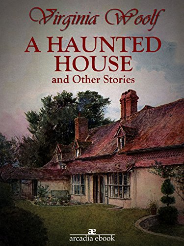

0
стр. з
0
сторінок

завантаження...

Вирджиния Вулф
Дом с привидениями и другие рассказы
Книгу перевел Андрей Бессонов
Метод чтения Ильи Франка
Сontents
A HAUNTED HOUSE
(Дом с привидениями; to haunt — являться /о привидениях/).
Whatever hour you woke there was a door shutting (/в/ какой бы час ты ни просыпался, был = раздавался /стук/ захлопнувшейся двери; whatever — какой бы то ни было; to wake — бодрствовать, просыпаться). From room to room they went, hand in hand (из комнаты в комнату ходили они, рука в руке), lifting here, opening there, making sure (/что-то/ поднимая тут, /что-то/ открывая там, проверяя /что-то/; to make sure — проверять, удостовериться от to make — делать и sure — уверенный, точный) —a ghostly couple (призрачная пара).
hour [aVqr], sure [SVqr], ghostly ['gqVstli], couple [kApl]
Whatever hour you woke there was a door shutting. From room to room they went, hand in hand, lifting here, opening there, making sure—a ghostly couple.
"Here we left it," she said (здесь мы оставили это, — говорила она; to leave — оставлять, покидать). And he added, "Oh, but here too!" (а он прибавлял: О, но здесь тоже!) "It's upstairs," she murmured (это наверху, — бормотала она; upstairs — на более высоком этаже от up — вверх и stairs — лестница, ступени). "And in the garden," he whispered (и в саду, — шептал он). "Quietly," they said, "or we shall wake them." (тихо, — говорили они, — или мы разбудим их).
upstairs [Ap'steqz], murmur ['mWmqr]
"Here we left it," she said. And he added, "Oh, but here too!" "It's upstairs," she murmured. "And in the garden," he whispered. "Quietly," they said, "or we shall wake them."
But it wasn't that you woke us (но дело не в том, что вы будили нас: «не было /то/, что вы будили нас»). Oh, no (нет-нет). "They're looking for it (они ищут это; to look for — искать от to look — смотреть и for — для, за); they're drawing the curtain," one might say, and so read on a page or two (они отодвигают занавеску, — можно было сказать, и в таком случае: «так» прочитать ещё страницу или две; one — один; человек, некто, «ты»; might — мог бы; on — зд.: дальше, ещё). "Now they've found it," one would be certain, stopping the pencil on the margin (теперь они нашли это, — ты был бы уверен, останавливая карандаш на полях = делая пометку; to find — найти). And then, tired of reading, one might rise and see for oneself (а затем, уставший от чтения, ты мог бы встать и посмотреть сам: «для самого себя»), the house all empty, the doors standing open (дом весь пустой, двери распахнуты: «стоящие открытыми»), only the wood pigeons bubbling with content (только лесные голуби булькают: «булькающие» от удовлетворения; with — с) and the hum of the threshing machine sounding from the farm (и гул молотилки доносится: «звучащий» с фермы; to thresh — молотить).
pigeon ['pIGqn], content [kqn'tent], machine [mq'SJn]
But it wasn't that you woke us. Oh, no. "They're looking for it; they're drawing the curtain," one might say, and so read on a page or two. "Now they've found it," one would be certain, stopping the pencil on the margin. And then, tired of reading, one might rise and see for oneself, the house all empty, the doors standing open, only the wood pigeons bubbling with content and the hum of the threshing machine sounding from the farm.
"What did I come in here for? (зачем я сюда вошёл? what for — зачем от what — что и for — для, за) What did I want to find?" (что я хотел найти?) My hands were empty (мои руки были пусты). "Perhaps it's upstairs then?" (возможно, это наверху тогда = в таком случае?) The apples were in the loft (яблоки были на чердаке). And so down again (и, значит, /спускаемся/ вниз опять; so — так, значит, поэтому), the garden still as ever (сад, тихий, как всегда), only the book had slipped into the grass (только книга соскользнула в траву).
empty ['empti], perhaps [pq'hxps]
"What did I come in here for? What did I want to find?" My hands were empty. "Perhaps it's upstairs then?" The apples were in the loft. And so down again, the garden still as ever, only the book had slipped into the grass.
But they had found it in the drawing room (но они нашли это в гостиной; to find; drawing room — гостиная от to withdraw — удалиться /из общего пространства/ и room — комната). Not that one could ever see them (не то чтобы человек мог когда-либо увидеть их). The window panes reflected apples, reflected roses (оконные стёкла отражали яблоки, отражали розы); all the leaves were green in the glass (все листья были зелёными в стекле). If they moved in the drawing room, the apple only turned its yellow side (если они двигались в гостиной, яблоко поворачивалось лишь своей жёлтой стороной). Yet, the moment after, if the door was opened (и всё же, секунду спустя, если дверь открывалась: «была открыта»), spread about the floor, hung upon the walls, pendant from the ceiling—what? (распростёртое по полу, повешенное = висящее на стенах, свисающее с потолка — что? to spread — распространять, расстилать; to hang — висеть; вешать) My hands were empty (мои руки были пусты).
drawing room ['drLIN "rHm], move [mHv], spread [spred], ceiling ['sJlIN]
But they had found it in the drawing room. Not that one could ever see them. The window panes reflected apples, reflected roses; all the leaves were green in the glass. If they moved in the drawing room, the apple only turned its yellow side. Yet, the moment after, if the door was opened, spread about the floor, hung upon the walls, pendant from the ceiling—what? My hands were empty.
The shadow of a thrush crossed the carpet (тень дрозда пересекла ковёр = пролетела); from the deepest wells of silence the wood pigeon drew its bubble of sound (из глубочайших колодцев молчания лесной голубь извлёк свой пузырёк звука; to draw — тащить, тянуть). "Safe, safe, safe," the pulse of the house beat softly (надёжно, надёжно, надёжно, — тихо бился пульс дома; safe — находящийся в безопасности, сохранный, надёжный; to beat — биться). "The treasure buried (сокровище спрятанное; to bury — закапывать, хоронить, прятать); the room ..." the pulse stopped short (комната... — пульс внезапно замер: «остановился короткий»). Oh, was that the buried treasure? (ах, было ли это спрятанное сокровище?).
pulse [pAls], beat [bJt], treasure ['treZqr], bury ['beri]
The shadow of a thrush crossed the carpet; from the deepest wells of silence the wood pigeon drew its bubble of sound. "Safe, safe, safe," the pulse of the house beat softly. "The treasure buried; the room ..." the pulse stopped short. Oh, was that the buried treasure?
A moment later the light had faded (секундой позже свет померк). Out in the garden then? (снаружи в саду, значит? then — тогда, значит) But the trees spun darkness for a wandering beam of sun (но деревья сплели тьму для блуждающего = вольного луча солнца; to spin — плести, прясть; to wander — бродить, блуждать). So fine, so rare, coolly sunk beneath the surface (такой тонкий, такой несравненный, холодно погрузившийся под поверхность; rare — редкий, редкостный, уникальный, несравненный, замечательный; to sink — погружаться, тонуть /не о человеке/) the beam I sought always burnt behind the glass (луч, которого я взыскал, всегда горел за стеклом; to seek — искать; to burn — гореть, жечь). Death was the glass (смерть была этим стеклом); death was between us (смерть была между нами); coming to the woman first, hundreds of years ago, leaving the house, sealing all the windows (пришедшая к женщине сперва, сотни лет назад, оставившая дом, запечатавшая все окна); the rooms were darkened (комнаты были затемнены).
wander ['wPndqr], surface ['sWfIs], darkened ['dRkqnd]
A moment later the light had faded. Out in the garden then? But the trees spun darkness for a wandering beam of sun. So fine, so rare, coolly sunk beneath the surface the beam I sought always burnt behind the glass. Death was the glass; death was between us; coming to the woman first, hundreds of years ago, leaving the house, sealing all the windows; the rooms were darkened.
He left it, left her, went North, went East (он оставил его /дом/, оставил её, пошёл /на/ север, пошёл /на/ восток; to leave — оставлять, покидать), saw the stars turned in the Southern sky (видел звёзды, повёрнутые = перевёрнутые в южном небе); sought the house, found it dropped beneath the Downs (искал дом, нашёл его брошенным под меловыми холмами; to seek; to find; to drop — ронять; the Downs — меловые холмы на юго-восточном побережье Англии). "Safe, safe, safe," the pulse of the house beat gladly (надёжно, надёжно, надёжно, — радостно бился пульс дома; to beat). "The Treasure yours (Сокровище твоё; пропущено is от to be — быть)."
southern ['sADqn], beat [bJt] beat [bJt] beaten [bJtqn]
He left it, left her, went North, went East, saw the stars turned in the Southern sky; sought the house, found it dropped beneath the Downs. "Safe, safe, safe," the pulse of the house beat gladly. "The Treasure yours."
The wind roars up the avenue (ветер с рёвом несётся по аллее; to roar — реветь; up — вверх, по направлению к говорящему или описываемому объекту/человеку; avenue — авеню, проспект, аллея, особенно ведущая к загородному дому). Trees stoop and bend this way and that (деревья склоняются и гнутся из стороны в сторону: «в эту сторону и в ту»; to stoop — сутулиться, склоняться; way — путь, сторона, способ). Moonbeams splash and spill wildly in the rain (лунные лучи плещутся и неукротимо проливаются в дожде = в потоках дождя; wild — дикий, неприручённый). But the beam of the lamp falls straight from the window (но луч от лампы падает = бьёт прямо из окна). The candle burns stiff and still (свеча горит непреклонно и тихо; stiff — жёсткий, чопорный). Wandering through the house, opening the windows, whispering not to wake us, the ghostly couple seek their joy (блуждая по дому, открывая окна, шепча, чтобы не разбудить нас, призрачная пара ищет: «ищут» свою радость; through — через, сквозь).
roar [rLr], avenue ['xvqnjH], through [TrV]
The wind roars up the avenue. Trees stoop and bend this way and that. Moonbeams splash and spill wildly in the rain. But the beam of the lamp falls straight from the window. The candle burns stiff and still. Wandering through the house, opening the windows, whispering not to wake us, the ghostly couple seek their joy.
"Here we slept," she says (здесь мы спали, — говорит она; to sleep). And he adds, "Kisses without number (и он прибавляет: Поцелуи без числа)." "Waking in the morning (просыпаться утром...) —" "Silver between the trees (серебро между деревьями...) —" "Upstairs (наверху...) —" "In the garden (в саду...) —" "When summer came (когда приходило лето; to come) —" "In winter snowtime (в зимнее снежное время; snow — снег; time — время) —" The doors go shutting far in the distance (двери идут = начинают закрываться далеко: «далеко на расстоянии»), gently knocking like the pulse of a heart (мягко стуча, как биение сердца).
distance ['dIstqns], knock [nPk], heart [hRt]
"Here we slept," she says. And he adds, "Kisses without number." "Waking in the morning—" "Silver between the trees—" "Upstairs—" "In the garden—" "When summer came—" "In winter snowtime—" The doors go shutting far in the distance, gently knocking like the pulse of a heart.
Nearer they come (ближе подходят они; near — близко); cease at the doorway (замирают у дверного проёма; to cease — останавливаться, прекращать; doorway — дверной проём от door — дверь и way — путь, проход). The wind falls, the rain slides silver down the glass (ветер стихает: «спадает», дождь скользит серебром вниз по стеклу). Our eyes darken (наши глаза темнеют); we hear no steps beside us (мы не слышим шагов рядом с собой); we see no lady spread her ghostly cloak (мы не видим, как дама расстилает свой призрачный плащ: «видим никакую даму расстилать»). His hands shield the lantern (его руки загораживают фонарь; to shield — отгораживать от shield — щит). "Look," he breathes (смотри, — дышит = шепчет он). "Sound asleep (крепко спят: «спящие»). Love upon their lips." (любовь на их губах).
cease [sJs], shield [SJld]
Nearer they come; cease at the doorway. The wind falls, the rain slides silver down the glass. Our eyes darken; we hear no steps beside us; we see no lady spread her ghostly cloak. His hands shield the lantern. "Look," he breathes. "Sound asleep. Love upon their lips."
Stooping, holding their silver lamp above us, long they look and deeply (склонившись, держа свой серебряный фонарь над нами, долго они смотрят и глубоко = пристально вглядываются). Long they pause (долго они медлят). The wind drives straightly (ветер дует прямо; to drive — гнать; вести, направлять, управлять); the flame stoops slightly (пламя склоняется слегка). Wild beams of moonlight cross both floor and wall (дикие = вольные лучи лунного света пересекают и пол, и стену; both... and — и, и от both — оба и and — и), and, meeting, stain the faces bent (и, встретившись = соприкасаясь, пятнают лица склонённые; to bend — сгибать, гнуть; склонять); the faces pondering (лица размышляющие); the faces that search the sleepers and seek their hidden joy (лица, которые изучают спящих и ищут их скрытую радость; to search — искать, обыскивать, изучать; to hide — прятать).
above [q'bAv], pause [pLz], both [bqVT], search [sWC]
Stooping, holding their silver lamp above us, long they look and deeply. Long they pause. The wind drives straightly; the flame stoops slightly. Wild beams of moonlight cross both floor and wall, and, meeting, stain the faces bent; the faces pondering; the faces that search the sleepers and seek their hidden joy.
"Safe, safe, safe," the heart of the house beats proudly (надёжно, надёжно, надёжно, — гордо бьётся сердце дома). "Long years—" he sighs (долгие годы, — вздыхает он). "Again you found me." (снова вы нашли меня; to find) "Here," she murmurs, "sleeping (здесь, — бормочет она, — спящие); in the garden reading (в саду, читающие); laughing, rolling apples in the loft (смеющиеся, катающие яблоки на чердаке). Here we left our treasure—" (здесь мы оставили наше сокровище...; to leave) Stooping, their light lifts the lids upon my eyes (склоняясь, их фонарь поднимает веки на моих глазах; light — свет, лампа, фонарь). "Safe! safe! safe!" the pulse of the house beats wildly (надёжно! надёжно! надёжно! — бешено бьётся пульс дома). Waking, I cry (просыпаясь, я вскрикиваю) "Oh, is this your buried treasure? (ах, так это ваше спрятанное сокровище?) The light in the heart (свет в сердце)."
sigh [saI], laugh [lRf]
"Safe, safe, safe," the heart of the house beats proudly. "Long years—" he sighs. "Again you found me." "Here," she murmurs, "sleeping; in the garden reading; laughing, rolling apples in the loft. Here we left our treasure—" Stooping, their light lifts the lids upon my eyes. "Safe! safe! safe!" the pulse of the house beats wildly. Waking, I cry "Oh, is this your buried treasure? The light in the heart."
LAPPIN AND LAPINOVA
(Лапин и Лапинова).
They were married (они поженились: «были обвенчаны»). The wedding march pealed out (свадебный марш отчаянно трезвонил; to peal — трезвонить; out — наружу, вы-). The pigeons fluttered (голуби били крыльями). Small boys in Eton jackets threw rice (маленькие мальчики в /форменных/ итонских пиджаках бросали рис; to throw); a fox terrier sauntered across the path (фокс-терьер вальяжно пересек дорожку; to saunter — вальяжно, не спеша идти, прогуливаться; across — через, поперёк); and Ernest Thorburn led his bride to the car through that small inquisitive crowd of complete strangers (и Эрнест Торбёрн повёл свою невесту к машине через ту маленькую любопытную толпу совершенно чужих людей: «полных незнакомцев»; to lead — вести) which always collects in London to enjoy other people’s happiness or unhappiness (которая всегда собирается в Лондоне, чтобы насладиться счастьем или несчастьем других людей; people — люди; народ). Certainly he looked handsome and she looked shy (конечно, он выглядел красивым, а она выглядела стеснительной). More rice was thrown, and the car moved off (бросили ещё риса: «ещё рис был брошен», и машина отъехала; more — больше, ещё; to throw — бросать; to move — двигаться; off — прочь).
Eton ['Jtn], Ernest ['WnIst], Thorburn ['TLbWn], crowd [kraVd], complete [kqm'plJt], throw [TrqV] threw [TrH] thrown [TrqVn]
They were married. The wedding march pealed out. The pigeons fluttered. Small boys in Eton jackets threw rice; a fox terrier sauntered across the path; and Ernest Thorburn led his bride to the car through that small inquisitive crowd of complete strangers which always collects in London to enjoy other people’s happiness or unhappiness. Certainly he looked handsome and she looked shy. More rice was thrown, and the car moved off.
That was on Tuesday (это было во вторник). Now it was Saturday (теперь была суббота: «это была»). Rosalind had still to get used to the fact that she was Mrs. Ernest Thorburn (Розалинде всё ещё предстояло привыкнуть к тому факту, что она «была» миссис Эрнест Торбёрн; to have to — быть должным, вынужденным, обязанным; to get used to — привыкнуть к чему-либо: «сделаться привыкшим к»). Perhaps she never would get used to the fact that she was Mrs. Ernest Anybody (возможно, она никогда не привыкнет к тому факту, что она — миссис Эрнест Кто-Угодно), she thought, as she sat in the bow window of the hotel looking over the lake to the mountains (подумала она, пока она сидела = сидя в эркере отеля, выходящем поверх озера к горам = окно которого выходило на озеро и горы; to think — думать; to sit — сидеть; bow window от bow — дуга, лук и window — окно; to look — смотреть; выходить /об окне/), and waited for her husband to come down to breakfast (и /пока она/ ждала = ожидая, /когда/ её муж спустится к завтраку; to wait for — ждать кого-либо; for — для; wait for somebody to do something — ждать, когда кто-либо сделает что-либо: «ждать кого-либо сделать что-либо»; to come down — спуститься от to come — прийти и down — вниз).
Rosalind ['rPzqlInd], Mrs. ['mIsIz], bow [bqV], hotel [hqV'tel]
That was on Tuesday. Now it was Saturday. Rosalind had still to get used to the fact that she was Mrs. Ernest Thorburn. Perhaps she never would get used to the fact that she was Mrs. Ernest Anybody, she thought, as she sat in the bow window of the hotel looking over the lake to the mountains, and waited for her husband to come down to breakfast.
Ernest was a difficult name to get used to (Эрнест было трудным именем, к которому привыкать = к имени Эрнест трудно привыкнуть). It was not the name she would have chosen (это не было имя, /которое/ она бы выбрала /сама/; to choose). She would have preferred Timothy, Antony, or Peter (она бы предпочла Тимоти, Энтони или Питер). He did not look like Ernest either (он и не выглядел, как Эрнест; either — тоже не). The name suggested the Albert Memorial, mahogany sideboards, steel engravings of the Prince Consort with his family (это имя наводило на мысли о Мемориале /принца/ Альберта, о буфетах красного дерева, о гравюрах /с изображением/ принца-консорта с его семьёй; mahogany — красное дерево; steel engraving — гравюра на стали, steel — сталь; consort — супруг, супруга /обычно о королевской семье/: queen consort — королева-супруга, prince consort — принц-консорт /в Великобритании супруг царствующей королевы, не являющийся сам королём/) — her mother-in-law’s dining-room in Porchester Terrace in short (/о/ столовой её свекрови на Порчестер-террес, короче говоря; mother-in-law — свекровь или тёща от mother — мать, in — в и law — закон; dining-room — столовая от to dine — обедать и room — комната; in short — коротко говоря, вкратце: «в коротком»).
Timothy ['tImqTi], either ['aIDqr] или ['JDqr], suggest [sq'Gest]
Ernest was a difficult name to get used to. It was not the name she would have chosen. She would have preferred Timothy, Antony, or Peter. He did not look like Ernest either. The name suggested the Albert Memorial, mahogany sideboards, steel engravings of the Prince Consort with his family — her mother-in-law’s dining-room in Porchester Terrace in short.
But here he was (но вот и он: «здесь он был»). Thank goodness he did not look like Ernest — no (слава Богу, он не выглядел как Эрнест = не был похож). But what did he look like? (но на что он был похож? «что он выглядел как») She glanced at him sideways (она глянула на него искоса). Well, when he was eating toast he looked like a rabbit (ну, когда он ел тост, он выглядел как кролик). Not that anyone else would have seen a likeness to a creature so diminutive and timid (не то что кто-то ещё увидел бы сходство с существом столь миниатюрным и робким; anyone — кто угодно; to see) in this spruce, muscular young man with the straight nose, the blue eyes, and the very firm mouth (в этом опрятном, мускулистом молодом человеке с этим прямым носом, этими голубыми глазами и этим очень твёрдым = твёрдо очерченным ртом). But that made it all the more amusing (но это делало это /сходство/ ещё более забавным; all the more — ещё более, всё больше: «всё тем более»).
creature ['krJCqr], timid ['tImId]
But here he was. Thank goodness he did not look like Ernest — no. But what did he look like? She glanced at him sideways. Well, when he was eating toast he looked like a rabbit. Not that anyone else would have seen a likeness to a creature so diminutive and timid in this spruce, muscular young man with the straight nose, the blue eyes, and the very firm mouth. But that made it all the more amusing.
His nose twitched very slightly when he ate (его нос подёргивался совсем немножко: «очень слегка», когда он ел; to eat — есть). So did her pet rabbit’s (так же делал /нос/ её ручного кролика). She kept watching his nose twitch (он всё смотрела, как его нос дёргается: «смотрела его нос дёргаться»; to keep — хранить, держаться; to keep doing something — постоянно, непрерывно делать что-либо); and then she had to explain, when he caught her looking at him, why she laughed (а затем ей пришлось объяснять, когда он поймал её смотрящей на него = заметил, что она на него смотрит, почему она смеётся: «смеялась»; to have to — быть вынуждённым; to catch — ловить, поймать).
eat [Jt] ate [e(I)t] eaten ['Jtqn], catch [kxC] caught [kLt] caught [kLt]
His nose twitched very slightly when he ate. So did her pet rabbit’s. She kept watching his nose twitch; and then she had to explain, when he caught her looking at him, why she laughed.
“It’s because you’re like a rabbit, Ernest,” she said (это потому что ты вылитый кролик, Эрнест, — сказала она). “Like a wild rabbit,” she added, looking at him (вылитый дикий кролик, — прибавила она, взглянув на него). “A hunting rabbit (охотничий = хищный кролик); a King Rabbit (Кролик-царь); a rabbit that makes laws for all the other rabbits (кролик, который устанавливает: «делает» законы для всех остальных кроликов).”
wild [waIld], law [lL]
“It’s because you’re like a rabbit, Ernest,” she said. “Like a wild rabbit,” she added, looking at him. “A hunting rabbit; a King Rabbit; a rabbit that makes laws for all the other rabbits.”
Ernest had no objection to being that kind of rabbit (Эрнест не имел возражения = не возражал быть таким кроликом: «такой разновидностью кролика»), and since it amused her to see him twitch his nose (и, раз её забавляло: «это забавляло её» видеть, как он подёргивает носом) — he had never known that his nose twitched (он никогда раньше не знал, что его нос подёргивается; to know) — he twitched it on purpose (он подёргивал им нарочно; purpose — цель, намерение). And she laughed and laughed (и она смеялась и смеялась); and he laughed too, so that the maiden ladies and the fishing man and the Swiss waiter in his greasy black jacket all guessed right (и он смеялся тоже, так что горничные, и рыбачивший человек, и швейцарский официант в своём засаленном чёрном пиджаке — все угадали правильно); they were very happy (они были очень счастливы). But how long does such happiness last? they asked themselves (но как долго длится такое счастье? — спрашивали они себя); and each answered according to his own circumstances (и каждый ответил согласно своим собственным обстоятельствам).
know [nqV] knew [njH] known [nqVn], purpose ['pWpqs], circumstance ['sWkqmstxns]
Ernest had no objection to being that kind of rabbit, and since it amused her to see him twitch his nose — he had never known that his nose twitched — he twitched it on purpose. And she laughed and laughed; and he laughed too, so that the maiden ladies and the fishing man and the Swiss waiter in his greasy black jacket all guessed right; they were very happy. But how long does such happiness last? they asked themselves; and each answered according to his own circumstances.
At lunch time, seated on a clump of heather beside the lake (во время ланча, усевшаяся = сидя на подушке вереска у озера; clump — комок), “Lettuce, rabbit?” said Rosalind, holding out the lettuce that had been provided to eat with the hardboiled eggs (/хочешь/ латук, кролик? — сказала Розалинда, протягивая латук, который подали: «был подан», чтобы съесть /его/ с варёными вкрутую яйцами; to hold out — протягивать от to hold — держать и out — наружу; to provide — предоставлять). “Come and take it out of my hand,” she added (иди и возьми его из моей руки, — прибавила она), and he stretched out and nibbled the lettuce and twitched his nose (и он потянулся и откусил /кусочек/ латука и подёргал носом; to stretch out — тянуться от to stretch — растягивать, тянуться и out — наружу).
heather ['heDq], lettuce ['letIs]
At lunch time, seated on a clump of heather beside the lake, “Lettuce, rabbit?” said Rosalind, holding out the lettuce that had been provided to eat with the hardboiled eggs. “Come and take it out of my hand,” she added, and he stretched out and nibbled the lettuce and twitched his nose.
“Good rabbit, nice rabbit,” she said, patting him, as she used to pat her tame rabbit at home (хороший кролик, милый кролик, — сказала она, похлопывая его, как она похлопывала своего смирного кролика дома; used to do something — делал/а/ что-либо раньше). But that was absurd (но это было нелепо). He was not a tame rabbit, whatever he was (он не был смирным кроликом, каким бы он ни был). She turned it into French (она превратила = перевела это на французский). “Lapin,” she called him (Lapin, — назвала она его). But whatever he was, he was not a French rabbit (но каким бы он ни был, он не был французским кроликом). He was simply and solely English-born at Porchester Terrace, educated at Rugby (он был — просто и исключительно — рождённый в Англии на Порчестер-террес, воспитанный в Регби; English — английский, born — рождённый; to educate — давать образование, обучать); now a clerk in His Majesty’s Civil Service (теперь — клерк на службе Его Величества; civil service — государственная служба, чиновничий аппарат от civil — гражданский, штатский и service — служба).
absurd [qb'zWd], Rugby ['rAgbi], clerk [klɑːk]
“Good rabbit, nice rabbit,” she said, patting him, as she used to pat her tame rabbit at home. But that was absurd. He was not a tame rabbit, whatever he was. She turned it into French. “Lapin,” she called him. But whatever he was, he was not a French rabbit. He was simply and solely English-born at Porchester Terrace, educated at Rugby; now a clerk in His Majesty’s Civil Service.
So she tried “Bunny” next (поэтому она затем попробовала «Зайку»; next — затем, следующий); but that was worse (но это было /ещё/ хуже). “Bunny” was someone plump and soft and comic («Зайка» был кто-то полноватый, и мягкий, и комичный); he was thin and hard and serious (он был худой, и жилистый: «твёрдый», и серьёзный). Still, his nose twitched (и всё же его нос подёргивался). “Lappin,” she exclaimed suddenly (Лапин, — воскликнула она вдруг); and gave a little cry as if she had found the very word she looked for (и тихонько вскрикнула: «издала маленький крик», словно нашла то самое слово, /которое/ искала; to give — давать; to find — найти; to look for — искать от to look — смотреть и for — для, за). “Lappin, Lappin, King Lappin,” she repeated (Лапин, Лапин, король Лапин, — повторяла она). It seemed to suit him exactly (это, казалось, подходит ему идеально: «казалось подходить ему точно»; to seem — казаться); he was not Ernest, he was King Lappin (он был не Эрнест, он был король Лапин). Why? She did not know (почему? она не знала).
serious ['sIqriqs], suit [sjHt]
So she tried “Bunny” next; but that was worse. “Bunny” was someone plump and soft and comic; he was thin and hard and serious. Still, his nose twitched. “Lappin,” she exclaimed suddenly; and gave a little cry as if she had found the very word she looked for. “Lappin, Lappin, King Lappin,” she repeated. It seemed to suit him exactly; he was not Ernest, he was King Lappin. Why? She did not know.
When there was nothing new to talk about on their long solitary walks (когда не было ничего нового, о чём поговорить во время их долгих уединённых прогулок) — and it rained, as everyone had warned them that it would rain (и шёл дождь, как все предупреждали их, что будет идти дождь; it rained — шёл дождь от to rain — идти, лить /о дожде/); or when they were sitting over the fire in the evening, for it was cold (или когда они сидели у камина вечером, потому что было холодно; over — над; fire — огонь, камин), and the maiden ladies had gone and the fishing man (и горничные ушли, /как/ и рыбачивший человек), and the waiter only came if you rang the bell for him (и официант приходил, только если ты звонил /в/ колокольчик «за ним»; to ring — звонить, звенеть), she let her fancy play with the story of the Lappin tribe (она давала своей фантазии играть с историей племени Лапина; to let — позволять, давать).
solitary ['sPlItqri], warn [wLn]
When there was nothing new to talk about on their long solitary walks — and it rained, as everyone had warned them that it would rain; or when they were sitting over the fire in the evening, for it was cold, and the maiden ladies had gone and the fishing man, and the waiter only came if you rang the bell for him, she let her fancy play with the story of the Lappin tribe.
Under her hands — she was sewing; he was reading — they became very real, very vivid, very amusing (под её руками — она шила, он читал — они становились очень реальными, очень живыми, очень забавными; to become — становиться; vivid — яркий, наглядный, красочный, живой). Ernest put down the paper and helped her (Эрнест откладывал газету и помогал ей; to put down: «положить вниз»). There were the black rabbits and the red (были чёрные кролики и рыжие: «красные»; there were — были, имелись); there were the enemy rabbits and the friendly (были враждебные кролики и дружественные). There were the wood in which they lived and the outlying prairies and the swamp (был лес, в котором они жили, и простиравшиеся за лесом прерии и топь; outlying — находящийся за пределами, внешний, удалённый от out — снаружи и to lie — лежать, простираться).
sew [sqV] sewed [sqVd] sewn [sqVn], vivid ['vIvId], prairie ['preqri], swamp [swPmp]
Under her hands — she was sewing; he was reading — they became very real, very vivid, very amusing. Ernest put down the paper and helped her. There were the black rabbits and the red; there were the enemy rabbits and the friendly. There were the wood in which they lived and the outlying prairies and the swamp.
Above all there was King Lappin (надо всем был король Лапин), who, far from having only the one trick — that he twitched his nose (который, владея не только одним искусством: «далеко от владения только одним трюком» — что он подёргивал носом) — became as the days passed an animal of the greatest character (стал с течением времени: «пока дни прошли» колоритнейшим зверем: «зверем величайшего характера»); Rosalind was always finding new qualities in him (Розалинда всегда находила новые качества в нём). But above all he was a great hunter (но прежде всего: «превыше всего» он был отменным охотником).
above [q'bAv], character ['kxrqktqr], quality ['kwPlqti]
Above all there was King Lappin, who, far from having only the one trick — that he twitched his nose — became as the days passed an animal of the greatest character; Rosalind was always finding new qualities in him. But above all he was a great hunter.
“And what,” said Rosalind, on the last day of the honeymoon, “did the King do today?” (и что же, — сказала Розалинда в последний день медового месяца, — делал король сегодня? on — на; honeymoon от honey — мёд и moon — луна, месяц) In fact they had been climbing all day (на самом деле они взбирались = ходили по горам весь день); and she had worn a blister on her heel (и у неё на пятке была мозоль: «она носила мозоль на пятке»; to wear); but she did not mean that (но она не имела это в виду; to mean — значить, означать, иметь в виду). “Today,” said Ernest, twitching his nose as he bit the end off his cigar, “he chased a hare.” (сегодня, — сказал Эрнест, дёрнув носом, пока откусывал кончик у своей сигары, — он гнался за зайцем; to bite off — откусывать) He paused; struck a match, and twitched again (он помолчал, чиркнул спичкой и дёрнул снова; to strike — ударить, чиркнуть /спичкой/). “A woman hare,” he added (/за/ зайчихой, — добавил он).
climb [klaIm], cigar [sI'gRr], hare [heqr]
“And what,” said Rosalind, on the last day of the honeymoon, “did the King do today?” In fact they had been climbing all day; and she had worn a blister on her heel; but she did not mean that. “Today,” said Ernest, twitching his nose as he bit the end off his cigar, “he chased a hare.” He paused; struck a match, and twitched again. “A woman hare,” he added.
“A white hare!” Rosalind exclaimed, as if she had been expecting this (/за/ белой зайчихой! — воскликнула Розалинда, словно ожидала этого). “Rather a small hare; silver grey; with big bright eyes?” (довольно маленькая зайчиха, серебристо-серая, с большими сияющими глазами? bright — яркий, светящийся) “Yes,” said Ernest, looking at her as she had looked at him (да, — сказал Эрнест, посмотрев на неё /так же/, как она посмотрела на него), “a smallish animal; with eyes popping out of her head, and two little front paws dangling.” (довольно маленький зверёк, с глазами, /чуть ли не/ вываливающимися из её головы = выпуклыми, и двумя болтающимися передними лапками; smallish — довольно маленький от small — маленький и -ish — суффикс приблизительности; to pop out — вываливаться, выскакивать; little paw — маленькая лапа = лапка) It was exactly how she sat, with her sewing dangling in her hands (это было точно как она сидела = именно так она сидела, с своим шитьём, болтавшимся в её руках; to sit); and her eyes, that were so big and bright, were certainly a little prominent (а её глаза, которые были такие большие и сияющие, были действительно немного выпуклые: «выдающиеся»; a little — немного).
front [frAnt], certainly ['sWtqnli], prominent ['prPmInqnt]
“A white hare!” Rosalind exclaimed, as if she had been expecting this. “Rather a small hare; silver grey; with big bright eyes?” “Yes,” said Ernest, looking at her as she had looked at him, “a smallish animal; with eyes popping out of her head, and two little front paws dangling.” It was exactly how she sat, with her sewing dangling in her hands; and her eyes, that were so big and bright, were certainly a little prominent.
“Ah, Lapinova,” Rosalind murmured (а, Лапинова, — прошептала Розалинда). “Is that what she’s called?” said Ernest —“the real Rosalind?” (так вот как её зовут? — сказал Эрнест, — настоящую Розалинду? «есть ли это как она зовётся»; she is called — её зовут, она зовётся от to call — звать, называть) He looked at her (он посмотрел на неё). He felt very much in love with her (он чувствовал себя очень влюблённым в неё; to feel — чувствовать, чувствовать себя; in love with — влюблённый в кого-либо: «в любви с»). “Yes; that’s what she’s called,” said Rosalind. “Lapinova.” (да, вот так её зовут, — сказала Розалинда, — Лапинова: «это есть как она зовётся»).
murmur ['mWmqr]
“Ah, Lapinova,” Rosalind murmured. “Is that what she’s called?” said Ernest —“the real Rosalind?” He looked at her. He felt very much in love with her. “Yes; that’s what she’s called,” said Rosalind. “Lapinova.”
And before they went to bed that night it was all settled (и прежде, чем они пошли в постель = пошли спать той ночью, всё было решено: «это было всё устроено»; to go; to settle — устраиваться, устраивать, селиться, устанавливать, улаживать). He was King Lappin; she was Queen Lapinova (он был король Лапин; она была королева Лапинова). They were the opposite of each other (они были противоположным = противоположностями друг друга); he was bold and determined (он был смел и решителен); she wary and undependable (она — опаслива и ненадёжна). He ruled over the busy world of rabbits (он властвовал над оживлённым миром кроликов); her world was a desolate, mysterious place, which she ranged mostly by moonlight (её мир был пустынным, таинственным местом, /по/ которому она бродила чаще всего при лунном свете; desolate — пустынный, безлюдный, глухой; mostly — в основном, главным образом, чаще всего). All the same, their territories touched (но всё равно их территории соприкасались; all the same — всё равно: «всё то же»); they were King and Queen (они были король и королева).
opposite ['PpqzIt], wary ['weqri], busy ['bIzi], desolate ['desqlqt], mysterious [mI'stIqriqs]
And before they went to bed that night it was all settled. He was King Lappin; she was Queen Lapinova. They were the opposite of each other; he was bold and determined; she wary and undependable. He ruled over the busy world of rabbits; her world was a desolate, mysterious place, which she ranged mostly by moonlight. All the same, their territories touched; they were King and Queen.
Thus when they came back from their honeymoon they possessed a private world (таким образом, когда они вернулись из своего медового месяца = свадебного путешествия, они владели неким личным миром; to come back — вернуться: «прийти назад»), inhabited, save for the one white hare, entirely by rabbits (населённым, кроме той одной белой зайчихи, одними кроликами; save — кроме; entirely — целиком, полностью). No one guessed that there was such a place, and that of course made it all the more amusing (никто не догадывался, что существовало такое место, и это, конечно, делало это всё тем более забавным). It made them feel, more even than most young married couples, in league together against the rest of the world (это побуждало их чувствовать себя — больше даже, чем большинство молодых женатых пар, — в сговоре против остального мира; to make — делать, заставлять; to feel — чувствовать, чувствовать себя).
possess [pq'zes], private ['praIvIt], entirely [In'taIqli]
Thus when they came back from their honeymoon they possessed a private world, inhabited, save for the one white hare, entirely by rabbits. No one guessed that there was such a place, and that of course made it all the more amusing. It made them feel, more even than most young married couples, in league together against the rest of the world.
Often they looked slyly at each other when people talked about rabbits and woods and traps and shooting (часто они смотрели лукаво друг на друга, когда люди говорили о кроликах, лесах, ловушках и стрельбе = охоте). Or they winked furtively across the table when Aunt Mary said (или они подмигивали /друг другу/ тайком через стол, когда тётушка Мэри говорила) that she could never bear to see a hare in a dish — it looked so like a baby (что никогда не может вынести вида зайца на блюде: «не может вынести видеть» — он выглядит настолько похоже на ребёнка = прямо как ребёнок; to bear — нести, выносить, сносить; to look — глядеть; выглядеть): or when John, Ernest’s sporting brother, told them what price rabbits were fetching that autumn in Wiltshire, skins and all (или когда Джон, увлечённый охотой брат Эрнеста, рассказывал им, какую цену приносят = сколько стоят кролики этой осенью в Уилтшире, со шкурой и всем /остальным/; sport — спорт; устар. развлечение, в том числе охота; to tell — сообщать, рассказывать).
aunt [Rnt], autumn ['Ltqm]
Often they looked slyly at each other when people talked about rabbits and woods and traps and shooting. Or they winked furtively across the table when Aunt Mary said that she could never bear to see a hare in a dish — it looked so like a baby: or when John, Ernest’s sporting brother, told them what price rabbits were fetching that autumn in Wiltshire, skins and all.
Sometimes when they wanted a gamekeeper, or a poacher or a Lord of the Manor (иногда, когда они хотели = когда им был нужен для игры егерь или браконьер или помещик: «господин поместья»), they amused themselves by distributing the parts among their friends (они развлекали себя, распределяя роли среди своих друзей). Ernest’s mother, Mrs. Reginald Thorburn, for example, fitted the part of the Squire to perfection (мать Эрнеста, миссис Реджинальд Торбёрн, например: «для примера», подходила /для/ роли Сквайра идеально: «до совершенства»; to fit — подходить, особенно по размеру или форме). But it was all secret — that was the point of it (но это всё было тайным — таков был смысл этого); nobody save themselves knew that such a world existed (никто, кроме них самих, не знал, что такой мир существует; save — кроме).
manor ['mxnqr], distribute [dI'strIbjHt]
Sometimes when they wanted a gamekeeper, or a poacher or a Lord of the Manor, they amused themselves by distributing the parts among their friends. Ernest’s mother, Mrs. Reginald Thorburn, for example, fitted the part of the Squire to perfection. But it was all secret — that was the point of it; nobody save themselves knew that such a world existed.
Without that world, how, Rosalind wondered, that winter could she have lived at all? (без этого мира — как, спрашивала себя Розалинда, этой зимой она вообще могла жить? to wonder — задаваться вопросом, интересоваться) For instance, there was the golden-wedding party, when all the Thorburns assembled at Porchester Terrace to celebrate the fiftieth anniversary of that union which had been so blessed (например, было празднование золотой свадьбы, когда все Торбёрны собрались на Порчестер-террес, чтобы отпраздновать пятидесятую годовщину того союза, который был так благословен; golden wedding — золотая свадьба; party — вечеринка, праздник) — had it not produced Ernest Thorburn? (/разве/ не произвёл он Эрнеста Торбёрна?) and so fruitful — had it not produced nine other sons and daughters into the bargain, many themselves married and also fruitful? (и так плодовит — /разве/ не произвёл он девять других сыновей и дочерей впридачу, многие /из которых были/ сами в браке и также плодовиты? into the bargain — впридачу, за ту же цену: «в эту сделку»; married — женатый или замужняя от to marry — жениться) She dreaded that party (она испытывала ужас перед этим торжеством). But it was inevitable (но оно было неизбежно).
wonder ['wAndqr], anniversary [xnI'vWsqri], fruitful ['frHtfql], dread [dred]
Without that world, how, Rosalind wondered, that winter could she have lived at all? For instance, there was the golden-wedding party, when all the Thorburns assembled at Porchester Terrace to celebrate the fiftieth anniversary of that union which had been so blessed — had it not produced Ernest Thorburn? and so fruitful — had it not produced nine other sons and daughters into the bargain, many themselves married and also fruitful? She dreaded that party. But it was inevitable.
As she walked upstairs (пока она шагала вверх по лестнице; upstairs — вверх по лестнице, на верхнем этаже) she felt bitterly that she was an only child and an orphan at that (он чувствовала горько = с горечью, что она единственный ребёнок и сирота к тому же; to feel — чувствовать); a mere drop among all those Thorburns assembled in the great drawing-room with the shiny satin wallpaper and the lustrous family portraits (простая = всего лишь капля среди всех эти Торбёрнов, собравшихся в большой гостиной с блестящими атласными обоями и глянцевитыми семейными портретами). The living Thorburns much resembled the painted (живые Торбёрны много = очень напоминали нарисованных: «написанных»; to paint — писать красками); save that instead of painted lips they had real lips (за исключением /того/, что вместо нарисованных губ у них были настоящие губы); out of which came jokes (из которых исходили шутки); jokes about schoolrooms, and how they had pulled the chair from under the governess (анекдоты о школьных = классных комнатах и /о том,/ как они вытаскивали стул из-под гувернантки; school — школа; room — комната); jokes about frogs and how they had put them between the virgin sheets of maiden ladies (анекдоты о лягушках и /о том,/ как они клали их между девственными = девственно чистыми простынями горничных).
orphan ['Lfqn], resemble [rI'zembl], instead [In'sted], governess ['gAvqnqs]
As she walked upstairs she felt bitterly that she was an only child and an orphan at that; a mere drop among all those Thorburns assembled in the great drawing-room with the shiny satin wallpaper and the lustrous family portraits. The living Thorburns much resembled the painted; save that instead of painted lips they had real lips; out of which came jokes; jokes about schoolrooms, and how they had pulled the chair from under the governess; jokes about frogs and how they had put them between the virgin sheets of maiden ladies.
As for herself (что до неё), she had never even made an apple-pie bed (она даже никогда не делала /никому/ «яблочный пирожок»; apple-pie bed — розыгрыш, при котором простыню складывают пополам и прикрывают одеялом — получается неглубокий «карман», и жертва розыгрыша не помещается в собственной постели; pie — пирожок, пирог). Holding her present in her hand she advanced toward her mother-in-law sumptuous in yellow satin (держа подарок в руке, она приближалась к своей свекрови, великолепной = выглядевшей великолепно в жёлтом атласе); and toward her father-in-law decorated with a rich yellow carnation (и к своему свёкру, украшенному богатой = роскошной жёлтой гвоздикой).
toward [tq'wLd], sumptuous ['sAmpCVqs], decorate ['dekqreIt]
As for herself, she had never even made an apple-pie bed. Holding her present in her hand she advanced toward her mother-in-law sumptuous in yellow satin; and toward her father-in-law decorated with a rich yellow carnation.
All round them on tables and chairs there were golden tributes, some nestling in cotton wool; others branching resplendent (всё = повсюду вокруг них на столах и стульях были золотые дары, некоторые — закутанные в вату, другие — распростёртые = неприкрытые /и/ сияющие; to nestle — угнездиться, уютно устроиться, укрыться; cotton wool — вата от cotton — хлопок и wool — шерсть, шерстяная пряжа, волокно; to branch — ответвляться, раскинуться, расходиться, расширяться) — candlesticks; cigar boxes; chains (канделябры, сигарные коробки, цепочки); each stamped with the goldsmith’s proof that it was solid gold, hall-marked, authentic (каждый /подарок/ — проштампованный подтверждением ювелира, что это чистое: «твёрдое» золото, высшей пробы: «с проставленной пробой», подлинное; proof — доказательство, подтверждение; to hallmark — ставить пробу).
tribute ['trIbjHt], nestle [nesl], authentic [L'TentIk]
All round them on tables and chairs there were golden tributes, some nestling in cotton wool; others branching resplendent — candlesticks; cigar boxes; chains; each stamped with the goldsmith’s proof that it was solid gold, hall-marked, authentic.
But her present was only a little pinchbeck box pierced with holes (но её подарок был всего лишь маленькая томпаковая коробочка, пронзённая дырочками = с дырочками; pinchbeck — томпак, разновидность латуни); an old sand caster, an eighteenth-century relic, once used to sprinkle sand over wet ink (старая песочница, реликвия восемнадцатого века, когда-то использовавшаяся, чтобы рассыпать песок поверх мокрых = ещё не высохших чернил; sand — песок; caster — солонка или перечница с дырочками от to cast — бросать, разбрасывать). Rather a senseless present she felt — in an age of blotting paper (довольно бессмысленный подарок, чувствовала она, — в век промокательной бумаги); and as she proffered it, she saw in front of her the stubby black handwriting (и, когда она протягивала = вручала его, она увидела перед собой квадратный чёрный почерк; in front of — перед чем-либо; stubby — коренастый, приземистый, короткий и толстый от stub — пень, обрубок) in which her mother-in-law when they were engaged had expressed the hope that “My son will make you happy.” (которым: «в котором» её свекровь, когда они были помолвлены, выразила надежду, что «Мой сын сделает вас счастливой») No, she was not happy (нет, она не была счастлива). Not at all happy (совсем не счастлива; not at all — совсем нет; not — не, at all — совсем: «во всём»). She looked at Ernest, straight as a ramrod with a nose like all the noses in the family portraits (она посмотрела на Эрнеста, прямого как шомпол, с носом, как все носы на этих семейных портретах); a nose that never twitched at all (/с/ носом, который совсем никогда не подёргивался).
pierce [pIqs], engaged [In'geIGd]
But her present was only a little pinchbeck box pierced with holes; an old sand caster, an eighteenth-century relic, once used to sprinkle sand over wet ink. Rather a senseless present she felt — in an age of blotting paper; and as she proffered it, she saw in front of her the stubby black handwriting in which her mother-in-law when they were engaged had expressed the hope that “My son will make you happy.” No, she was not happy. Not at all happy. She looked at Ernest, straight as a ramrod with a nose like all the noses in the family portraits; a nose that never twitched at all.
Then they went down to dinner (затем они спустились к обеду; to go down — спускаться: «идти вниз»). She was half hidden by the great chrysanthemums that curled their red and gold petals into large tight balls (она была наполовину скрыта огромными хризантемами, которые скрутили свои красные и золотые лепестки в большие плотные шары; to hide — прятать, прятаться; to curl — завивать, виться /о волосах, дыме.../, закручивать). Everything was gold (всё было золото). A gold-edged card with gold initials intertwined (карточка с золотым обрезом /и/ с золотыми переплетёнными инициалами = вензелем; gold-edged от gold — золото и edge — край) recited the list of all the dishes that would be set one after another before them (оглашала список всех блюд, которые будут выставлены, одно за другим, перед ними; to recite — декламировать, читать вслух /стихи/, излагать, перечислять; would зд.: показатель будущего в прошедшем; to set — устанавливать). She dipped her spoon in a plate of clear golden fluid (она макнула свою ложку в тарелку прозрачной золотистой жидкости; clear — ясный, прозрачный).
chrysanthemum [krI'sxnTqmqm], initial [I'nISql], recite [rI'saIt]
Then they went down to dinner. She was half hidden by the great chrysanthemums that curled their red and gold petals into large tight balls. Everything was gold. A gold-edged card with gold initials intertwined recited the list of all the dishes that would be set one after another before them. She dipped her spoon in a plate of clear golden fluid.
The raw white fog outside had been turned by the lamps into a golden mesh (сырой белый туман снаружи был превращён лампами в золотистую неплотную ткань; fog — густой туман, мгла; to turn — поворачивать, вращаться, превращать, превращаться; mesh — сетка, неплотная ткань) that blurred the edges of the plates and gave the pineapples a rough golden skin (которая смазала края тарелок и дала ананасам шершавую золотистую кожу; to blur — сделать неотчётливым, неясным, размытым, смутным; to give; rough — грубый, неровный, шероховатый). Only she herself in her white wedding dress peering ahead of her with her prominent eyes seemed insoluble as an icicle (только она сама в своём белом свадебном платье, смотрящая перед собой своими выпуклыми глазами, казалась твёрдой, как сосулька; to peer — всматриваться пристально или с трудом; insoluble — нерастворимый, прочный).
blur [blWr], rough [rAf], icicle ['aIsIkl]
The raw white fog outside had been turned by the lamps into a golden mesh that blurred the edges of the plates and gave the pineapples a rough golden skin. Only she herself in her white wedding dress peering ahead of her with her prominent eyes seemed insoluble as an icicle.
As the dinner wore on, however, the room grew steamy with heat (пока обед продолжался, однако, комната стала влажной от жары; to wear on — проходить /о времени/, медленно тянуться от to wear — носить /одежду/, изнашивать, утомлять, медленно тянуться и on — дальше, ещё; to grow — расти, растить, становиться; steamy — полный пара, жаркий и влажный от steam — пар). Beads of perspiration stood out on the men’s foreheads (бусины = капли пота выступили на лбах мужчин; to stand out — выступать, выдаваться от to stand — стоять и out — наружу). She felt that her icicle was being turned to water (она чувствовала, что её сосульку превращают в воду; to feel — чувствовать; to turn — превращать). She was being melted; dispersed; dissolved into nothingness (её растапливали; рассеивали; растворяли в небытие: «она была растапливаема...»); and would soon faint (и /она/ скоро упадёт в обморок; would зд.: показатель будущего в прошедшем). Then through the surge in her head and the din in her ears she heard a woman’s voice exclaim (затем сквозь пульсацию крови в голове и гам в ушах она услышала, как женский голос восклицает: «услышала голос женщины воскликнуть»; surge — резкий рост, большая волна, пульсация, биение; to hear — слышать), “But they breed so (но они так размножаются)!”
forehead ['fPrId], dissolve [dI'zPlv]
As the dinner wore on, however, the room grew steamy with heat. Beads of perspiration stood out on the men’s foreheads. She felt that her icicle was being turned to water. She was being melted; dispersed; dissolved into nothingness; and would soon faint. Then through the surge in her head and the din in her ears she heard a woman’s voice exclaim, “But they breed so!”
The Thorburns—yes; they breed so, she echoed (Торбёрны — да, они так размножаются, — отозвалась она, словно эхо); looking at all the round red faces that seemed doubled in the giddiness that overcame her (глядя на все эти круглые красные лица, которые казались двоящимися в головокружении, которое охватило её; to overcome); and magnified in the gold mist that enhaloed them (и увеличенными в золотом тумане, который окружал их, словно нимб; to enhalo от halo — нимб). “They breed so (они так размножаются).” Then John bawled (затем Джон гаркнул): “Little devils! (маленькие черти!) . . . Shoot ’em! (стрелять их! ' em = them — их) Jump on ’em with big boots! (попрыгать на них = потоптать их большими башмаками!) That’s the only way to deal with ’em . . . rabbits! (это единственный способ разделаться с ними... кролики! way — путь; способ; to deal — обращаться, обходиться, принимать меры, заниматься чем-либо, бороться с чем-либо) ”
echo ['ekqV], doubled [dAbld], halo ['heIlqV], devil ['devql]
The Thorburns—yes; they breed so, she echoed; looking at all the round red faces that seemed doubled in the giddiness that overcame her; and magnified in the gold mist that enhaloed them. “They breed so.” Then John bawled: “Little devils! . . . Shoot ’em! Jump on ’em with big boots! That’s the only way to deal with ’em . . . rabbits!”
At that word, that magic word, she revived (при этом слове, этом волшебном слове, она воспряла; to revive — воскреснуть, пробудиться, ожить, возрождать, прийти в чувство). Peeping between the chrysanthemums she saw Ernest’s nose twitch (глядя между хризантемами, она увидела, как нос Эрнеста подёргивается: «увидела нос Эрнеста подёргиваться»; to peep — подглядывать, смотреть украдкой, смотреть сквозь маленькое отверстие). It rippled, it ran with successive twitches (он морщился, он бежал = шевелился последовательными подёргиваниями = один раз за другим; to ripple — покрываться рябью; to run — бежать). And at that a mysterious catastrophe befell the Thorburns (и при этом загадочная беда приключилась с Торбёрнами; to befall). The golden table became a moor with the gorse in full bloom (золотой стол стал пустошью с цветущим утёсником: «утёсником в полном цвету»; to become); the din of voices turned to one peal of lark’s laughter ringing down from the sky (гам голосов превратился в один раскат смеха жаворонка, доносящийся с неба: «звенящий вниз»). It was a blue sky — clouds passed slowly (это было голубое небо — облака проплывали медленно; to pass — проходить мимо). And they had all been changed — the Thorburns (и они все переменились: «были изменены» — Торбёрны).
successive [sqk'sesIv], catastrophe [kq'txstrqfi], laughter ['lRftqr]
At that word, that magic word, she revived. Peeping between the chrysanthemums she saw Ernest’s nose twitch. It rippled, it ran with successive twitches. And at that a mysterious catastrophe befell the Thorburns. The golden table became a moor with the gorse in full bloom; the din of voices turned to one peal of lark’s laughter ringing down from the sky. It was a blue sky — clouds passed slowly. And they had all been changed — the Thorburns.
She looked at her father-in-law, a furtive little man with dyed moustaches (она посмотрела на своего свёкра, скрытного человечка с крашеными усами). His foible was collecting things (его слабость была собирать вещи) — seals, enamel boxes, trifles from eighteenth-century dressing tables which he hid in the drawers of his study from his wife (печати, лакированные шкатулки, мелочи из туалетных столиков восемнадцатого века, которые он прятал в выдвижных ящиках = в ящиках стола в своём кабинете от жены; dressing table — туалетный столик от to dress — одеваться и table — стол; to hide — прятать, прятаться; drawer — выдвижной ящик стола, комода от to draw — тащить, тянуть, выдвигать). Now she saw him as he was (теперь она видела его как он был = в его истинном обличии) — a poacher, stealing off with his coat bulging with pheasants and partridges (браконьер, тайком крадущийся прочь в плаще, набитом фазанами и куропатками; to steal off — уходить крадучись от to steal — красть, похищать, прокрасться, идти тайком и off — прочь; to bulge — выпирать, выпячиваться, быть наполненным до отказа) to drop them stealthily into a three-legged pot in his smoky little cottage (чтобы бросить их украдкой в горшок на трёх ножках в своём закопчённом маленьком домике; three-legged — трёхногий от three — три и leg — нога, ножка; smoky — закопчённый, задымлённый от smoke — дым). That was her real father-in-law — a poacher (вот был её настоящий свёкор — браконьер).
moustache(s) [mq'stRS(Iz)], foible [fOIbl], drawer [drLr], pheasant ['fezqnt], steal [stJl], stealthily ['stelTIli], cottage ['kPtIG]
She looked at her father-in-law, a furtive little man with dyed moustaches. His foible was collecting things — seals, enamel boxes, trifles from eighteenth-century dressing tables which he hid in the drawers of his study from his wife. Now she saw him as he was — a poacher, stealing off with his coat bulging with pheasants and partridges to drop them stealthily into a three-legged pot in his smoky little cottage. That was her real father-in-law — a poacher.
And Celia, the unmarried daughter, who always nosed out other people’s secrets, the little things they wished to hide (а Селия, незамужняя дочь, которая постоянно вынюхивала секреты других людей, мелочи, /которые/ они желали скрыть; to nose out — вынюхивать от nose — нос и out — наружу; little things: «маленькие вещи») — she was a white ferret with pink eyes, and a nose clotted with earth from her horrid underground nosings and pokings (она была белым хорьком с розовыми глазами и носом, забитым землёй из-за её гадких подземных вынюхиваний и поисков наощупь; to poke — тыкать, пихать, шуровать, искать ощупью, мешать кочергой). Slung round men’s shoulders, in a net, and thrust down a hole (подвешенная на людских плечах в сетке и засунутая в нору: «вниз /по/ норе»; slung от to sling — вешать через плечо, тащить при помощи лямок; to thrust — пихать, совать; hole — дыра, нора) — it was a pitiable life — Celia’s (это была достойная жалости жизнь — /жизнь/ Селии); it was none of her fault (это была не её вина: «совсем не от её вины»; none — ни один, совсем не; fault — вина, ошибка, промах, оплошность). So she saw Celia (так она увидела Селию).
Celia ['sJliq], pitiable ['pItiqbl], none [nAn], fault [fLlt]
And Celia, the unmarried daughter, who always nosed out other people’s secrets, the little things they wished to hide — she was a white ferret with pink eyes, and a nose clotted with earth from her horrid underground nosings and pokings. Slung round men’s shoulders, in a net, and thrust down a hole — it was a pitiable life — Celia’s; it was none of her fault. So she saw Celia.
And then she looked at her mother-in-law — whom they dubbed The Squire (а потом она посмотрела на свою свекровь — которую они прозвали Сквайром). Flushed, coarse, a bully — she was all that, as she stood returning thanks (раскрасневшаяся, грубая, забияка — она была всем этим = она была такой, пока она стояла, отвечая на благодарности: «возвращая благодарности»; to stand — стоять), but now that Rosalind — that is Lapinova — saw her, she saw behind her the decayed family mansion, the plaster peeling off the walls (но теперь, когда Розалинда, то есть Лапинова, увидела её, она увидела за ней обветшавший семейный дом, /со/ штукатуркой, осыпающейся со стен; mansion — особняк, помещичий дом, барский дом; to peel off — осыпаться, облупиться, облупить от to peel — снимать корку, кожицу, сходить /о коже/, чистить /фрукты, овощи/ и off — прочь), and heard her, with a sob in her voice, giving thanks to her children (who hated her) for a world that had ceased to exist (и услышала её, со слезами в голосе, благодарящую своих детей, которые терпеть её не могли, за мир, который прекратил существовать; to hear — слышать; sob — рыдание, всхлипывание; to give thanks: «давать благодарности»). There was a sudden silence (наступила внезапная тишина). They all stood with their glasses raised; they all drank (они все стояли с поднятыми бокалами; они все выпили; to raise — поднимать; to drink); then it was over (затем всё было кончено; to be over — закончиться: «быть законченным»).
coarse [kLs], bully ['bVli], decay [dI'keI]
And then she looked at her mother-in-law — whom they dubbed The Squire. Flushed, coarse, a bully — she was all that, as she stood returning thanks, but now that Rosalind — that is Lapinova — saw her, she saw behind her the decayed family mansion, the plaster peeling off the walls, and heard her, with a sob in her voice, giving thanks to her children (who hated her) for a world that had ceased to exist. There was a sudden silence. They all stood with their glasses raised; they all drank; then it was over.
“Oh, King Lappin!” she cried as they went home together in the fog (о, король Лапин! — воскликнула она, когда они ехали домой вместе в тумане; to cry — кричать, плакать, воскликнуть), “if your nose hadn’t twitched just at that moment, I should have been trapped! (если бы твой нос не задёргался прямо в тот момент, я была бы поймана; to trap — ловить в ловушку, в капкан) ” “But you’re safe,” said King Lappin, pressing her paw (но ты в безопасности, — сказал король Лапин, сжимая её лапку; safe — безопасный, надёжный, находящийся в безопасности). “Quite safe,” she answered (совершенно в безопасности, — ответила она). And they drove back through the Park, King and Queen of the marsh, of the mist, and of the gorse-scented moor (и они ехали назад = домой через парк, король и королева болота, тумана и наполненной запахом утёсника пустоши; to drive — вести /машину/; gorse-scented — пахнущий утёсником от gorse — утёсник и scent — запах).
scent [sent], moor [mLr]
“Oh, King Lappin!” she cried as they went home together in the fog, “if your nose hadn’t twitched just at that moment, I should have been trapped!” “But you’re safe,” said King Lappin, pressing her paw. “Quite safe,” she answered. And they drove back through the Park, King and Queen of the marsh, of the mist, and of the gorse-scented moor.
Thus time passed; one year; two years of time (так проходило время — один год, два года времени). And on a winter’s night (и одним зимним вечером; night — ночь, вечер), which happened by a coincidence to be the anniversary of the golden-wedding party (который случился по совпадению быть = который, так совпало, был годовщиной той золотой свадьбы) — but Mrs. Reginald Thorburn was dead (но миссис Реджинальд Торбёрн была мертва = умерла); the house was to let; and there was only a caretaker in residence (дом был /предназначен/ сдаваться внаём, и в нём жил только управляющий: «был только управляющий проживавший»; to let — давать, позволять, сдавать в наём; caretaker — управляющий от to take care — заботиться от to take — брать и care — забота; in residence — проживающий от residence — проживание, пребывание, резиденция, место жительства) — Ernest came home from the office (Эрнест пришёл домой со службы). They had a nice little home; half a house above a saddler’s shop in South Kensington, not far from the tube station (у них было симпатичное гнёздышко: «маленький дом» — половина дома над мастерской седельника в Южном Кенсингтоне, недалеко от станции метро; home — дом, домашний очаг, родной дом; shop — магазин; мастерская; the Tube — лондонское метро от tube — труба, трубка). It was cold, with fog in the air, and Rosalind was sitting over the fire, sewing (было холодно, с туманом в воздухе = туманно, и Розалинда сидела у камина и шила).
coincidence [kqV'InsIdqns], residence ['rezIdqns], Kensington ['kenzINtqn], sew [sqV]
Thus time passed; one year; two years of time. And on a winter’s night, which happened by a coincidence to be the anniversary of the golden-wedding party — but Mrs. Reginald Thorburn was dead; the house was to let; and there was only a caretaker in residence — Ernest came home from the office. They had a nice little home; half a house above a saddler’s shop in South Kensington, not far from the tube station. It was cold, with fog in the air, and Rosalind was sitting over the fire, sewing.
“What d’you think happened to me to-day? (как ты думаешь, что случилось со мной сегодня? «что, ты думаешь, случилось») ” she began as soon as he had settled himself down with his legs stretched to the blaze (начала она, как только он устроился, протянув ноги к яркому огню: «с ногами, вытянутыми»; to begin — начать; as soon as — как только: «так скоро, как»; to settle down — устроиться, остепениться, усесться от to settle — устроиться, поселиться и down — вниз; blaze — яркий огонь, пламя, яркий свет). “I was crossing the stream when —— (я переходила ручей, когда...) ” “What stream?” Ernest interrupted her (какой ручей? — прервал её Эрнест). “The stream at the bottom, where our wood meets the black wood,” she explained (тот ручей внизу, где наш лес встречается = граничит с чёрным лесом, — объяснила она; at the bottom — внизу от bottom — низ, нижняя часть, донышко). Ernest looked completely blank for a moment (Эрнест выглядел совершенно озадаченным секунду; blank — пустой, незаполненный, бессмысленный, озадаченный). “What the deuce are you talking about?” he asked (о чём, чёрт возьми, ты говоришь? — спросил он; deuce — двойка, два очка, также чёрт возьми, дьявол).
interrupt [Intq'rApt], completely [kqm'plJtli], deuce [djHs]
“What d’you think happened to me to-day?” she began as soon as he had settled himself down with his legs stretched to the blaze. “I was crossing the stream when ——” “What stream?” Ernest interrupted her. “The stream at the bottom, where our wood meets the black wood,” she explained. Ernest looked completely blank for a moment. “What the deuce are you talking about?” he asked.
“My dear Ernest!” she cried in dismay (мой дорогой Эрнест! — вскричала она в смятении). “King Lappin,” she added, dangling her little front paws in the firelight (король Лапин, — добавила она, свесив свои маленькие передние лапки в свете камина; firelight от fire — огонь, камин и light — свет). But his nose did not twitch (но его нос не подёргивался). Her hands — they turned to hands — clutched the stuff she was holding (её руки — они превратились в руки — сжали ткань, /которую/ она держала; stuff — материя, ткань, вещи, вещички, барахло); her eyes popped half out of her head (её глаза выпучились наполовину из её головы). It took him five minutes at least to change from Ernest Thorburn to King Lappin (ему потребовалось по крайней мере пять минут, чтобы превратиться из Эрнеста Торбёрна в Короля Лапина; to take — брать; it takes — требует /усилий/, занимает /время/, требуется; at least — по крайней мере от least — наименьший; to change — менять, меняться, переодеться, превратиться); and while she waited she felt a load on the back of her neck (и пока она ждала, она чувствовала груз на своей шее сзади: «на задней части шеи»; back — задняя сторона), as if somebody were about to wring it (словно кто-то собирался свернуть её; to be about to do something — собираться сделать что-либо от about — около, рядом; to wring — скручивать, выжимать, выламывать). At last he changed to King Lappin (наконец он превратился в Короля Лапина; at last — наконец от last — последний); his nose twitched (его нос дёрнулся); and they spent the evening roaming the woods much as usual (и они провели вечер, бродя по лесам, совсем как обычно; to spend — тратить /деньги/, проводить /время/; much — много, очень, весьма).
half [hRf], load [lqVd], wring [rIN]
“My dear Ernest!” she cried in dismay. “King Lappin,” she added, dangling her little front paws in the firelight. But his nose did not twitch. Her hands — they turned to hands — clutched the stuff she was holding; her eyes popped half out of her head. It took him five minutes at least to change from Ernest Thorburn to King Lappin; and while she waited she felt a load on the back of her neck, as if somebody were about to wring it. At last he changed to King Lappin; his nose twitched; and they spent the evening roaming the woods much as usual.
But she slept badly (но она спала плохо; to sleep). In the middle of the night she woke, feeling as if something strange had happened to her (в середине = посреди ночи она проснулась, чувствуя, будто что-то странное случилось с ней; to wake — просыпаться, бодрствовать). She was stiff and cold (она была закоченевшей и замёрзшей; stiff — чопорный, негнущийся, одеревенелый, закоченевший, жёсткий, принуждённый). At last she turned on the light and looked at Ernest lying beside her (наконец она зажгла свет и посмотрела на Эрнеста, лежавшего рядом с ней; to turn on — включить что-либо, зажечь /свет/ от to turn — повернуть и on — включённый). He was sound asleep (он крепко спал; asleep — спящий). He snored (он храпел). But even though he snored, his nose remained perfectly still (но даже хотя он храпел, его нос оставался совершенно неподвижным). It looked as if it had never twitched at all (он выглядел, словно вообще никогда не подёргивался; at all — совсем /не/).
snore [snLr], though [DqV], remain [rI'meIn]
But she slept badly. In the middle of the night she woke, feeling as if something strange had happened to her. She was stiff and cold. At last she turned on the light and looked at Ernest lying beside her. He was sound asleep. He snored. But even though he snored, his nose remained perfectly still. It looked as if it had never twitched at all.
Was it possible that he was really Ernest (было ли возможно, что он был на самом деле Эрнест); and that she was really married to Ernest (и что она на самом деле была замужем за Эрнестом)? A vision of her mother-in-law’s dining-room came before her (зрелище столовой её свекрови предстало перед ней); and there they sat, she and Ernest, grown old, under the engravings, in front of the sideboard (и вот они сидели, она и Эрнест, постаревшие, под гравюрами, перед буфетом; to sit — сидеть; grown old от to grow — расти; становиться и old — старый). . . . It was their golden-wedding day (это был день их золотой свадьбы: «их день золотой свадьбы»). She could not bear it (она не могла этого вынести).
vision ['vIZqn], engraving [In'greIvIN], bear [beqr]
Was it possible that he was really Ernest; and that she was really married to Ernest? A vision of her mother-in-law’s dining-room came before her; and there they sat, she and Ernest, grown old, under the engravings, in front of the sideboard. . . . It was their golden-wedding day. She could not bear it.
“Lappin, King Lappin!” she whispered, and for a moment his nose seemed to twitch of its own accord (Лапин, Король Лапин! — прошептала она, и на секунду показалось, что его нос дёрнулся сам по себе: «его нос показался дёрнуться»; to seem — казаться; of one's own accord — сам по себе, самостоятельно, добровольно: «по своему собственному согласию»). But he still slept (но он всё ещё спал). “Wake up, Lappin, wake up!” she cried (проснись, Лапин, проснись! — воскликнула она). Ernest woke; and seeing her sitting bolt upright beside him he asked (Эрнест проснулся и, увидев её сидящей прямо рядом с ним, он спросил; to wake — просыпаться; bolt upright — прямо, как стрела от bolt — болт, стержень и upright — вертикальный, прямой, стоячий): “What’s the matter? (в чём дело?) ” “I thought my rabbit was dead!” she whimpered (я думала, мой кролик мёртв! — прохныкала она; to think — думать). Ernest was angry (Эрнест рассердился: «был сердит»). “Don’t talk such rubbish, Rosalind,” he said (не говори такой чепухи, Розалинда, — сказал он). “Lie down and go to sleep (ложись и засыпай; to lie down — ложиться от to lie — лежать и down — вниз; to go to sleep — идти спать, засыпать: «идти ко сну»).” He turned over (он перевернулся /на бок/; to turn — поворачивать, поворачиваться; over — через). In another moment he was sound asleep and snoring (в следующий момент он /уже/ крепко спал и храпел: «был крепко спящий и храпящий/храпел»).
accord [q'kLd], upright ['ApraIt], think [TINk] thought [TLt] thought [TLt]
“Lappin, King Lappin!” she whispered, and for a moment his nose seemed to twitch of its own accord. But he still slept. “Wake up, Lappin, wake up!” she cried. Ernest woke; and seeing her sitting bolt upright beside him he asked: “What’s the matter?” “I thought my rabbit was dead!” she whimpered. Ernest was angry. “Don’t talk such rubbish, Rosalind,” he said. “Lie down and go to sleep.” He turned over. In another moment he was sound asleep and snoring.
But she could not sleep (но она не могла спать). She lay curled up on her side of the bed, like a hare in its form (она лежала свернутая = свернувшись на своей стороне кровати, как заяц в своей норе; to lie — лежать; to curl up — свернуться в клубок от to curl — завивать, закручивать и up — вверх, зд. указывает на результат; form — форма, заячья нора). She had turned out the light, but the street lamp lit the ceiling faintly (она выключила света, но уличный фонарь освещал потолок слабо = слабым светом; to turn out — выключить /свет/ от to turn — поворачивать и out — наружу, потушенный; lit от to light — освещать), and the trees outside made a lacy network over it as if there were a shadowy grove on the ceiling (и деревья снаружи делали = отбрасывали кружевную сетку на него = на потолок, словно бы на потолке была тенистая роща; over — поверх, по поверхности) in which she wandered, turning, twisting, in and out, round and round (в которой она бродила, поворачивая, крутясь, вглубь и наружу, снова и снова; round and round — снова и снова: «кругом и кругом»), hunting, being hunted (охотясь, будучи травимой; be hunted — пассив от to hunt — охотиться, травить), hearing the bay of hounds and horns; flying, escaping (слыша лай гончих и рожков, мчась, убегая; bay — лай /особенно охотничьих собак/, гомон; to fly — лететь, мчаться, убегать; to escape — спасаться бегством, избежать, ускользнуть) . . . until the maid drew the blinds and brought their early tea (пока горничная /не/ отодвинула шторы и /не/ принесла их ранний = утренний чай; to draw — тащить, тянуть; to bring).
ceiling ['sJlIN], hound [haVnd]
But she could not sleep. She lay curled up on her side of the bed, like a hare in its form. She had turned out the light, but the street lamp lit the ceiling faintly, and the trees outside made a lacy network over it as if there were a shadowy grove on the ceiling in which she wandered, turning, twisting, in and out, round and round, hunting, being hunted, hearing the bay of hounds and horns; flying, escaping . . . until the maid drew the blinds and brought their early tea.
Next day she could settle to nothing (на следующий день она не могла взяться ни за что). She seemed to have lost something (она, казалось, что-то утратила: «казалась утратить»; lost от to lose — терять). She felt as if her body had shrunk (она чувствовала себя /так/, словно её тело уменьшилось; to shrink — сжиматься, сокращаться, садиться /об одежде/, усыхать, уклоняться, избегать); it had grown small, and black and hard (оно стало маленьким, и чёрным, и жёстким; to grow — расти; становиться). Her joints seemed stiff too (её суставы тоже казались одеревеневшими), and when she looked in the glass, which she did several times as she wandered about the flat (а когда она смотрела в зеркало, что она делала несколько раз, пока слонялась по квартире; glass — стекло, зд.: зеркало, сокр. от looking glass), her eyes seemed to burst out of her head, like currants in a bun (её глаза, казалось, торчали: «прорывались наружу» из её головы, как ягоды смородины в булочке: «её глаза казались торчать»).
burst [bWst], currant ['kArqnt]
Next day she could settle to nothing. She seemed to have lost something. She felt as if her body had shrunk; it had grown small, and black and hard. Her joints seemed stiff too, and when she looked in the glass, which she did several times as she wandered about the flat, her eyes seemed to burst out of her head, like currants in a bun.
The rooms also seemed to have shrunk (комнаты тоже, казалось, сжались: «казались сжаться»; to shrink). Large pieces of furniture jutted out at odd angles (большие предметы мебели выступали под странными = непривычными углами; to jut out) and she found herself knocking against them (и она обнаруживала себя бьющейся о них = и она неожиданно сама для себя ударялась о них; to find — найти, обнаружить; against — против; об). At last she put on her hat and went out (наконец она надела шляпу и вышла наружу = на улицу). She walked along the Cromwell Road (она шагала вдоль по Кромвелл-роуд); and every room she passed and peered into seemed to be a dining-room (и каждая комната, мимо /которой/ она проходила и в /которую она/ заглядывала, казалась столовой: «казалась быть столовой»; to pass — проходить мимо) where people sat eating under steel engravings, with thick yellow lace curtains, and mahogany sideboards (где люди сидели, едящие = сидели и ели под гравюрами, с толстыми жёлтыми тюлевыми занавесками и буфетами красного дерева; steel engraving — гравюра на стали).
furniture ['fWnICqr], Cromwell ['krPmwql], curtain ['kWtqn], mahogany [mq'hPgqni]
The rooms also seemed to have shrunk. Large pieces of furniture jutted out at odd angles and she found herself knocking against them. At last she put on her hat and went out. She walked along the Cromwell Road; and every room she passed and peered into seemed to be a dining-room where people sat eating under steel engravings, with thick yellow lace curtains, and mahogany sideboards.
At last she reached the Natural History Museum (наконец она добралась до Музея естественной истории); she used to like it when she was a child (он ей нравился, когда она была ребёнком; used to do something — когда-то раньше делал/а/ что-либо). But the first thing she saw when she went in (но первая вещь, /которую/ она увидела, когда зашла внутрь) was a stuffed hare standing on sham snow with pink glass eyes (было чучело зайца: «набитый заяц», стоявшее на бутафорском снегу с розовыми стеклянными глазами; to stuff — набивать /в том числе чучело/, фаршировать). Somehow it made her shiver all over (каким-то образом оно заставило её вздрогнуть всем телом; to make — делать; заставлять; all over — по всей поверхности, всем телом от all — всё и over — по поверхности). Perhaps it would be better when dusk fell (возможно, было бы лучше, когда спустились бы сумерки; fall — падать, опускаться /о темноте, ночи, сумерках/).
natural ['nxCqrql], museum [mjH'zJqm], shiver ['SIvqr]
At last she reached the Natural History Museum; she used to like it when she was a child. But the first thing she saw when she went in was a stuffed hare standing on sham snow with pink glass eyes. Somehow it made her shiver all over. Perhaps it would be better when dusk fell.
She went home and sat over the fire, without a light (она пошла домой и села у камина, без света = не зажигая ламп), and tried to imagine that she was out alone on a moor (и попыталась вообразить, что она снаружи = вышла одна на пустошь); and there was a stream rushing (и там стремительно тёк ручей: «был ручей стремительно текущий»; to rush — мчаться); and beyond the stream a dark wood (а за ручьём — тёмный лес). But she could get no further than the stream (но она не могла пройти дальше, чем ручей = не могла перебраться). At last she squatted down on the bank on the wet grass (наконец она припала к земле на берегу, на мокрой траве; to squat down — сесть на корточки, припасть к земле /о животном/ от to squat — сидеть на корточках, припадать к земле и down — вниз), and sat crouched in her chair, with her hands dangling empty (и сидела сжавшись на своём стуле, с руками, болтавшимися пустыми), and her eyes glazed, like glass eyes, in the firelight (и её глаза тускло поблёскивали, словно стеклянные глаза, в свете камина; to glaze — стеклить, вставлять стёкла; стекленеть, тускнеть, покрывать глазурью).
imagine [I'mxGIn], squat [skwPt], crouch [kraVC]
She went home and sat over the fire, without a light, and tried to imagine that she was out alone on a moor; and there was a stream rushing; and beyond the stream a dark wood. But she could get no further than the stream. At last she squatted down on the bank on the wet grass, and sat crouched in her chair, with her hands dangling empty, and her eyes glazed, like glass eyes, in the firelight.
Then there was the crack of a gun (затем был = раздался гром ружья; crack — звук перелома, взрыва). . . . She started as if she had been shot (она дёрнулась, как если бы её подстрелили; to shoot — стрелять). It was only Ernest, turning his key in the door (это был всего лишь Эрнест, поворачивавший свой ключ в двери). She waited, trembling (она ждала, дрожа). He came in and switched on the light (он вошёл и включил свет; to come in — войти: «прийти внутрь»; to switch on — включить от to switch — повернуть выключатель и on — включённый). There he stood, tall, handsome, rubbing his hands that were red with cold (вот он стоял, высокий, красивый, потирая руки, которые были красными от холода). “Sitting in the dark?” he said (сидишь в темноте? — спросил он).
key [kJ], handsome ['hxnsqm]
Then there was the crack of a gun. . . . She started as if she had been shot. It was only Ernest, turning his key in the door. She waited, trembling. He came in and switched on the light. There he stood, tall, handsome, rubbing his hands that were red with cold. “Sitting in the dark?” he said.
“Oh, Ernest, Ernest!” she cried, starting up in her chair (ах, Эрнест, Эрнест! — воскликнула она, резко выпрямляясь на своём стуле; to start up от to start — начать; вздрогнуть, дёрнуться от испуга или удивления и up — вверх). “Well, what’s up now?” he asked briskly, warming his hands at the fire (ну, что теперь стряслось? — спросил он отрывисто, грея руки у камина; what's up — что происходит, как дела, что случилось; briskly — быстро, оживлённо, энергично, резко, отрывисто). “It’s Lapinova . . . ” she faltered, glancing wildly at him out of her great startled eyes (это Лапинова... — нерешительно сказала она, поглядывая ошалело на него своими большими испуганными глазами: «из своих глаз»; wildly — дико, неразумно, рассеянно). “She’s gone, Ernest (она пропала, Эрнест; to be gone — уйти, исчезнуть, пропасть). I’ve lost her (я потеряла её; to lose)!”
falter ['fLltqr], glance [glRns]
“Oh, Ernest, Ernest!” she cried, starting up in her chair. “Well, what’s up now?” he asked briskly, warming his hands at the fire. “It’s Lapinova . . . ” she faltered, glancing wildly at him out of her great startled eyes. “She’s gone, Ernest. I’ve lost her!”
Ernest frowned (Эрнест нахмурился). He pressed his lips tight together (он плотно сжал губы; to press together — сжимать, прижимать друг к другу). “Oh, that’s what’s up, is it?” he said, smiling rather grimly at his wife (а, вот что стряслось, да? — сказал он, улыбаясь довольно беспощадно своей жене: «на свою жену»; grimly — угрюмо, зловеще, беспощадно, безжалостно). For ten seconds he stood there, silent (десять секунд он стоял там молчащий = молча); and she waited, feeling hands tightening at the back of her neck (а она ждала, чувствуя руки, сжимающиеся сзади на её шее: «на задней стороне её шеи»).
frown [fraVn], tight [taIt]
Ernest frowned. He pressed his lips tight together. “Oh, that’s what’s up, is it?” he said, smiling rather grimly at his wife. For ten seconds he stood there, silent; and she waited, feeling hands tightening at the back of her neck.
“Yes,” he said at length (да, — сказал он наконец; at length — наконец от length — длина, длительность, продолжительность). “Poor Lapinova (бедная Лапинова) . . . ” He straightened his tie at the looking-glass over the mantelpiece (он выпрямил = поправил свой галстук перед зеркалом над каминной полкой). “Caught in a trap,” he said, “killed (поймана = попалась в капкан, — сказал он, — убита = погибла; to catch — ловить, поймать),” and sat down and read the newspaper (и уселся и читал = стал читать газету). So that was the end of that marriage (итак, это был конец этого брака).
straighten ['streItqn], mantelpiece ['mxntqlpJs], caught [kLt], read [rJd] read [red] read [red], marriage ['mxrIG]
“Yes,” he said at length. “Poor Lapinova . . . ” He straightened his tie at the looking-glass over the mantelpiece. “Caught in a trap,” he said, “killed,” and sat down and read the newspaper. So that was the end of that marriage.
SOLID OBJECTS
(Твёрдые предметы).
The only thing that moved upon the vast semicircle of the beach was one small black spot (единственная вещь, которая двигалась по широкому полукругу морского берега, было одно маленькое чёрное пятнышко; beach — пляж, морской берег, покрытый песком или галькой). As it came nearer to the ribs and spine of the stranded pilchard boat (когда оно подошло ближе = приблизилось к рёбрам и позвоночнику выброшенного на берег рыбацкого судна; to strand — выбрасывать на берег, посадить на мель, оставлять в затруднительном положении; pilchard boat — разновидность рыболовецкого судна от pilchard — сардина и boat — судно, лодка, яхта), it became apparent from a certain tenuity in its blackness that this spot possessed four legs (стало очевидно по некоторой недостаточной густоте в её черноте, что это пятнышко обладало четырьмя ногами; to become — становиться; tenuity — тонкость, бедность, скудность, недостаточность, разреженность /воздуха/); and moment by moment it became more unmistakable (и секунда за секундой = с каждой секундой сталовилось всё более несомненно; unmistakable от un- — не-, to mistake — принимать одно за другое и -able — суффикс возможности действия) that it was composed of the persons of two young men (что оно было составлено из личностей двух молодых людей).
semicircle ['semI"sWkl], apparent [q'pxrqnt], possess [pq'zes]
The only thing that moved upon the vast semicircle of the beach was one small black spot. As it came nearer to the ribs and spine of the stranded pilchard boat, it became apparent from a certain tenuity in its blackness that this spot possessed four legs; and moment by moment it became more unmistakable that it was composed of the persons of two young men.
Even thus in outline against the sand there was an unmistakable vitality in them (даже /вот/ так, силуэты = хотя это были лишь силуэты на фоне песка, в них была несомненная энергичность; in outline — нечётко, неясно, контурно от outline — контур, очертания, абрис; against — против, на фоне); an indescribable vigour in the approach and withdrawal of the bodies, slight though it was (неописуемая = не поддающаяся описанию живость в приближении и удалении тел, хотя оно и было незначительно; indescribable от in- — не- и to describe — описывать), which proclaimed some violent argument issuing from the tiny mouths of the little round heads (которая свидетельствовала о каком-то ожесточённом споре, исходящем из крошечных ртов на маленьких круглых головах).
vigour ['vIgqr], approach [q'prqVC], withdrawal [wID'drLql]
Even thus in outline against the sand there was an unmistakable vitality in them; an indescribable vigour in the approach and withdrawal of the bodies, slight though it was, which proclaimed some violent argument issuing from the tiny mouths of the little round heads.
This was corroborated on closer view by the repeated lunging of a walking-stick on the right-hand side (это подтверждалось при близком = ближайшем рассмотрении повторяющимися выпадами трости по правую руку /от наблюдателя/: «повторным совершением выпадов»; to corroborate — подтверждать; to lunge — делать выпад, наносить удар; walking-stick — трость от to walk — ходить пешком и stick — палка; right — правый, hand — рука, side — сторона, бок). “You mean to tell me (ты хочешь сказать мне) . . . You actually believe (ты действительно полагаешь). . . ” thus the walkingstick on the right-hand side next the waves seemed to be asserting (так трость по правую руку, рядом с волнами, казалось, заявляла: «казалась заявлять»; to seem — казаться) as it cut long straight stripes upon the sand (пока она прорезала долгие прямые полосы на песке; to cut — резать, разрезать).
corroborate [kq'rPbqreIt], close [klqVs], actually ['xkCqli]
This was corroborated on closer view by the repeated lunging of a walking-stick on the right-hand side. “You mean to tell me . . . You actually believe . . . ” thus the walkingstick on the right-hand side next the waves seemed to be asserting as it cut long straight stripes upon the sand.
“Politics be damned!” issued clearly from the body on the left-hand side (будь проклята /эта/ политика! — вышло = донеслось ясно от тела по левую руку /от наблюдателя/; to issue — издавать, выпускать, выходить), and, as these words were uttered (и, пока эти слова произносились), the mouths, noses, chins, little moustaches, tweed caps, rough boots, shooting coats, and check stockings of the two speakers became clearer and clearer (рты, носы, подбородки, маленькие усики, твидовые кепки, грубые ботинки, охотничьи плащи и клетчатые гетры: «чулки» двух говоривших становились /всё/ отчётливее и отчётливее; cap — шапка, кепка, головной убор без полей; shooting coat от to shoot — стрелять; stockings — чулки); the smoke of their pipes went up into the air (дым их трубок шёл вверх в воздух = поднимался в небо; to go up); nothing was so solid, so living, so hard, red, hirsute and virile as these two bodies for miles and miles of sea and sandhill (ничто не было таким твёрдым, таким живым, таким жёстким, красным, волосатым и мужественным, как эти два тела на мили и мили моря и дюн /вокруг/; hirsute — волосатый /особенно о лице или теле/; sandhill — зд.: дюна от sand — песок и hill — холм).
damn [dxm], moustache [mq'stRS], hirsute ['hWsjHt], virile ['vIraIl]
“Politics be damned!” issued clearly from the body on the left-hand side, and, as these words were uttered, the mouths, noses, chins, little moustaches, tweed caps, rough boots, shooting coats, and check stockings of the two speakers became clearer and clearer; the smoke of their pipes went up into the air; nothing was so solid, so living, so hard, red, hirsute and virile as these two bodies for miles and miles of sea and sandhill.
They flung themselves down by the six ribs and spine of the black pilchard boat (они бросили себя вниз = бросились/рухнули на землю у шести рёбер и позвоночника чёрной рыбацкой: «сардинной» лодки; to fling — бросать, метать). You know how the body seems to shake itself free from an argument, and to apologize for a mood of exaltation (вы знаете, как тело будто отряхивается от спора и извиняется за настроение экзальтации = взбудораженность: «тело кажется отряхивать себя и извиняться»; to seem — казаться; to shake — трясти; itself — себя; free — свободный); flinging itself down and expressing in the looseness of its attitude a readiness to take up with something new (бросая себя вниз = опускаясь, садясь и выражая расслабленностью своей позы готовность заняться чем-нибудь новым; attitude — отношение, позиция, поза; to take up — заняться каким-либо делом, занимать /место, время/) — whatever it may be that comes next to hand (чем угодно, что следующим подвернётся под руку: «придёт к руке»; whatever — что угодно, неважно что; may — может, выражает неточность; next — следующий, в следующий раз).
argument ['Rgjqmqnt], apologize [q'pPlqGaIz], fling [flIN], looseness ['lHsnqs], attitude ['xtItjHd], readiness ['redInqs]
They flung themselves down by the six ribs and spine of the black pilchard boat. You know how the body seems to shake itself free from an argument, and to apologize for a mood of exaltation; flinging itself down and expressing in the looseness of its attitude a readiness to take up with something new — whatever it may be that comes next to hand.
So Charles, whose stick had been slashing the beach for half a mile or so (поэтому Чарльз, чья трость полосовала берег полмили или около того: «или так»), began skimming flat pieces of slate over the water (начал пускать плоские кусочки сланца по воде; to begin — начать; to skim — снимать что-либо с поверхности воды; быстро и легко двигаться или скользить по какой-либо поверхности или в воздухе; пускать камешки прыгать по воде); and John, who had exclaimed “Politics be damned!” (а Джон, который воскликнул «Будь проклята политика!») began burrowing his fingers down, down, into the sand (начал зарывать пальцы глубоко в песок: «вниз, вниз, в песок»).
Charles [CRlz], exclaim [Iks'kleIm], politics ['pPlqtIks]
So Charles, whose stick had been slashing the beach for half a mile or so, began skimming flat pieces of slate over the water; and John, who had exclaimed “Politics be damned!” began burrowing his fingers down, down, into the sand.
As his hand went further and further beyond the wrist (по мере того как его рука уходила /всё/ дальше и дальше = глубже за запястье), so that he had to hitch his sleeve a little higher (так что ему пришлось поддёрнуть свой рукав немного выше; to have to — быть вынужденным, обязанным), his eyes lost their intensity (его глаза утратили свою напряжённость; to lose — терять), or rather the background of thought and experience which gives an inscrutable depth to the eyes of grown people disappeared (или, скорее, багаж мысли и опыта, который придаёт непостижимую глубину глазам взрослых людей, исчез; background — фон, второй план, контекст, обстоятельства, опыт, образование, «бэкграунд» от back — задний и ground — земля, перен. область), leaving only the clear transparent surface, expressing nothing but wonder, which the eyes of young children display (оставив лишь ясную, прозрачную поверхность, не выражавшую ничего кроме изумлённой заинтересованности, которую демонстрируют глаза маленьких: «юных» детей; to display — показывать, выказывать, демонстрировать).
inscrutable [In'skrHtqbl], disappear [dIsq'pIqr], surface ['sWfIs]
As his hand went further and further beyond the wrist, so that he had to hitch his sleeve a little higher, his eyes lost their intensity, or rather the background of thought and experience which gives an inscrutable depth to the eyes of grown people disappeared, leaving only the clear transparent surface, expressing nothing but wonder, which the eyes of young children display.
No doubt the act of burrowing in the sand had something to do with it (несомненно: «никакого сомнения» акт погружения в песок имел к этому какое-то отношение: «имел что-то делать с этим»). He remembered that, after digging for a little, the water oozes round your finger-tips (он вспомнил, что, когда покопаешься немного: «после копания немного», вода выступает вокруг твоих кончиков пальцев); the hole then becomes a moat; a well; a spring; a secret channel to the sea (ямка тогда становится рвом /с водой/, колодцем, источником, потайным каналом к морю; hole — дыра, нора, ямка). As he was choosing which of these things to make it, still working his fingers in the water (пока он выбирал, которой из этих вещей сделать её = ямку, всё ещё работая пальцами в воде), they curled round something hard — a full drop of solid matter (они = пальцы обхватили что-то твёрдое — полный = целый сгусток твёрдой материи; to curl — завивать, завиваться, сжиматься; round — вокруг; drop — капля) — and gradually dislodged a large irregular lump, and brought it to the surface (и постепенно сместили = расшатали большой, неправильной формы комок и вытащили его на поверхность; brought от to bring — приносить).
doubt [daVt], gradually ['grxGVqli], irregular [I'regjqlqr]
No doubt the act of burrowing in the sand had something to do with it. He remembered that, after digging for a little, the water oozes round your finger-tips; the hole then becomes a moat; a well; a spring; a secret channel to the sea. As he was choosing which of these things to make it, still working his fingers in the water, they curled round something hard — a full drop of solid matter — and gradually dislodged a large irregular lump, and brought it to the surface.
When the sand coating was wiped off, a green tint appeared (когда слой песка: «песчаный слой» был стёрт, появился зелёный оттенок; to wipe off — стереть). It was a lump of glass, so thick as to be almost opaque (это был кусок стекла, такого толстого, что оно было: «чтобы быть» почти непрозрачным); the smoothing of the sea had completely worn off any edge or shape (шлифовка моря полностью стёрла какие-либо /острые/ края или форму; worn off от to wear off — стирать, уничтожать от to wear — носить /одежду/, изнашивать, утомлять и off — прочь, с), so that it was impossible to say whether it had been bottle, tumbler or window-pane (так что было невозможно сказать, было ли оно /раньше/ бутылкой, стаканом или оконным стеклом; whether — ли; tumbler — стакан, бокал без ножки); it was nothing but glass (это было ничто кроме стекла = это было просто стекло); it was almost a precious stone (это был почти драгоценный камень).
opaque [q'peIk], precious ['preSqs]
When the sand coating was wiped off, a green tint appeared. It was a lump of glass, so thick as to be almost opaque; the smoothing of the sea had completely worn off any edge or shape, so that it was impossible to say whether it had been bottle, tumbler or window-pane; it was nothing but glass; it was almost a precious stone.
You had only to enclose it in a rim of gold, or pierce it with a wire, and it became a jewel (вам надо было = стоило только заключить его в оправу из золота или пронзить его проволочкой — и оно становилось ювелирным украшением; had to от to have to — быть вынужденным, обязанным, должным; to become — становиться); part of a necklace, or a dull, green light upon a finger (частью ожерелья или тусклым зелёным огоньком на пальце; light — свет, огонёк, спичка, зажигалка). Perhaps after all it was really a gem (возможно всё-таки: «после всего» это /и/ был на самом деле драгоценный камень); something worn by a dark Princess trailing her finger in the water (что-то, носимое = что носила смуглая Принцесса, свесившая палец в воду; worn от to wear — носить /одежду, аксессуары/; to trail — волочить, тащить, идти по следу, свисать /о волосах и т. п./) as she sat in the stern of the boat and listened to the slaves singing as they rowed her across the Bay (в то время как она сидела на корме лодки и слушала рабов, поющих, пока они «гребли её через Залив» = гребли, пересекая Залив).
jewel ['GHql], necklace ['neklqs], princess [prIn'ses], row [rqV]
You had only to enclose it in a rim of gold, or pierce it with a wire, and it became a jewel; part of a necklace, or a dull, green light upon a finger. Perhaps after all it was really a gem; something worn by a dark Princess trailing her finger in the water as she sat in the stern of the boat and listened to the slaves singing as they rowed her across the Bay.
Or the oak sides of a sunk Elizabethan treasure-chest had split apart (или дубовые стенки утонувшего елизаветинского = елизаветинской эпохи сундука с сокровищами раскололись «врозь»; side — сторона, бок, стенка; sunk от to sink — погружаться, тонуть; chest — сундук; to split — раскалывать, раскалываться, расщеплять, расщепляться), and, rolled over and over, over and over, its emeralds had come at last to shore (и, перекатываемые снова и снова, снова и снова, его изумруды попали наконец на берег: «пришли»; at last — наконец от last — последний). John turned it in his hands; he held it to the light (Джон повертел его в руках; он подержал его «к свету» = посмотрел на просвет; to hold — держать); he held it so that its irregular mass blotted out the body and extended right arm of his friend (он подержал его так, что его неправильной формы масса заслонила тело и протянутую правую руку его друга). The green thinned and thickened slightly as it was held against the sky or against the body (эта = его зелень утончалась и утолщалась немножко, когда его держали на фоне неба = против света или на фоне тела; to be held — быть удерживаемым от to hold — держать; against — против, на фоне, об). It pleased him (это доставляло ему удовольствие); it puzzled him (это озадачивало его); it was so hard, so concentrated, so definite an object compared with the vague sea and the hazy shore (это был такой твёрдый, такой концентрированный, такой определённый предмет, сравнённый = по сравнению с зыбким морем и туманным берегом; vague — нечёткий, неясный, туманный, зыбкий, смутный, неуловимый, расплывчатый).
oak [qVk], Elizabethan [IlIzq'bJTqn], against [q'genst], definite ['defInqt], vague [veIg]
Or the oak sides of a sunk Elizabethan treasure-chest had split apart, and, rolled over and over, over and over, its emeralds had come at last to shore. John turned it in his hands; he held it to the light; he held it so that its irregular mass blotted out the body and extended right arm of his friend. The green thinned and thickened slightly as it was held against the sky or against the body. It pleased him; it puzzled him; it was so hard, so concentrated, so definite an object compared with the vague sea and the hazy shore.
Now a sigh disturbed him — profound, final (теперь вздох отвлёк его — глубокий, окончательный; to disturb — причинять беспокойство, тревожить, мешать), making him aware that his friend Charles had thrown all the flat stones within reach (сообщив ему, что его друг Чарльз кинул все плоские камешки в пределах досягаемости; to make aware — сообщать от to make — делать и aware – сознающий, знающий; reach — зона доступа, охват, досягаемость), or had come to the conclusion that it was not worth while to throw them (или пришёл к выводу, что бросать их — не стоит труда; worth while — достойный времени, труда от worth — достойный, стоящий и while — небольшой промежуток времени). They ate their sandwiches side by side (они съели свои сэндвичи бок о бок = сидя рядом; to eat — есть). When they had done (когда они /уже/ сделали = закончили), and were shaking themselves and rising to their feet (и отряхивались и поднимались на ноги), John took the lump of glass and looked at it in silence (Джон взял этот кусок стекла и посмотрел на него молча: «в молчании»). Charles looked at it too (Чарльз посмотрел на него тоже). But he saw immediately that it was not flat (но он увидел сразу, что он не плоский), and filling his pipe he said with the energy that dismisses a foolish strain of thought (и, набивая трубку, он сказал с силой, которая отмахивается от глупого напряжения мысли): “To return to what I was saying ——” (чтобы вернуться = возвращаясь к /тому/, что я говорил...).
sigh [saI], aware [q'weqr], worth [wWT], energy ['enqGi]
Now a sigh disturbed him — profound, final, making him aware that his friend Charles had thrown all the flat stones within reach, or had come to the conclusion that it was not worth while to throw them. They ate their sandwiches side by side. When they had done, and were shaking themselves and rising to their feet, John took the lump of glass and looked at it in silence. Charles looked at it too. But he saw immediately that it was not flat, and filling his pipe he said with the energy that dismisses a foolish strain of thought: “To return to what I was saying ——”
He did not see, or if he had seen would hardly have noticed (он не видел, а если бы видел — вряд ли бы заметил), that John, after looking at the lump for a moment, as if in hesitation, slipped it inside his pocket (что Джон, поглядев на кусок /стекла/ секунду: «после глядения», словно бы в сомнении, сунул его в карман; to slip — скользнуть; сдвинуть, сунуть). That impulse, too, may have been the impulse which leads a child to pick up one pebble on a path strewn with them (этот импульс к тому же мог быть тем импульсом, который побуждает ребёнка подобрать один камешек на тропинке, усеянной ими; to lead — вести; to pick up — подобрать; to strew — усыпать, разбрасывать), promising it a life of warmth and security upon the nursery mantelpiece (обещая ему жизнь, /полную/ тепла и безопасности на каминной полке в детской; nursery — детская от to nurse — вскармливать, нянчить, выращивать, ухаживать), delighting in the sense of power and benignity which such an action confers (наслаждаясь чувством власти и доброты, которое вселяет подобное действие; to confer — наделять, даровать, жаловать, присуждать, обеспечивать), and believing that the heart of the stone leaps with joy when it sees itself chosen from a million like it (и веря, что сердце этого камешка подпрыгивает от радости, когда он видит себя избранным из миллиона себе подобных; to choose — выбирать), to enjoy this bliss instead of a life of cold and wet upon the high road (чтобы радоваться этому блаженству вместо жизни, /полной/ холода и сырости на большой дороге: «высокой»). “It might so easily have been any other of the millions of stones, but it was I, I, I!” (это легко мог быть любой другой из миллионов камешков, но это оказался я, я, я!).
promise ['prPmIs], benign [bI'naIn] benignity [bI'nIgnqti], confer [kqn'fWr]
He did not see, or if he had seen would hardly have noticed, that John, after looking at the lump for a moment, as if in hesitation, slipped it inside his pocket. That impulse, too, may have been the impulse which leads a child to pick up one pebble on a path strewn with them, promising it a life of warmth and security upon the nursery mantelpiece, delighting in the sense of power and benignity which such an action confers, and believing that the heart of the stone leaps with joy when it sees itself chosen from a million like it, to enjoy this bliss instead of a life of cold and wet upon the high road. “It might so easily have been any other of the millions of stones, but it was I, I, I!”
Whether this thought or not was in John’s mind (эта или не /эта/ мысль была на уме у Джона), the lump of glass had its place upon the mantelpiece (кусок стекла получил своё место на каминной полке), where it stood heavy upon a little pile of bills and letters and served not only as an excellent paper-weight (где он стоял = лежал, тяжёлый, на стопочке счетов и писем и служил не только как превосходное пресс-папье; pile — кипа, куча, стопка; paper-weight — пресс-папье от paper — бумага и weight — вес, груз), but also as a natural stopping place for the young man’s eyes when they wandered from his book (но также как естественный объект, на котором задерживались глаза молодого человека, когда они отвлекались от книги; stopping place — стоянка, привал: «остановочное место»; to wander — бродить).
weight [weIt], natural ['nxCqrql]
Whether this thought or not was in John’s mind, the lump of glass had its place upon the mantelpiece, where it stood heavy upon a little pile of bills and letters and served not only as an excellent paper-weight, but also as a natural stopping place for the young man’s eyes when they wandered from his book.
Looked at again and again half consciously by a mind thinking of something else, any object mixes itself so profoundly with the stuff of thought (разглядываемый снова и снова полусознательно = машинально умом, думающим о чём-то другом, любой объект смешивается так основательно с материей размышления; to look at — смотреть на; profoundly — глубоко, основательно, мудро) that it loses its actual form and recomposes itself a little differently in an ideal shape which haunts the brain when we least expect it (что он теряет свою настоящую форму и собирает себя заново немного иначе в идеальной форме, которая является мозгу, когда мы меньше всего ожидаем её; a little — немного; to haunt — являться, посещать /о привидениях.../; least — наименьший, меньше всего). So John found himself attracted to the windows of curiosity shops when he was out walking (поэтому Джон обнаруживал себя = неожиданно для себя бывал заинтересован витринами лавок древностей, когда он гулял: «был снаружи, гуляя»; to find — найти; to attract — привлекать; window — окно, витрина; curiosity shop от curiosity — любопытство; необычный предмет или факт), merely because he saw something which reminded him of the lump of glass (просто потому что он видел что-то, что напоминало ему об этом куске стекла).
consciously ['kPnSqsli], profoundly [prq'faVndli], ideal [aI'dIql], haunt [hLnt]
Looked at again and again half consciously by a mind thinking of something else, any object mixes itself so profoundly with the stuff of thought that it loses its actual form and recomposes itself a little differently in an ideal shape which haunts the brain when we least expect it. So John found himself attracted to the windows of curiosity shops when he was out walking, merely because he saw something which reminded him of the lump of glass.
Anything, so long as it was an object of some kind, more or less round, perhaps with a dying flame deep sunk in its mass (всё что угодно, если это был предмет какого-либо рода, более или менее круглый, возможно — с умирающим пламенем, глубоко погружённым в его толще; so long as — если, постольку, поскольку: «так долго, как»; to sink — тонуть, погружаться), anything — china, glass, amber, rock, marble — even the smooth oval egg of a prehistoric bird would do (всё что угодно — фарфор, стекло, янтарь, камень, мрамор — даже гладкое овальное яйцо доисторической птицы сгодилось бы = могло ему приглянуться; to do — делать, сгодиться, оказаться подходящим, полезным). He took, also, to keeping his eyes upon the ground (он также взял за обыкновение не отрывать глаза от земли: «держать на земле»; to take to doing something — полюбить, привыкнуть делать что-либо; to keep — держать, хранить), especially in the neighbourhood of waste land where the household refuse is thrown away (особенно по соседству = рядом с пустырём, куда выбрасывают: «выбрасывается» бытовой мусор; neighbourhood — район, соседство, близость от neighbour — сосед; waste land — пустырь, пустошь от waste — пустынный, назаселённый, неплодородный, отработанный и land — земля, территория; thrown away от to throw away — выбрасывать: «бросать прочь»). Such objects often occurred there — thrown away, of no use to anybody, shapeless, discarded (такие предметы часто случались = попадались там — выброшенные, бесполезные, бесформенные, отвергнутые; use — польза, полезность; применение, назначение, использование; of no use — бесполезный, there is no use — бесполезно: «нет пользы»).
prehistoric [prJhI'stPrIk], refuse ['refjHs], occur [q'kWr], use [jHs]
Anything, so long as it was an object of some kind, more or less round, perhaps with a dying flame deep sunk in its mass, anything — china, glass, amber, rock, marble — even the smooth oval egg of a prehistoric bird would do. He took, also, to keeping his eyes upon the ground, especially in the neighbourhood of waste land where the household refuse is thrown away. Such objects often occurred there — thrown away, of no use to anybody, shapeless, discarded.
In a few months he had collected four or five specimens that took their place upon the mantelpiece (за несколько месяцев он собрал четыре или пять образчиков, которые заняли своё место на каминной полке; a few — несколько). They were useful, too, for a man who is standing for Parliament upon the brink of a brilliant career has any number of papers to keep in order (они были ещё и полезны, ибо человек, который баллотируется в Парламент /и стоит/ на краю = на пороге блестящей карьеры, имеет любое = большое количество бумаг, /которые надлежит/ хранить в порядке; too — тоже, к тому же, ещё и; to stand for Parliament — баллотироваться в Парламент: «стоять за Парламент»; brink — край, грань; крутой, обрывистый берег) — addresses to constituents, declarations of policy, appeals for subscriptions, invitations to dinner, and so on (обращения к избирателям, декларации о политическом курсе, просьбы о пожертвованиях, приглашения на обед = обеды и так далее).
month [mAnT], career [kq'rIqr], address [q'dres]
In a few months he had collected four or five specimens that took their place upon the mantelpiece. They were useful, too, for a man who is standing for Parliament upon the brink of a brilliant career has any number of papers to keep in order — addresses to constituents, declarations of policy, appeals for subscriptions, invitations to dinner, and so on.
One day, starting from his rooms in the Temple to catch a train in order to address his constituents (/в/ один день = однажды, выходя из своей квартиры: «комнат» в Темпле, чтобы поймать = сесть на поезд с целью обратиться к своим избирателям; to start — вздрогнуть; пуститься, отправиться; the Temple — Темпл, район Лондона от temple — храм; order — порядок, приказ, поручение; in order to — чтобы, с тем чтобы, с целью), his eyes rested upon a remarkable object lying half-hidden in one of those little borders of grass which edge the bases of vast legal buildings (его глаза задержались на примечательном предмете, лежавшем наполовину скрытым на одной из тех узких полосок травы, которые окаймляют фундаменты огромных юридических зданий; to rest — отдыхать, покоиться; задерживать /взгляд/; to hide — прятать; прятаться; border — граница, бордюр, кайма). He could only touch it with the point of his stick through the railings (он мог дотронуться до него только концом своей трости через ограду); but he could see that it was a piece of china of the most remarkable shape (но он мог видеть = ему было видно, что это был кусок фарфора весьма примечательной формы; most — наиболее, очень), as nearly resembling a starfish as anything (очень напоминавшей морскую звезду: «так близко напоминавшей морскую звезду, как что угодно»; starfish от star — звезда и fish — рыба) — shaped, or broken accidentally, into five irregular but unmistakable points (/он был/ сделан или случайно разбит /так, что получилось/ пять несимметричных, но безошибочно узнаваемых концов: «сформирован или разбит случайно в пять...»; to shape — придавать форму, изготавливать что-либо определённой формы; to break — ломать, разбивать; unmistakable — несомненный, легко узнаваемый от un- — не- и to mistake — принимать одно за другое).
legal ['lJgql], building ['bIldIN]
One day, starting from his rooms in the Temple to catch a train in order to address his constituents, his eyes rested upon a remarkable object lying half-hidden in one of those little borders of grass which edge the bases of vast legal buildings. He could only touch it with the point of his stick through the railings; but he could see that it was a piece of china of the most remarkable shape, as nearly resembling a starfish as anything — shaped, or broken accidentally, into five irregular but unmistakable points.
The colouring was mainly blue (расцветка была главным образом синей; mainly — главным образом от main — главный), but green stripes or spots of some kind overlaid the blue (но зелёные полосы или какие-то пятна: «пятна какого-то вида» перекрывали синеву; to overlay — перекрывать, покрывать от over — поверх, по поверхности; через; над и to lay — класть), and lines of crimson gave it a richness and lustre of the most attractive kind (и линии малинового цвета придавали ему = куску фарфора насыщенность и лоск самого привлекательного вида = привлекательную насыщенность и лоск). John was determined to possess it; but the more he pushed, the further it receded (Джон твёрдо решил завладеть им, но чем больше он толкал, тем дальше он отодвигался; determined — решившийся; to recede — отступать, отодвигаться).
crimson ['krImzqn], lustre ['lAstqr], determined [dI'tWmInd], recede [rI'sJd]
The colouring was mainly blue, but green stripes or spots of some kind overlaid the blue, and lines of crimson gave it a richness and lustre of the most attractive kind. John was determined to possess it; but the more he pushed, the further it receded.
At length he was forced to go back to his rooms and improvise a wire ring attached to the end of a stick (наконец он был принуждён вернуться в свою квартиру: «комнаты» и сымпровизировать проволочное кольцо, приделанное к концу палки; at length — наконец; back — назад), with which, by dint of great care and skill, he finally drew the piece of china within reach of his hands (которым, благодаря большой тщательности и ловкости, он наконец подтянул кусок фарфора в пределы досягаемости своих рук; by dint of — благодаря чему-либо, путём чего-либо от by – при помощи и dint — удар, натиск, отпечаток; to draw — тащить; within — внутри, в пределах). As he seized hold of it he exclaimed in triumph (когда он ухватился за него: «схватил захват», он издал торжествующий возглас: «воскликнул в торжестве»). At that moment the clock struck (в этот момент пробили часы; to strike — бить, ударить; пробить /о часах/).
wire [waIqr], seize [sJz], triumph ['traIqmf]
At length he was forced to go back to his rooms and improvise a wire ring attached to the end of a stick, with which, by dint of great care and skill, he finally drew the piece of china within reach of his hands. As he seized hold of it he exclaimed in triumph. At that moment the clock struck.
It was out of the question that he should keep his appointment (было совершенно исключено, что он успеет на встречу; out of the question — исключено, невозможно: «вне вопроса», «не обсуждается; to keep an appointment — успеть, прийти на встречу от to keep — держать, хранить, соблюдать и appointment — назначение, условленная встреча, приём у врача). The meeting was held without him (встречу проведут без него: «была проведена»; to hold — держать; проводить мероприятие). But how had the piece of china been broken into this remarkable shape (но как разбился этот кусок фарфора, чтобы принять эту удивительную форму: «был разбит в форму»; to break)? A careful examination put it beyond doubt that the star shape was accidental, which made it all the more strange (внимательный осмотр поставил вне сомнения = точно показал, что форма звезды была случайной = получилась случайно, что делала это тем более странным; to put — класть, ставить), and it seemed unlikely that there should be another such in existence (и казалось маловероятным, чтобы существовал другой такой /кусок/; unlikely — невероятный, маловероятный; to be in existence — существовать: «быть в существовании»).
careful ['keqfql], beyond [bi'Pnd]
It was out of the question that he should keep his appointment. The meeting was held without him. But how had the piece of china been broken into this remarkable shape? A careful examination put it beyond doubt that the star shape was accidental, which made it all the more strange, and it seemed unlikely that there should be another such in existence.
Set at the opposite end of the mantelpiece from the lump of glass that had been dug from the sand (помещённый на противоположном конце каминной полки от куска стекла, который был выкопан из песка; to set — устанавливать, помещать; to dig — копать), it looked like a creature from another world — freakish and fantastic as a harlequin (он выглядел, словно существо из другого мира — причудливое и фантастическое, как арлекин; freak — каприз, причуда, чудачество). It seemed to be pirouetting through space, winking light like a fitful star (он, казалось, делал пируэты через пространство, мигая светом, как припадочная звезда: «казался делать пируэты»; fitful — судорожный, припадочный, порывистый, прерывистый, перемежающийся; fit — припадок, приступ).
opposite ['PpqzIt], creature ['krJCqr], harlequin ['hRlIkwIn]
Set at the opposite end of the mantelpiece from the lump of glass that had been dug from the sand, it looked like a creature from another world — freakish and fantastic as a harlequin. It seemed to be pirouetting through space, winking light like a fitful star.
The contrast between the china so vivid and alert, and the glass so mute and contemplative, fascinated him (контраст между фарфором, таким живым и трепетным, и стеклом, таким немым и задумчивым, завораживал его; alert — бдительный, тревожный, живой, сообразительный от alert — тревога), and wondering and amazed he asked himself how the two came to exist in the same world (и, гадающий и потрясённый, он спрашивал себя, как эти два /предмета/ ухитрились: «пришли» существовать в одном и том же мире; to wonder — задаваться вопросом, удивляться), let alone to stand upon the same narrow strip of marble in the same room (тем более — стоять на одной и той же узкой полоске мрамора в одной и той же комнате; let alone — не говоря уж о..., тем более: «оставленный в покое» от to let alone — оставлять в покое от to let — позволять, давать, пускать и alone — один). The question remained unanswered (вопрос оставался неотвеченным = без ответа).
vivid ['vIvId], alert [q'lWt], fascinate ['fxsIneIt]
The contrast between the china so vivid and alert, and the glass so mute and contemplative, fascinated him, and wondering and amazed he asked himself how the two came to exist in the same world, let alone to stand upon the same narrow strip of marble in the same room. The question remained unanswered.
He now began to haunt the places which are most prolific of broken china (он теперь начал регулярно посещать места, которые наиболее богаты битым фарфором; to haunt — регулярно посещать; prolific — плодотворный, плодовитый, изобилующий чем-либо; to break — разбивать), such as pieces of waste land between railway lines, sites of demolished houses, and commons in the neighbourhood of London (такие как пустыри: «участки пустынной земли» между железнодорожными путями, места снесённых домов и общественные территории по соседству с Лондоном; railway — железная дорога от rail — рельс и way — путь, дорога; line — линия, пути; site — площадка, территория). But china is seldom thrown from a great height (но фарфор редко бросают с большой высоты: «редко сбрасывается»; to throw — бросать); it is one of the rarest of human actions (это один из редчайших из /всех/ человеческих поступков). You have to find in conjunction a very high house, and a woman of such reckless impulse and passionate prejudice (вы должны найти вместе = одновременно очень высокий дом и женщину такой беспечной порывистости и страстной несправедливости; prejudice — предубеждение, предрассудок, пристрастное мнение, несправедливость) that she flings her jar or pot straight from the window without thought of who is below (что она швырнёт свой кувшин или кружку прямо из окна без мысли = не подумав о /тех/, кто внизу; jar — банка; кувшин; pot — горшок, кастрюля, кружка).
London ['lAndqn], passionate ['pxSqnqt], prejudice ['preGqdIs], below [bI'lqV]
He now began to haunt the places which are most prolific of broken china, such as pieces of waste land between railway lines, sites of demolished houses, and commons in the neighbourhood of London. But china is seldom thrown from a great height; it is one of the rarest of human actions. You have to find in conjunction a very high house, and a woman of such reckless impulse and passionate prejudice that she flings her jar or pot straight from the window without thought of who is below.
Broken china was to be found in plenty (битый фарфор можно было найти в изобилии: «фарфор был быть найденным»; to find — найти), but broken in some trifling domestic accident, without purpose or character (но — разбитый из-за какого-то несущественного бытового несчастного случая, без цели или характера). Nevertheless, he was often astonished as he came to go into the question more deeply (тем не менее он бывал часто поражён, когда ему приходилось вдумываться в этот вопрос более глубоко: «когда он приходил пойти в этот вопрос»), by the immense variety of shapes to be found in London alone (огромным разнообразием форм, /которые могли/ быть найдены в одном только Лондоне; to find), and there was still more cause for wonder and speculation in the differences of qualities and designs (и было ещё больше причин для изумления и размышления по поводу различий в качествах и формах/узорах; cause — причина; design — проект, чертёж, эскиз, набросок; рисунок, узор).
purpose ['pWpqs], character ['kxrqktqr], variety [vq'raIqti], cause [kLz], design [dI'zaIn]
Broken china was to be found in plenty, but broken in some trifling domestic accident, without purpose or character. Nevertheless, he was often astonished as he came to go into the question more deeply, by the immense variety of shapes to be found in London alone, and there was still more cause for wonder and speculation in the differences of qualities and designs.
The finest specimens he would bring home and place upon his mantelpiece (наилучшие образцы он приносил домой и помещал на свою каминную полку; would зд.: указывает на повторяющееся действие в прошлом), where, however, their duty was more and more of an ornamental nature (где, впрочем, их функция была /всё/ более и более декоративного свойства: «природы»; duty — долг, обязанность; задача, задание), since papers needing a weight to keep them down became scarcer and scarcer (так как бумаг, требующих груза, чтобы придавливать их: «удерживать их вниз», становилось /всё/ меньше и меньше: «бумаги становились малочисленнее и малочисленнее»; to need — нуждаться; scarce — скудный, малочисленный).
nature ['neICqr], scarce [skeqs]
The finest specimens he would bring home and place upon his mantelpiece, where, however, their duty was more and more of an ornamental nature, since papers needing a weight to keep them down became scarcer and scarcer.
He neglected his duties, perhaps, or discharged them absent-mindedly (он пренебрегал своими обязанностями, может быть, или выполнял их рассеянно; absent — отсутствующий, рассеянный; mind — ум, мысли), or his constituents when they visited him were unfavourably impressed by the appearance of his mantelpiece (или его избиратели, когда они посещали его, были неблагоприятно впечатлены = на них произвёл плохое впечатление вид его каминной полки). At any rate he was not elected to represent them in Parliament (как бы то ни было, он не был избран представлять их в Парламенте; at any rate — во всяком случае, как бы то ни было: «по любой мерке»), and his friend Charles, taking it much to heart and hurrying to condole with him, found him so little cast down by the disaster (и его друг Чарльз, приняв это очень /близко/ к сердцу и спеша выразить ему соболезнование, нашёл того столь мало огорчённым этой катастрофой; to cast down — расстраивать, повергать в уныние: «бросать вниз») that he could only suppose that it was too serious a matter for him to realize all at once (что он мог лишь предположить, что это было слишком серьёзное дело, чтобы он мог осознать /это/ сразу: «слишком серьёзное дело для него, чтобы осознать»; matter — дело, материя; all at once — всё сразу от all — всё и once — сразу, за один раз, однажды).
constituent [kqn'stItjVqnt], elect [I'lekt], represent [reprI'zent], Parliament ['pRlqmqnt]
He neglected his duties, perhaps, or discharged them absent-mindedly, or his constituents when they visited him were unfavourably impressed by the appearance of his mantelpiece. At any rate he was not elected to represent them in Parliament, and his friend Charles, taking it much to heart and hurrying to condole with him, found him so little cast down by the disaster that he could only suppose that it was too serious a matter for him to realize all at once.
In truth, John had been that day to Barnes Common (в действительности Джон побывал /в/ тот день в Барнс Коммон), and there under a furze bush had found a very remarkable piece of iron (и там, под кустом дрока, нашёл весьма примечательный кусок железа). It was almost identical with the glass in shape, massy and globular (он был почти идентичен с тем стеклом по форме, массивный и шарообразный), but so cold and heavy, so black and metallic, that it was evidently alien to the earth (но был такой холодный и тяжёлый, такой чёрный и металлический, что он был очевидно чужд земле) and had its origin in one of the dead stars or was itself the cinder of a moon (и имел свой источник = происходил от одной из мёртвых звёзд или сам был обломком какой-то луны; cinder — пепел, зола, пыль, шлак, обломок вулканической породы, угольная крошка). It weighed his pocket down; it weighed the mantelpiece down (он оттягивал карман, он придавливал каминную полку; to weigh down — отягощать, перевешивать, угнетать, тяготить от to weigh — весить, взвешивать, тяготить и down — вниз); it radiated cold (он излучал холод). And yet the meteorite stood upon the same ledge with the lump of glass and the star-shaped china (и всё же этот метеорит стоял на одной полке с куском стекла и /куском/ фарфоры в форме звезды; shape — форма).
truth [trHT], iron [aIqn], alien ['eIliqn], meteorite ['mJtiqraIt]
In truth, John had been that day to Barnes Common, and there under a furze bush had found a very remarkable piece of iron. It was almost identical with the glass in shape, massy and globular, but so cold and heavy, so black and metallic, that it was evidently alien to the earth and had its origin in one of the dead stars or was itself the cinder of a moon. It weighed his pocket down; it weighed the mantelpiece down; it radiated cold. And yet the meteorite stood upon the same ledge with the lump of glass and the star-shaped china.
As his eyes passed from one to another (в то время как его глаза переходили = он переводил взгляд с одного на другой), the determination to possess objects that even surpassed these tormented the young man (решимость завладеть предметами, которые /бы/ даже превзошли эти, мучило молодого человека). He devoted himself more and more resolutely to the search (он посвящал себя = предавался /всё/ более и более решительно поискам). If he had not been consumed by ambition and convinced that one day some newly-discovered rubbish heap would reward him (если бы он не был снедаем честолюбием и убеждён, что однажды: «один день» какая-нибудь новооткрытая куча мусора вознаградит его; to consume — потреблять, поглощать, снедать; newly-discovered от newly — ново- и to discover — обнаружить, открыть; rubbish — мусор), the disappointments he had suffered, let alone the fatigue and derision, would have made him give up the pursuit (разочарования, /которые/ он испытывал, не говоря уж об усталости и насмешках, заставили бы его отказаться от поисков; let alone — не говоря уж о; to make — делать; заставлять; to give up — сдаться, капитулировать).
torment [tL'ment], search [sWC], fatigue [fq'tJg], pursuit [pq'sjHt]
As his eyes passed from one to another, the determination to possess objects that even surpassed these tormented the young man. He devoted himself more and more resolutely to the search. If he had not been consumed by ambition and convinced that one day some newly-discovered rubbish heap would reward him, the disappointments he had suffered, let alone the fatigue and derision, would have made him give up the pursuit.
Provided with a bag and a long stick fitted with an adaptable hook (вооружённый мешком и длинной палкой, оснащённой приставным крюком; to provide — снабжать, предоставлять; to fit — подходить /по размеру, форме/, приделывать; to adapt — приспособлять, адаптировать; adaptable — приспособляемый), he ransacked all deposits of earth (он обшаривал все хранилища земли); raked beneath matted tangles of scrub (сгребал /всё/ под спутанными зарослями кустарника; to rake — сгребать граблями; matted — спутанный, покрытый густой зарослью от mat — циновка, рогожа; что-либо переплетённое, спутанное, колтун; tangle — спутанный клубок, переплетение, неразбериха); searched all alleys and spaces between walls where he had learned to expect to find objects of this kind thrown away (обыскивал все переулки и пространства между стенами, где он научился ожидать находить = ожидать, что найдёт предметы этого рода выброшенными; to throw away — выбрасывать: «бросать прочь»). As his standard became higher and his taste more severe the disappointments were innumerable (по мере того как его стандарт = стандарты становились выше, а его вкус — более строгим, разочарования были = становились неисчислимыми), but always some gleam of hope, some piece of china or glass curiously marked or broken lured him on (но всегда какой-то проблеск надежды, какой-нибудь кусок фарфора или стекла, любопытно расписанного или разбитого, манил его дальше; marked — отмеченный, имеющий знаки, имеющий узор от to mark — отмечать, наносить знаки, маркировать).
earth [WT], innumerable [I'njHmqrqble], lure [lVqr]
Provided with a bag and a long stick fitted with an adaptable hook, he ransacked all deposits of earth; raked beneath matted tangles of scrub; searched all alleys and spaces between walls where he had learned to expect to find objects of this kind thrown away. As his standard became higher and his taste more severe the disappointments were innumerable, but always some gleam of hope, some piece of china or glass curiously marked or broken lured him on.
Day after day passed (день за днём проходил). He was no longer young (он был больше не молод; no longer — больше не: «не дольше»). His career — that is his political career — was a thing of the past (его карьера — то есть его политическая карьера — была вещью = чем-то из прошлого). People gave up visiting him (люди бросили навещать его; to give up — бросать /привычку/; переставать делать что-либо; сдаваться, капитулировать). He was too silent to be worth asking to dinner (он был слишком молчалив, чтобы его имело смысл приглашать к обеду: «чтобы быть стоящим приглашать»). He never talked to anyone about his serious ambitions (он никогда не говорил ни с кем о своих серьёзных замыслах; anyone — кто угодно, в отриц. предл. никто; ambition — амбиция, честолюбивый замысел, стремление, цель); their lack of understanding was apparent in their behaviour (их непонимание: «отсутствие понимания» было очевидно = очевидно проявлялось в их поведении; lack — отсутствие, нехватка, недостаточное количество).
serious ['sIqriqs], behaviour [bI'heIvjqr]
Day after day passed. He was no longer young. His career — that is his political career — was a thing of the past. People gave up visiting him. He was too silent to be worth asking to dinner. He never talked to anyone about his serious ambitions; their lack of understanding was apparent in their behaviour.
He leaned back in his chair now (теперь он откинулся на своём стуле; to lean back от to lean — опираться, прислоняться и back — назад) and watched Charles lift the stones on the mantelpiece a dozen times and put them down emphatically (и наблюдал, как Чарльз поднимает камни на каминной полке дюжину раз = многократно и ставит их на место: «вниз» решительно: «наблюдал Чарльза поднимать и ставить»; to put down: «ставить вниз»; emphatically — решительно, с выражением, подчёркнуто, многозначительно от emphasis — акцент, подчёркивание, выделение, ударение, эмфаза) to mark what he was saying about the conduct of the Government, without once noticing their existence (чтобы отметить /то/, что он говорил о поведении = действиях правительства, ни разу не заметив их существования: «без однажды заметить»).
dozen ['dAzqn], conduct ['kPndAkt]
He leaned back in his chair now and watched Charles lift the stones on the mantelpiece a dozen times and put them down emphatically to mark what he was saying about the conduct of the Government, without once noticing their existence.
“What was the truth of it, John?” asked Charles suddenly, turning and facing him (какова была правда этого = что на самом деле произошло, Джон? — спросил Чарльз вдруг, повернувшись и посмотрев прямо на него; to face — встретить/ся/ лицом к лицу, смотреть прямо на что-либо; /переносн./ столкнуться с чем-либо, встретить смело, не дрогнув от face — лицо). “What made you give it up like that all in a second (что заставило тебя бросить это вот так, всё за секунду = в один момент; like that — вот так: «как это»)?” “I’ve not given it up,” John replied (я не бросил это, — ответил Джон). “But you’ve not the ghost of a chance now,” said Charles roughly (но у тебя теперь нет /и/ призрака шанса = никаких шансов, — сказал Чарльз резко; ghost — привидение, призрак; roughly — грубо, резко). “I don’t agree with you there,” said John with conviction (я не согласен: «не соглашаюсь» с тобой тут, — сказал Джон с убеждением; there — там).
ghost [gqVst], roughly ['rAfli]
“What was the truth of it, John?” asked Charles suddenly, turning and facing him. “What made you give it up like that all in a second?” “I’ve not given it up,” John replied. “But you’ve not the ghost of a chance now,” said Charles roughly. “I don’t agree with you there,” said John with conviction.
Charles looked at him and was profoundly uneasy (Чарльз посмотрел на него и почувствовал себя глубоко встревоженным: «был»; uneasy — беспокойный, тревожный, неловкий /о движениях, чувствах.../ от un- — не- и easy — лёгкий, непринуждённый, спокойный); the most extraordinary doubts possessed him (самые = очень необычные сомнения овладели им); he had a queer sense that they were talking about different things (у него было странное ощущение, что они говорили о разных вещах). He looked round to find some relief for his horrible depression (он посмотрел вокруг, чтобы найти какое-нибудь облегчение «для» своей ужасной подавленности), but the disorderly appearance of the room depressed him still further (но неопрятный вид этой комнаты привёл его в уныние ещё больше: «дальше»; disorderly — беспорядочный, безалаберный, неопрятный, распущенный, непристойный от dis- — не- и order — порядок). What was that stick, and the old carpet bag hanging against the wall (что это была за палка и старая ковровая сумка, висящая на стене; against — против, об, на фоне)? And then those stones (а ещё эти камни; then — тогда; затем)?
extraordinary [Ik'strLdqnqri], relief [rI'lJf]
Charles looked at him and was profoundly uneasy; the most extraordinary doubts possessed him; he had a queer sense that they were talking about different things. He looked round to find some relief for his horrible depression, but the disorderly appearance of the room depressed him still further. What was that stick, and the old carpet bag hanging against the wall? And then those stones?
Looking at John, something fixed and distant in his expression alarmed him (посмотрев на Джона = когда он посмотрел на Джона, что-то неподвижное и далёкое в его выражении /лица/ встревожило его; fixed — неподвижный, фиксированный, навязчивый, пристальный, стабильный). He knew only too well (он прекрасно понимал: «знал лишь слишком хорошо») that his mere appearance upon a platform was out of the question (что его простое появление = что даже просто его появление на платформе = трибуне было совершенно невозможно; mere — простой, всего лишь; out of the question — совершенно невозможный: «вне вопроса», не обсуждается). “Pretty stones,” he said as cheerfully as he could (красивые камешки, — сказал он так весело, как мог); and saying that he had an appointment to keep, he left John — for ever (и сказав, что у него встреча, он оставил Джона — навсегда; to have something to do — «иметь что-то, чтобы сделать» = иметь дело, быть должным сделать что-либо; to keep an appointment — прийти на встречу от to keep — держать, хранить, сдержать /обещание/ и appointment — назначенная встреча, дело).
alarm [q'lRm], mere [mIqr]
Looking at John, something fixed and distant in his expression alarmed him. He knew only too well that his mere appearance upon a platform was out of the question. “Pretty stones,” he said as cheerfully as he could; and saying that he had an appointment to keep, he left John — for ever.
THE DUCHESS AND THE JEWELLER
(Герцогиня и ювелир).
Oliver Bacon lived at the top of a house overlooking the Green Park (Оливер Бейкон жил наверху = на верхнем этаже дома, выходившего на Грин-парк; top — вершина; to overlook — смотреть сверху на что-либо; возвышаться над чем-либо, выходить на что-либо /об окнах/ от over — над; через и to look — смотреть). He had a flat (у него была квартира); chairs jutted out at the right angles — chairs covered in hide (стулья выступали под прямыми углами — стулья, покрытые шкурой = шкурами; to jut out — выступать, выдаваться). Sofas filled the bays of the windows — sofas covered in tapestry (диваны заполняли выступы окон — диваны, покрытые тканью; tapestry — декоративная ткань, гобелен, шпалера). The windows, the three long windows, had the proper allowance of discreet net and figured satin (окна, три длинных = высоких окна, имели надлежащее количество неброского тюля и узорчатого атласа; allowance — довольствие, паёк, деньги на карманные расходы, норма, рацион от to allow — позволять, обеспечивать, предусматривать; net — сеть, сетка; сетчатый материал, тюль, вуаль).
Bacon ['beIkqn], cover ['kAvqr], sofa ['sqVfq], figured ['fIgqrd]
Oliver Bacon lived at the top of a house overlooking the Green Park. He had a flat; chairs jutted out at the right angles — chairs covered in hide. Sofas filled the bays of the windows — sofas covered in tapestry. The windows, the three long windows, had the proper allowance of discreet net and figured satin.
The mahogany sideboard bulged discreetly with the right brandies, whiskeys and liqueurs (буфет красного дерева незаметно ломился от правильных /сортов/ бренди, виски и ликёров; discreetly — незаметно, неявно; to bulge — выпирать, оттопыриваться от чего-либо; быть наполненным до отказа, ломиться). And from the middle window he looked down upon the glossy roofs of fashionable cars packed in the narrow straits of Piccadilly (и из среднего окна он смотрел вниз на блестящие крыши изысканных машин, набившихся: «упакованных» в тесном ущелье Пикадилли; straits — узкий пролив, ущелье, узкий проход). A more Central position could not be imagined (более центральное расположение нельзя было вообразить: «не могло быть представлено»).
liqueur [lI'kjVqr], fashionable ['fxSqnqbl]
The mahogany sideboard bulged discreetly with the right brandies, whiskeys and liqueurs. And from the middle window he looked down upon the glossy roofs of fashionable cars packed in the narrow straits of Piccadilly. A more Central position could not be imagined.
And at eight in the morning he would have his breakfast brought in on a tray by a manservant (и в восемь утра он ел завтрак, который приносил на подносе лакей: «вносимый на подносе лакеем»; would зд.: указывает на регулярность действия; brought in от to bring in — вносить: «приносить в»; manservant от man — мужчина и servant — слуга): the manservant would unfold his crimson dressing-gown (лакей расстилал его малиновый халат; dressing gown от to dress — одеваться и gown — платье, одеяние); he would rip his letters open with his long pointed nails (он вскрывал: «разрывал открытыми» свои письма своими длинными острыми ногтями) and would extract thick white cards of invitation upon which the engraving stood up roughly (и извлекал толстые белые пригласительные билеты: «карточки приглашения», на которых гравировка выступала шероховато; stood up от to stand up — вставать, выступать вверх: «стоять вверх») from duchesses, countesses, viscountesses and Honourable Ladies (от герцогинь, графинь, виконтесс и достопочтенных дам).
duchess ['dACIs], countess ['kaVntIs], viscountess ["vaIkaVn'tes], honourable ['Pnqrqbl]
And at eight in the morning he would have his breakfast brought in on a tray by a manservant: the manservant would unfold his crimson dressing-gown; he would rip his letters open with his long pointed nails and would extract thick white cards of invitation upon which the engraving stood up roughly from duchesses, countesses, viscountesses and Honourable Ladies.
Then he would wash (затем он мылся); then he would eat his toast (затем он съедал свой тост); then he would read his paper by the bright burning fire of electric coals (затем он читал свою газету у ярко пылающего камина из электрических углей = электрического камина). “Behold Oliver,” he would say, addressing himself (смотри, Оливер, — говорил он, обращаясь к самому себе). “You who began life in a filthy little alley, you who (ты, который начал жизнь в грязном маленьком переулке, ты, который...) . . . ” and he would look down at his legs, so shapely in their perfect trousers; at his boots; at his spats (и он смотрел вниз на свои ноги, такие изящные в своих идеальных брюках, на свои башмаки, на свои гамаши). They were all shapely, shining (они все были изящные, сияющие); cut from the best cloth by the best scissors in Savile Row (выкроенные из лучшей ткани лучшими ножницами = портными на Сэвил-роу; to cut — резать; кроить).
toast [tqVst], trousers ['traVzqrz], cloth [klPT], scissors ['sIzqrz]
Then he would wash; then he would eat his toast; then he would read his paper by the bright burning fire of electric coals. “Behold Oliver,” he would say, addressing himself. “You who began life in a filthy little alley, you who . . . ” and he would look down at his legs, so shapely in their perfect trousers; at his boots; at his spats. They were all shapely, shining; cut from the best cloth by the best scissors in Savile Row.
But he dismantled himself often and became again a little boy in a dark alley (но он часто разоблачал себя и становился снова маленьким мальчиком в тёмном переулке; to dismantle — разбирать, убирать, демонтировать; лишить покрова, одеяния; to become — становиться). He had once thought that the height of his ambition — selling stolen dogs to fashionable women in Whitechapel (он когда-то полагал это вершиной своих устремлений — продавать краденых собак шикарным женщинам в Уайтчепел; once — однажды, когда-то; to think — думать; полагать, считать; to steal — красть). And once he had been done (и однажды его облапошили; to do — сделать, совершить, разг. убить, облапошить). “Oh, Oliver,” his mother had wailed (о, Оливер, — причитала его мать). “Oh, Oliver! When will you have sense, my son? (о, Оливер! когда у тебя будет разум = когда ты образумишься, сынок?) ” . . .
height [haIt], woman ['wVmqn] women ['wImIn]
But he dismantled himself often and became again a little boy in a dark alley. He had once thought that the height of his ambition — selling stolen dogs to fashionable women in Whitechapel. And once he had been done. “Oh, Oliver,” his mother had wailed. “Oh, Oliver! When will you have sense, my son?” . . .
Then he had gone behind a counter (затем он пошёл = встал за прилавок); had sold cheap watches (продавал дешёвые часы; to sell); then he had taken a wallet to Amsterdam (затем он отвёз один бумажник в Амстердам; to take — взять; отвести, отвезти). . . . At that memory he would chuckle — the old Oliver remembering the young (при этом воспоминании он усмехался — старый Оливер, вспоминающий молодого; would зд.: указывает на регулярность, неоднократность действия). Yes, he had done well with the three diamonds (да, он преуспел с теми тремя алмазами; to do well — преуспеть, добиться успеха: «сделать хорошо»); also there was the commission on the emerald (ещё была комиссия за изумруд). After that he went into the private room behind the shop in Hatton Garden (после этого он пошёл = очутился в закрытой для посторонних комнатке позади мастерской в Хэттон-гарден; private — частный); the room with the scales, the safe, the thick magnifying glasses (/в/ комнатке с этими весами, этим сейфом, этими толстыми увеличительными стёклами). And then . . . and then . . . He chuckled (а затем... а затем... он усмехнулся).
behind [bI'haInd], wallet ['wPlIt], Amsterdam ["xmstq'dxm], magnifying ['mxgnIfaI.IN]
Then he had gone behind a counter; had sold cheap watches; then he had taken a wallet to Amsterdam. . . . At that memory he would chuckle — the old Oliver remembering the young. Yes, he had done well with the three diamonds; also there was the commission on the emerald. After that he went into the private room behind the shop in Hatton Garden; the room with the scales, the safe, the thick magnifying glasses. And then . . . and then . . . He chuckled.
When he passed through the knots of jewellers in the hot evening who were discussing prices, gold mines, diamonds, reports from South Africa (когда он проходил жарким вечером сквозь кучки ювелиров, которые обсуждали цены, золотые шахты, алмазы, сообщения из Южной Африки; knot — узел; несколько стоящих близко друг к другу людей), one of them would lay a finger to the side of his nose and murmur, “Hum — m — m,” as he passed (кто-нибудь из них прикладывал палец к носу: «к боку носа» и бормотал «Хммм», когда он проходил мимо; would зд.: указывает на неоднократность такого события). It was no more than a murmur (это было не больше, чем бормотание); no more than a nudge on the shoulder, a finger on the nose (не больше, чем лёгкое подталкивание в плечо, палец на носу; nudge — лёгкий толчок локтем, чтобы привлечь внимание), a buzz that ran through the cluster of jewellers in Hatton Garden on a hot afternoon (некий ажиотаж, который пробегал через группку = распространялся по группке ювелиров в Хэттон-гарден одним жарким днём; to run) — oh, many years ago now (ах, теперь /уже/ много лет назад)!
knot [nPt], jeweller ['GHqlqr], report [rI'pLt], Africa ['xfrIkq]
When he passed through the knots of jewellers in the hot evening who were discussing prices, gold mines, diamonds, reports from South Africa, one of them would lay a finger to the side of his nose and murmur, “Hum — m — m,” as he passed. It was no more than a murmur; no more than a nudge on the shoulder, a finger on the nose, a buzz that ran through the cluster of jewellers in Hatton Garden on a hot afternoon — oh, many years ago now!
But still Oliver felt it purring down his spine, the nudge, the murmur that meant (но до сих пор Оливер чувствовал, как оно /сладко/ мурлычет вниз по его позвоночнику — это подталкивание, этот шёпот, который значил; to feel; to mean), “Look at him — young Oliver, the young jeweller — there he goes.” (посмотрите на него — молодой Оливер, тот самый молодой ювелир — вот он идёт) Young he was then (молодым был он тогда). And he dressed better and better (и он одевался /всё/ лучше и лучше); and had, first a hansom cab; then a car (и обзавёлся сперва двухколёсным экипажем, потом — автомобилем); and first he went up to the dress circle, then down into the stalls (и сперва он ходил вверх = поднимался в бельэтаж, потом вниз = спускался в партер; dress circle — бельэтаж от dress — платье и circle — круг). And he had a villa at Richmond, overlooking the river, with trellises of red roses (и у него была вилла в Ричмонде с окнами на реку, с шпалерами красных роз; to overlook — выходить на что-либо /об окнах/); and Mademoiselle used to pick one every morning and stick it in his buttonhole (и мадемуазель срывала одну /розу/ каждое утро и вдевала её в его петлицу; used to do something — когда-то раньше что-то делал/а/; to pick — брать, выбирать; to stick — втыкать, торчать, приклеивать/ся/, прицеплять/ся/).
purr [pWr], circle [sWkl]
But still Oliver felt it purring down his spine, the nudge, the murmur that meant, “Look at him — young Oliver, the young jeweller — there he goes.” Young he was then. And he dressed better and better; and had, first a hansom cab; then a car; and first he went up to the dress circle, then down into the stalls. And he had a villa at Richmond, overlooking the river, with trellises of red roses; and Mademoiselle used to pick one every morning and stick it in his buttonhole.
“So,” said Oliver Bacon, rising and stretching his legs (итак, — сказал Оливер Бейкон, вставая и разминая ноги; to stretch — растягивать, натягивать, разминать). “SO . . . (итак) ” And he stood beneath the picture of an old lady on the mantelpiece and raised his hands (и он встал под картиной = портретом пожилой дамы на каминной полке и поднял руки; to stand). “I have kept my word,” he said, laying his hands together, palm to palm, as if he were doing homage to her (я сдержал моё слово, — сказал он, складывая руки вместе, ладонь к ладони, словно бы он поклонялся ей; to keep — хранить, держать, сдерживать; to do homage — оказывать почтение, отдавать дань уважения от homage — почтение, дань уважения, преклонение, благоговение). “I have won my bet (я выиграл моё пари; to win).”
palm [pRm], homage ['hPmIG]
“So,” said Oliver Bacon, rising and stretching his legs. “SO . . . ” And he stood beneath the picture of an old lady on the mantelpiece and raised his hands. “I have kept my word,” he said, laying his hands together, palm to palm, as if he were doing homage to her. “I have won my bet.”
That was so; he was the richest jeweller in England (это было так; он был богатейшим ювелиром в Англии); but his nose, which was long and flexible, like an elephant’s trunk, seemed to say by its curious quiver at the nostrils (но его нос, который был длинным и гибким, как хобот слона, словно говорил: «казался говорить» своим любопытным подрагиванием ноздей: «в ноздрях»; to seem — казаться) (but it seemed as if the whole nose quivered, not only the nostrils (но казалось, как будто целый нос подрагивает = целиком, не только ноздри)) that he was not satisfied yet (что он ещё не удовлетворён); still smelt something under the ground a little further off (/что он/ всё ещё чуял что-то под землёй немного дальше; smelt от to smell — нюхать; чуять; пахнуть; off — прочь, в стороне).
quiver ['kwIvqr], whole [hqVl], further ['fWDqr]
That was so; he was the richest jeweller in England; but his nose, which was long and flexible, like an elephant’s trunk, seemed to say by its curious quiver at the nostrils (but it seemed as if the whole nose quivered, not only the nostrils) that he was not satisfied yet; still smelt something under the ground a little further off.
Imagine a giant hog in a pasture rich with truffles (вообразите огромного борова на пастбище, богатом трюфелями); after unearthing this truffle and that (после выкапывания = после того как он выкопает этот трюфель и тот = один, другой; to unearth — выкапывать от un- — не- и earth — земля), still it smells a bigger, a blacker truffle under the ground further off (все ещё он чует больший, более чёрный трюфель под землёй дальше). So Oliver snuffed always in the rich earth of Mayfair another truffle, a blacker, a bigger further off (так что Оливер всегда вынюхивал в богатой земле Мейфэра ещё один трюфель, более чёрный, большего размера /несколько/ дальше).
pasture ['pRsCqr], truffle [trAfl], unearth [An'WT], Mayfair ['meIfeqr]
Imagine a giant hog in a pasture rich with truffles; after unearthing this truffle and that, still it smells a bigger, a blacker truffle under the ground further off. So Oliver snuffed always in the rich earth of Mayfair another truffle, a blacker, a bigger further off.
Now then he straightened the pearl in his tie (итак, он выпрямил = поправил жемчужную булавку: «жемчужину» в своём галстуке; now then — итак, ну вот от now — сейчас, ну, вот и then — тогда, затем), cased himself in his smart blue overcoat (оправил себя в своё щегольское синее пальто; to case — вставлять в оправу, помещать в футляр); took his yellow gloves and his cane (взял свои жёлтые перчатки и трость); and swayed as he descended the stairs and half snuffed, half sighed through his long sharp nose as he passed out into Piccadilly (и раскачивался, пока спускался по ступенькам и полупринюхался, полувздохнул своим длинным острым носом: «через нос», выходя на Пикадилли; to pass out — выйти, исчезнуть от to pass — проходить и out — наружу). For was he not still a sad man, a dissatisfied man (ибо разве не был он всё ещё грустным человеком, неудовлетворённым человеком: «не был ли он»), a man who seeks something that is hidden, though he had won his bet (человеком, который ищет чего-то, что скрыто, хотя он выиграл пари; to hide — прятать/ся/, скрывать/ся/)?
pearl [pWl], glove [glAv], descend [dI'send]
Now then he straightened the pearl in his tie, cased himself in his smart blue overcoat; took his yellow gloves and his cane; and swayed as he descended the stairs and half snuffed, half sighed through his long sharp nose as he passed out into Piccadilly. For was he not still a sad man, a dissatisfied man, a man who seeks something that is hidden, though he had won his bet?
He swayed slightly as he walked (он слегка покачивался на ходу: «пока шёл»), as the camel at the zoo sways from side to side when it walks along the asphalt paths laden with grocers and their wives (как верблюд в зоопарке покачивается из стороны в сторону, когда он идёт по асфальтовым дорожкам, кишащим бакалейщиками и их жёнами; laden — нагруженный, обременённый, заставленный) eating from paper bags and throwing little bits of silver paper crumpled up on to the path (едящими из бумажных пакетов и бросающими маленькие кусочки серебряной бумаги, скомканные, на дорожку; to crumple up — скомкать от to crumple — мять и up — вверх, зд. указывает на результат, завершённость действия). The camel despises the grocers; the camel is dissatisfied with its lot; the camel sees the blue lake and the fringe of palm trees in front of it (верблюд презирает бакалейщиков; верблюд недоволен своей долей; верблюд видит синее озеро и кайму пальм перед ним; fringe — бахрома; опушка, окраина, кромка).
asphalt ['xsfxlt], path [pRT], despise [dI'spaIz], fringe [frIndZ]
He swayed slightly as he walked, as the camel at the zoo sways from side to side when it walks along the asphalt paths laden with grocers and their wives eating from paper bags and throwing little bits of silver paper crumpled up on to the path. The camel despises the grocers; the camel is dissatisfied with its lot; the camel sees the blue lake and the fringe of palm trees in front of it.
So the great jeweller, the greatest jeweller in the whole world, swung down Piccadilly (так /и/ великий ювелир, величайший ювелир в целом мире, шёл, покачиваясь, по Пикадилли: «раскачивался по Пикадилли»; to swing — качаться, идти свободной походкой; down — вниз; вдоль по улице, дороге), perfectly dressed, with his gloves, with his cane (безупречно одетый, со своими перчатками, со своей тростью); but dissatisfied still, till he reached the dark little shop, that was famous in France, in Germany, in Austria, in Italy, and all over America — the dark little shop in the street off Bond Street (но всё ещё неудовлетворённый, пока не дошёл до тёмной маленькой лавочки, которая была знаменита во Франции, в Германии, в Австрии, в Италии и по всей Америке — тёмная маленькая лавочка на улице, /отходящей/ от Бонд-стрит; to reach — достичь, дотянуться; дойти).
famous ['feImqs], France [frRns], Germany ['GWmqni], Austria ['Pstriq]
So the great jeweller, the greatest jeweller in the whole world, swung down Piccadilly, perfectly dressed, with his gloves, with his cane; but dissatisfied still, till he reached the dark little shop, that was famous in France, in Germany, in Austria, in Italy, and all over America — the dark little shop in the street off Bond Street.
As usual, he strode through the shop without speaking (как обычно, он прошествовал через магазин молча: «без говорения»; to stride — шагать, идти большими шагами), though the four men, the two old men, Marshall and Spencer, and the two young men, Hammond and Wicks, stood straight and looked at him, envying him (хотя четыре человека — два старых человека, Маршалл и Спенсер, и два молодых человека, Хэммонд и Уикс — стояли прямо и смотрели на него, завидуя ему). It was only with one finger of the amber-coloured glove, waggling, that he acknowledged their presence (только одним пальцем янтарного цвета перчатки, помахавшим, он признал их присутствие = дал понять, что заметил их; with — с, при помощи чего-либо; it was... that — синтаксическая формула, привлекающая внимание к чему-либо, в данном случае — к движению пальцем). And he went in and shut the door of his private room behind him (и он вошёл и закрыл дверь своей личной комнаты за собой; to go in; to shut).
envy ['envi], acknowledge [qk'nPlIG], private ['praIvIt]
As usual, he strode through the shop without speaking, though the four men, the two old men, Marshall and Spencer, and the two young men, Hammond and Wicks, stood straight and looked at him, envying him. It was only with one finger of the amber-coloured glove, waggling, that he acknowledged their presence. And he went in and shut the door of his private room behind him.
Then he unlocked the grating that barred the window (затем он отпер решётку, которая защищала окно; to bar — закрывать решёткой, загораживать, преграждать; защищать, лишать возможности). The cries of Bond Street came in; the purr of the distant traffic (крики Бонд-стрит ворвались в комнату: «вошли»; рокот дальнего дорожного движения; to come in; purr — мурлыканье, урчание; негромкий шум двигателя). The light from reflectors at the back of the shop struck upwards (свет от отражателей в задней части лавочки бил вверх; to strike). One tree waved six green leaves, for it was June (одно дерево помахивало шестью зелёными листочками, потому что был июнь). But Mademoiselle had married Mr. Pedder of the local brewery — no one stuck roses in his buttonhole now (но мадемуазель вышла за мистера Педдера из местной пивоварни — теперь никто не вставлял розы в его петлицу; to stick). “So,” he half sighed, half snorted, “so ——” (так, — полувздохнул, полуфыркнул он, — так...).
traffic ['trxfIk], brewery ['brHqri]
Then he unlocked the grating that barred the window. The cries of Bond Street came in; the purr of the distant traffic. The light from reflectors at the back of the shop struck upwards. One tree waved six green leaves, for it was June. But Mademoiselle had married Mr. Pedder of the local brewery — no one stuck roses in his buttonhole now. “So,” he half sighed, half snorted, “so ——”
Then he touched a spring in the wall and slowly the panelling slid open (затем он тронул пружину в стене и медленно панель отодвинулась: «скользнула открытой»; to slide — скользить), and behind it were the steel safes, five, no, six of them, all of burnished steel (и за ней были стальные сейфы, пять, нет, шесть их, все из отполированной стали). He twisted a key; unlocked one; then another (он повернул ключ, отпер один, затем другой). Each was lined with a pad of deep crimson velvet (каждый был обит изнутри подушкой из тёмно-малинового бархата; to line — обивать изнутри; pad — подушка, подушечка; мягкая прокладка, подкладка, мягкая набивка); in each lay jewels — bracelets, necklaces, rings, tiaras, ducal coronets (в каждом лежали драгоценности — браслеты, ожерелья, кольца, тиары, герцогские короны); loose stones in glass shells; rubies, emeralds, pearls, diamonds (неоправленные камни в стеклянных скорлупках; рубины, изумруды, жемчужины, алмазы; loose — непривязанный, свободный, небрежный, неупакованный; shell — раковина; скорлупа). All safe, shining, cool, yet burning, eternally, with their own compressed light (все надёжные, сияющие, прохладные, но всё же горящие, вечно, своим собственным сжатым светом; yet — ещё, всё же, но всё же).
touch [tAC], velvet ['velvIt], bracelet ['breIslqt], necklace ['neklqs], tiara [ti'Rrq], loose [lHs]
Then he touched a spring in the wall and slowly the panelling slid open, and behind it were the steel safes, five, no, six of them, all of burnished steel. He twisted a key; unlocked one; then another. Each was lined with a pad of deep crimson velvet; in each lay jewels — bracelets, necklaces, rings, tiaras, ducal coronets; loose stones in glass shells; rubies, emeralds, pearls, diamonds. All safe, shining, cool, yet burning, eternally, with their own compressed light.
“Tears!” said Oliver, looking at the pearls (слёзы! — сказал Оливер, глядя на жемчужины). “Heart’s blood!” he said, looking at the rubies (кровь сердца! — сказал он, глядя на рубины). “Gunpowder!” he continued, rattling the diamonds so that they flashed and blazed (порох! — продолжал он, бренча алмазами, так что они сверкали и горели). “Gunpowder enough to blow Mayfair — sky high, high, high (порох, достаточно = столько пороха, что можно взорвать Мейфэр — до небес, до небес: «небо высоко, высоко, высоко»)!” He threw his head back and made a sound like a horse neighing as he said it (он откинул голову назад и издал звук вроде ржущей лошади, пока говорил это; to throw — бросать). The telephone buzzed obsequiously in a low muted voice on his table (телефон зажужжал угодливо тихим, приглушённым звуком: «голосом» на его столе). He shut the safe (он закрыл сейф; to shut).
tear [tIqr], blood [blAd], gunpowder ['gAn"paVdqr], neigh [neI], obsequiously [qb'sJkwiqsli], low [lqV]
“Tears!” said Oliver, looking at the pearls. “Heart’s blood!” he said, looking at the rubies. “Gunpowder!” he continued, rattling the diamonds so that they flashed and blazed. “Gunpowder enough to blow Mayfair — sky high, high, high!” He threw his head back and made a sound like a horse neighing as he said it. The telephone buzzed obsequiously in a low muted voice on his table. He shut the safe.
“In ten minutes,” he said. “Not before (через десять минут, — сказал он, — не раньше).” And he sat down at his desk and looked at the heads of the Roman emperors that were graved on his sleeve links (и он сел за свой стол и посмотрел на головы римских императоров, которые были выгравированы на его запонках; sleeve link от sleeve — рукав и link — звено, запонка). And again he dismantled himself and became once more the little boy playing marbles in the alley where they sell stolen dogs on Sunday (и снова он разоблачил себя и стал опять маленьким мальчиком, играющим с шариками в переулке, где продают краденых собак в воскресенье: «они продают»). He became that wily astute little boy, with lips like wet cherries (он стал тем пронырливым, смышлёным маленьким мальчиком с губами как мокрые вишни).
minute ['mInIt], emperor ['empqrqr], astute [q'stjHt]
“In ten minutes,” he said. “Not before.” And he sat down at his desk and looked at the heads of the Roman emperors that were graved on his sleeve links. And again he dismantled himself and became once more the little boy playing marbles in the alley where they sell stolen dogs on Sunday. He became that wily astute little boy, with lips like wet cherries.
He dabbled his fingers in ropes of tripe (он запускал пальцы в мотки требухи; to dabble — плескать, брызгать; rope — верёвка, канат, связка нанизанных друг за другом предметов, напр. нитка жемчуга); he dipped them in pans of frying fish (он окунал их в сковороды с жарящейся рыбой; pan — кастрюля, /frying/ pan — сковорода от to fry — жарить, жариться); he dodged in and out among the crowds (он сновал туда-сюда среди толп; to dodge — увиливать, изворачиваться, петлять; in and out: «внутрь и наружу» = взад-вперёд, туда-сюда). He was slim, lissome, with eyes like licked stones (он был худым, проворным, с глазами, как облизанные камешки). And now — now — the hands of the clock ticked on, one two, three, four (а теперь — теперь — стрелки часов знай себе тикали, раз, два, три, четыре; hand — рука, кисть руки; стрелка часов; to tick on: «тикать дальше», непрерывно тикать). . . .
fry [fraI], among [q'mAN], crowd [kraVd], lissome ['lIsqm]
He dabbled his fingers in ropes of tripe; he dipped them in pans of frying fish; he dodged in and out among the crowds. He was slim, lissome, with eyes like licked stones. And now — now — the hands of the clock ticked on, one two, three, four. . . .
The Duchess of Lambourne waited his pleasure (герцогиня Лэмборнская ждала его соизволения = когда он соизволит принять её; в этой конструкции обычно to await — книжн. = to wait — ждать); the Duchess of Lambourne, daughter of a hundred Earls (герцогиня Лэмборнская, дочь сотни графов). She would wait for ten minutes on a chair at the counter (она подождёт десять минут на стуле у прилавка; would зд.: показатель будущего в прошедшем). She would wait his pleasure (она подождёт его соизволения). She would wait till he was ready to see her (она подождёт, пока он /не/ будет готов принять её; to see — видеть; увидеться, посетить кого-либо по делу /врача и т. п./; принять по делу). He watched the clock in its shagreen case (он смотрел на часы в их шагреневом футляре). The hand moved on (стрелка непрерывно двигалась: «двигалась дальше»). With each tick the clock handed him — so it seemed — pate de foie gras, a glass of champagne, another of fine brandy, a cigar costing one guinea (с каждым тиканьем часы вручали ему — так казалось — фуа-гра, один бокал шампанского, другой — превосходного бренди, сигару, стоящую одну гинею = ценой в целую гинею; pate — паштет; pate de foie gras = foie gras — фуа-гра /паштет из гусиной печени/). The clock laid them on the table beside him as the ten minutes passed (часы выкладывали их = всё это на стол перед ним, пока эти десять минут проходили; laid от to lay — класть; beside — подле, рядом).
earl [Wl], shagreen [Sxg'rJn], pate de foie gras ["pxteI.dq"fwR'grR], champagne [Sxm'peIn], guinea ['gIni]
The Duchess of Lambourne waited his pleasure; the Duchess of Lambourne, daughter of a hundred Earls. She would wait for ten minutes on a chair at the counter. She would wait his pleasure. She would wait till he was ready to see her. He watched the clock in its shagreen case. The hand moved on. With each tick the clock handed him — so it seemed — pate de foie gras, a glass of champagne, another of fine brandy, a cigar costing one guinea. The clock laid them on the table beside him as the ten minutes passed.
Then he heard soft slow footsteps approaching (затем он услышал, как приближаются тихие медленные шаги: «шаги, приближающиеся»); a rustle in the corridor (шуршание в коридоре). The door opened (дверь открылась). Mr. Hammond flattened himself against the wall (мистер Хэммонд распластался по стене; to flatten — уплощать, разглаживать; flat — плоский). “Her Grace!” he announced (её милость! — объявил он). And he waited there, flattened against the wall (и он ждал там, распластанный по стене).
hear [hIqr] heard [hWd] heard [hWd], corridor ['kPrIdLr], announce [q'naVns]
Then he heard soft slow footsteps approaching; a rustle in the corridor. The door opened. Mr. Hammond flattened himself against the wall. “Her Grace!” he announced. And he waited there, flattened against the wall.
And Oliver, rising, could hear the rustle of the dress of the Duchess as she came down the passage (и Оливер, встав, мог слышать шуршание платья герцогини, пока она шла по коридору; down — вниз; вдоль по улице, коридору). Then she loomed up, filling the door (затем она воздвиглась, заполнив дверь = дверной проём; to loom — нависать, особенно угрожающе; up — вверх), filling the room with the aroma, the prestige, the arrogance, the pomp, the pride of all the Dukes and Duchesses swollen in one wave (заполнив комнату ароматом, престижем, заносчивостью, помпой, гордыней всех герцогов и герцогинь, собравшимися в одну волну; swollen от to swell — набухать, раздуваться, распухать; возвышаться, нарастать).
rustle [rAsl], passage ['pxsIG], aroma [q'rqVmq], prestige [pres'tJZ], arrogance ['xrqgqns], duke [djHk]
And Oliver, rising, could hear the rustle of the dress of the Duchess as she came down the passage. Then she loomed up, filling the door, filling the room with the aroma, the prestige, the arrogance, the pomp, the pride of all the Dukes and Duchesses swollen in one wave.
And as a wave breaks, she broke, as she sat down, spreading and splashing and falling over Oliver Bacon, the great jeweller (и как разбивается волна, она разбилась, когда села, распростёршись и разлетевшись брызгами и окатив Оливера Бейкона, великого ювелира; to spread —простираться; раскладывать; разворачивать, расправлять /крылья/, разводить /руки, ноги.../; to splash — плеснуть, брызнуть, разлететься брызгами; to fall over — опрокинуться, накрыть /пеплом, водой/), covering him with sparkling bright colours, green, rose, violet (покрыв его сверкающими яркими цветами, зелёным, розовым, фиолетовым); and odours; and iridescences (и запахами, и радужными переливами); and rays shooting from fingers, nodding from plumes, flashing from silk (и лучами, бьющими от пальцев, качающимися от перьев = от качающихся перьев, вспыхивающими от шёлка; to shoot — стрелять; бить /о свете/; to nod — кивать головой, клевать носом, покачиваться); for she was very large, very fat, tightly girt in pink taffeta, and past her prime (ибо она была очень крупной, очень толстой, туго затянутой в розовую тафту и не первой молодости: «по ту сторону своего расцвета»; to gird — подпоясывать, облачать, облекать; past — мимо, по ту сторону).
spread [spred], violet ['vaIqlqt], odour ['qVdqr], iridescence [IrI'desqns], plume [plHm], taffeta ['txfItq]
And as a wave breaks, she broke, as she sat down, spreading and splashing and falling over Oliver Bacon, the great jeweller, covering him with sparkling bright colours, green, rose, violet; and odours; and iridescences; and rays shooting from fingers, nodding from plumes, flashing from silk; for she was very large, very fat, tightly girt in pink taffeta, and past her prime.
As a parasol with many flounces, as a peacock with many feathers, shuts its flounces, folds its feathers (как зонтик от солнца со множеством оборок, как павлин со множеством перьев, схлопывает свои воланы, складывает свои перья), so she subsided and shut herself as she sank down in the leather armchair (так она осела = уселась и захлопнулась, погрузившись «вниз» в кожаное кресло: «когда она погрузилась»; to shut; to sink). “Good morning, Mr. Bacon,” said the Duchess (доброе утро, мистер Бейкон, — сказала герцогиня). And she held out her hand which came through the slit of her white glove (и она протянула руку, которая выглядывала из разреза её белой перчатки; to hold out — протягивать: «держать наружу»; to come through — пробиться, проникнуть от to come — приходить и through — через, сквозь). And Oliver bent low as he shook it (и Оливер низко согнулся, пока пожимал её; to bend — гнуться, гнуть; to shake — трясти, трястись, пожимать /руку/). And as their hands touched the link was forged between them once more (и когда их руки соприкоснулись, связь выковалась между ними опять: «была выкована ещё раз»; link — звено).
flounce [flaVns], peacock ['pJkPk], feather ['feDqr], leather ['leDqr], once [wAns]
As a parasol with many flounces, as a peacock with many feathers, shuts its flounces, folds its feathers, so she subsided and shut herself as she sank down in the leather armchair. “Good morning, Mr. Bacon,” said the Duchess. And she held out her hand which came through the slit of her white glove. And Oliver bent low as he shook it. And as their hands touched the link was forged between them once more.
They were friends, yet enemies (они были друзья, но в то же время враги; yet — ещё, всё же); he was master, she was mistress (он был хозяин, она была хозяйка; master — мастер; хозяин, владелец; учитель; mistress — хозяйка, госпожа; любовница); each cheated the other, each needed the other, each feared the other (каждый /из них/ обманывал другого, каждый /из них/ нуждался в другом, каждый /из них/ боялся другого), each felt this and knew this every time they touched hands thus in the little back room with the white light outside (каждый /из них/ чувствовал это и знал каждый раз, /когда/ они соприкасались руками вот так в маленькой задней комнатке с белым светом снаружи), and the tree with its six leaves, and the sound of the street in the distance and behind them the safes (и деревом с его шестью листочками, и звуком = шумом улицы в отдалении и, позади них, сейфами).
friend [frend], enemy ['enqmi]
They were friends, yet enemies; he was master, she was mistress; each cheated the other, each needed the other, each feared the other, each felt this and knew this every time they touched hands thus in the little back room with the white light outside, and the tree with its six leaves, and the sound of the street in the distance and behind them the safes.
“And today, Duchess — what can I do for you today?” said Oliver, very softly (а сегодня, герцогиня, — что я могу сделать для вас сегодня? — сказал Оливер очень тихо). The Duchess opened her heart, her private heart, gaped wide (герцогиня открыла своё сердце, своё потаённое сердце, распахнула /его/ широко: «распахнутое»; private — частный, личный, не для посторонних; to gape — зиять, широко открыться). And with a sigh but no words she took from her bag a long washleather pouch (и со вздохом, но без слов она взяла из своей сумочки длинный замшевый мешочек; washleather — моющаяся замша от to wash — мыть, мыться и leather — кожа /материал/) — it looked like a lean yellow ferret (он выглядел, как худенький жёлтый хорёк = был похож на...). And from a slit in the ferret’s belly she dropped pearls — ten pearls (и из разреза в животе хорька она высыпала жемчужины — десять жемчужин; to drop — ронять). They rolled from the slit in the ferret’s belly — one, two, three, four — like the eggs of some heavenly bird (они выкатились из разреза в животе хорька — одна, две, три, четыре — словно яйца какой-то райской птицы).
pouch [paVC], heavenly ['hevqnli]
“And today, Duchess — what can I do for you today?” said Oliver, very softly. The Duchess opened her heart, her private heart, gaped wide. And with a sigh but no words she took from her bag a long washleather pouch — it looked like a lean yellow ferret. And from a slit in the ferret’s belly she dropped pearls — ten pearls. They rolled from the slit in the ferret’s belly — one, two, three, four — like the eggs of some heavenly bird.
“All’s that’s left me, dear Mr. Bacon,” she moaned (всё, что осталось мне, дорогой мистер Бейкон, — простенала она; to leave — оставлять). Five, six, seven — down they rolled, down the slopes of the vast mountain sides that fell between her knees into one narrow valley (пять, шесть, семь — вниз катились они, вниз по скатам широких горных склонов, которые падали = спускались между её коленями в одну узкую долину; slope — скат, склон; side — сторона, бок, склон горы; to fall — падать) — the eighth, the ninth, and the tenth (восьмая, девятая и десятая). There they lay in the glow of the peach-blossom taffeta (там они лежали в сиянии персикового цвета тафты; to lie — лежать; peach blossom — персиковый цвет от peach — персик и blossom — цветок, цвет /обычно плодовых деревьев/). Ten pearls (десять жемчужин). “From the Appleby cincture,” she mourned (из пояса Эпплби, — сетовала она). “The last . . . the last of them all (последние... последние из них всех).”
moan [mqVn], mountain ['maVntIn]
“All’s that’s left me, dear Mr. Bacon,” she moaned. Five, six, seven — down they rolled, down the slopes of the vast mountain sides that fell between her knees into one narrow valley — the eighth, the ninth, and the tenth. There they lay in the glow of the peach-blossom taffeta. Ten pearls. “From the Appleby cincture,” she mourned. “The last . . . the last of them all.”
Oliver stretched out and took one of the pearls between finger and thumb (Оливер вытянулся = подался вперёд и взял одну из жемчужин /указательным/ и большим пальцем: «между»; finger — любой палец руки, кроме большого; thumb — большой палец руки). It was round, it was lustrous (она была круглая, она была блестящая). But real was it, or false (но настоящей ли она была или фальшивой)? Was she lying again (не врала ли она снова; to lie — лгать, врать)? Did she dare (не осмелилась ли она)? She laid her plump padded finger across her lips (она приложила свой пухлый, мягкий палец к губам: «поперёк»; padded — подбитый /ватой.../, пухлый, мягкий; pad — подушечка). “If the Duke knew . . . ” she whispered (если бы герцог узнал... — прошептала она). “Dear Mr. Bacon, a bit of bad luck (дорогой мистер Бейкон, немного неудачи = мне немного не повезло; a bit of — немного: «кусочек» чего-либо; bad luck — невезение, неудача от bad — плохой и luck — везение, удача). . . ”
thumb [TAm], false [fLls]
Oliver stretched out and took one of the pearls between finger and thumb. It was round, it was lustrous. But real was it, or false? Was she lying again? Did she dare? She laid her plump padded finger across her lips. “If the Duke knew . . . ” she whispered. “Dear Mr. Bacon, a bit of bad luck . . . ”
Been gambling again, had she (она снова играла, да? нейтральная конструкция была бы “ Had she been gambling again”; to gamble — играть в азартные игры)? “That villain! That sharper!” she hissed (этот негодяй! этот мошенник! — прошипела она). The man with the chipped cheek bone (человек с рябой скулой; chipped — отбитый, отколотый, щербатый)? A bad ’un (нехороший субъект; ' un искаж. one — один, человек, кто-то). And the Duke was straight as a poker (а герцог был прямой как кочерга); with side whiskers (с бакенбардами; side whiskers от side — сторона, бок и whiskers — бакенбарды); would cut her off (отрезал бы её = лишил бы содержания), shut her up down there if he knew — what I know, thought Oliver, and glanced at the safe (запер /бы/ её «там внизу» = в поместье, если бы знал... /то/, что знаю я, — подумал Оливер и взглянул на сейф; to shut up — запереть, заколотить, захлопнуть, от to shut — закрывать, захлопывать и up зд.: показатель достижения цели, результата; down — внизу, также используется для указания направления, в том числе брит. в сторону от большого города, столицы).
villain ['vIlqn], glance [glRns]
Been gambling again, had she? “That villain! That sharper!” she hissed. The man with the chipped cheek bone? A bad ’un. And the Duke was straight as a poker; with side whiskers; would cut her off, shut her up down there if he knew — what I know, thought Oliver, and glanced at the safe.
“Araminta, Daphne, Diana,” she moaned (Араминта, Дафна, Диана, — простенала она). “It’s for THEM (это для них).” The ladies Araminta, Daphne, Diana — her daughters (барышни Араминта, Дафна, Диана, её дочери). He knew them; adored them (он знал их, обожал их). But it was Diana he loved (но любил он /одну/ Диану: «это была Диана, которую он любил»).
Daphne ['dxfni], Diana [daI'xnq], adore [q'dLr]
“Araminta, Daphne, Diana,” she moaned. “It’s for THEM.” The ladies Araminta, Daphne, Diana — her daughters. He knew them; adored them. But it was Diana he loved.
“You have all my secrets,” she leered (вы имеете = знаете все мои тайны, — посмотрела она искоса; to leer — смотреть искоса, хитро, с вожделением, злобно). Tears slid; tears fell; tears, like diamonds, collecting powder in the ruts of her cherry blossom cheeks (слёзы скользили, слёзы падали, слёзы, как алмазы, собиравшие пудру в колеях = морщинах её щёк, /которые были словно/ вишнёвый цвет; to slide — скользить; to fall — падать). “Old friend,” she murmured, “old friend (старый друг, — пробормотала она, — старый друг).” “Old friend,” he repeated, “old friend,” as if he licked the words (старый друг, — повторил он, — старый друг, — словно бы он облизывал эти слова). “How much?” he queried (сколько? — осведомился он). She covered the pearls with her hand (она прикрыла жемчужины рукой). “Twenty thousand,” she whispered (двадцать тысяч, — прошептала она).
leer [lIqr], powder ['paVdqr], query ['kwIqri], thousand ['TaVzqnd]
“You have all my secrets,” she leered. Tears slid; tears fell; tears, like diamonds, collecting powder in the ruts of her cherry blossom cheeks. “Old friend,” she murmured, “old friend.” “Old friend,” he repeated, “old friend,” as if he licked the words. “How much?” he queried. She covered the pearls with her hand. “Twenty thousand,” she whispered.
But was it real or false, the one he held in his hand (но настоящая она или фальшивая, та, /которую/ он держал в руке)? The Appleby cincture — hadn’t she sold it already (пояс Эпплби — /разве/ она не продала его уже)? He would ring for Spencer or Hammond (он позвонит Спенсеру или Хэммонду: «для» = чтобы они пришли; would зд.: показатель будущего в прошедшем). “Take it and test it,” he would say (возьмите её и проверьте её, — скажет он). He stretched to the bell (он потянулся к колокольчику). “You will come down tomorrow?” she urged, she interrupted (вы придёте завтра? — упрашивала = стала упрашивать она, прервала она /его мысли/). “The Prime Minister — His Royal Highness (премьер-министр — Его Королевское Высочество) . . . ” She stopped (она остановилась = замялась). “And Diana . . . ” she added (и Диана... — прибавила она). Oliver took his hand off the bell (Оливер снял руку со звонка).
urge [WG], minister ['mInIstqr]
But was it real or false, the one he held in his hand? The Appleby cincture — hadn’t she sold it already? He would ring for Spencer or Hammond. “Take it and test it,” he would say. He stretched to the bell. “You will come down tomorrow?” she urged, she interrupted. “The Prime Minister — His Royal Highness . . . ” She stopped. “And Diana . . . ” she added. Oliver took his hand off the bell.
He looked past her, at the backs of the houses in Bond Street (он смотрел мимо неё, на задние фасады домов на Бонд-стрит). But he saw, not the houses in Bond Street, but a dimpling river (но он видел не дома на Бонд-стрит, но покрытую рябью реку; to dimple — покрывать/ся/ рябью, ямочками от dimple — ямочка /на щеках, подбородке.../, лунка, впадина); and trout rising and salmon (и поднимающуюся /к поверхности воды/ форель, и лосося; to rise — подниматься, вставать); and the Prime Minister; and himself too, in white waistcoat; and then, Diana (и премьер-министра, и себя тоже, в белом жилете, а затем — Диану). He looked down at the pearl in his hand (он посмотрел вниз = опустил глаза на жемчужину в своей руке). But how could he test it, in the light of the river, in the light of the eyes of Diana (но как мог он проверить её — в свете реки, в свете глаз Дианы)? But the eyes of the Duchess were on him (но глаза герцогини были на нём = смотрели на него неотрывно).
trout [traVt], salmon ['sxmqn]
He looked past her, at the backs of the houses in Bond Street. But he saw, not the houses in Bond Street, but a dimpling river; and trout rising and salmon; and the Prime Minister; and himself too, in white waistcoat; and then, Diana. He looked down at the pearl in his hand. But how could he test it, in the light of the river, in the light of the eyes of Diana? But the eyes of the Duchess were on him.
“Twenty thousand,” she moaned (двадцать тысяч, — простенала она). “My honour (моя честь)!” The honour of the mother of Diana (честь матери Дианы)! He drew his cheque book towards him (он подтащил к себе свою чековую книжку; to draw — тащить, тянуть); he took out his pen (он вытащил ручку; to take out — вытащить: «взять наружу»). “Twenty —” he wrote (двадцать... — написал он). Then he stopped writing (затем он прекратил писать). The eyes of the old woman in the picture were on him — of the old woman his mother (глаза старой женщины = старухи на картине были на нём = смотрели на него — /глаза/ его матери-старухи). “Oliver!” she warned him (Оливер! — предупреждала она его). “Have sense (имей разум = будь благоразумен)! Don’t be a fool (не будь глупцом)!”
honour ['Pnqr], cheque [Cek]
“Twenty thousand,” she moaned. “My honour!” The honour of the mother of Diana! He drew his cheque book towards him; he took out his pen. “Twenty —” he wrote. Then he stopped writing. The eyes of the old woman in the picture were on him — of the old woman his mother. “Oliver!” she warned him. “Have sense! Don’t be a fool!”
“Oliver!” the Duchess entreated (Оливер! — умоляла герцогиня) — it was “Oliver” now, not “Mr. Bacon.” (теперь это было «Оливер», не «мистер Бейкон») “You’ll come for a long weekend (вы приедете на длинный уик-энд = выходные плюс ещё один или несколько дней)?” Alone in the woods with Diana (один в лесах с Дианой)! Riding alone in the woods with Diana (верхом, один, в лесах с Дианой; riding — едущий верхом от to ride — ехать верхом на лошади, быть пассажиром автомобиля и т.п.)! “Thousand,” he wrote, and signed it (тысяч, — написал он и подписал его = чек). “Here you are,” he said (возьмите, — сказал он; here you are: «вот вы есть» — берите, возьмите, пожалуйста).
entreat [In'trJt], Mr. ['mIstqr], weekend ["wJk'end], sign [saIn]
“Oliver!” the Duchess entreated — it was “Oliver” now, not “Mr. Bacon.” “You’ll come for a long weekend?” Alone in the woods with Diana! Riding alone in the woods with Diana! “Thousand,” he wrote, and signed it. “Here you are,” he said.
And there opened all the flounces of the parasol, all the plumes of the peacock, the radiance of the wave, the swords and spears of Agincourt, as she rose from her chair (и вот: «там» раскрылись все воланы зонтика от солнца, все перья павлина, блеск волны, мечи и копья Азенкура = битвы при Азенкуре, когда она встала со своего стула; to rise). And the two old men and the two young men, Spencer and Marshall, Wicks and Hammond, flattened themselves behind the counter envying him (и два старых человека и два молодых человека, Спенсер и Маршалл, Уикс и Хэммонд, распластались за прилавком, завидуя ему) as he led her through the shop to the door (в то время как он вёл её через лавку к двери; to lead). And he waggled his yellow glove in their faces (и он помахал своей жёлтой перчаткой им в лицо: «в их лица»), and she held her honour — a Cheque for twenty thousand pounds with his signature — quite firmly in her hands (а она держала свою честь — Чек на двадцать тысяч фунтов с его подписью — весьма крепко в руках; to hold).
sword [sLd], spear [spIqr], Agincourt ['xdZInkLr], signature ['sIgnqCqr], quite [kwaIt], firmly ['fWmli]
And there opened all the flounces of the parasol, all the plumes of the peacock, the radiance of the wave, the swords and spears of Agincourt, as she rose from her chair. And the two old men and the two young men, Spencer and Marshall, Wicks and Hammond, flattened themselves behind the counter envying him as he led her through the shop to the door. And he waggled his yellow glove in their faces, and she held her honour — a Cheque for twenty thousand pounds with his signature — quite firmly in her hands.
“Are they false or are they real?” asked Oliver, shutting his private door (фальшивые они или настоящие? — спросил Оливер, закрывая свою личную дверь = дверь в свой личный кабинет). There they were, ten pearls on the blotting-paper on the table (вот они: «там они были», десять жемчужин на промокательной бумаге на столе). He took them to the window (он взял = поднёс их к окну). He held them under his lens to the light (он подержал их под своей линзой = лупой на свету: «к свету»; to hold). . . . This, then, was the truffle he had routed out of the earth (это, значит, был тот трюфель = так вот какой трюфель он извлёк из земли; to rout out от to rout — вытаскивать, обнаруживать, рыть землю /рылом — о свинье/ и out — наружу)! Rotten at the centre — rotten at the core (гнилой в середине — гнилой в сердцевине)!
rout [raVt], centre ['sentqr]
“Are they false or are they real?” asked Oliver, shutting his private door. There they were, ten pearls on the blotting-paper on the table. He took them to the window. He held them under his lens to the light. . . . This, then, was the truffle he had routed out of the earth! Rotten at the centre — rotten at the core!
“Forgive me, oh, my mother!” he sighed, raising his hand as if he asked pardon of the old woman in the picture (прости меня, о, мать моя! — вздохнул он, подняв руку, словно бы просил прощения у старухи на картине). And again he was a little boy in the alley where they sold dogs on Sunday (и опять он был маленьким мальчиком в переулке, где продают: «они продавали» собак в воскресенье). “For,” he murmured, laying the palms of his hands together (ибо, — пробормотал он, складывая ладони своих рук вместе), “it is to be a long week-end (это будет длинный уик-энд; it is to be: «это есть быть» — должен быть, собирается быть, надлежит быть).”
forgive [fq'gIv] forgave [fq'geIv] forgiven [fq'gIvqn], pardon ['pRdqn]
“Forgive me, oh, my mother!” he sighed, raising his hand as if he asked pardon of the old woman in the picture. And again he was a little boy in the alley where they sold dogs on Sunday. “For,” he murmured, laying the palms of his hands together, “it is to be a long week-end.”
THE SEARCHLIGHT
(Прожектор).
The mansion of the eighteenth century Earl had been changed in the twentieth century into a Club (особняк графа восемнадцатого века был превращён в двадцатом веке в клуб; to change — менять; превращать). And it was pleasant, after dining in the great room with the pillars and the chandeliers under a glare of light to go out on to the balcony overlooking the Park (и было приятно, отобедав в большой зале с колоннами и канделябрами, под слепящим светом, выйти на балкон с видом на парк; glare — слепящий свет; light — свет; to overlook — выходить на что-либо /об окнах и т.п/). The trees were in full leaf (деревья были покрыты листвой: «были в полной листве»; leaf — лист; листва), and had there been a moon, one could have seen the pink and cream coloured cockades on the chestnut trees (и будь /на небе/ луна, можно было бы увидеть окрашенные розовым и сливочным кокарды на каштанах; coloured — окрашенный цветом, имеющий некий цвет от colour — цвет). But it was a moonless night; very warm, after a fine summer's day (но была безлунная ночь, очень тёплая, после ясного летнего дня).
pleasant ['plezqnt], chandelier [Sxndq'lIqr], glare [gleqr], cockade [kPk'eId]
The mansion of the eighteenth century Earl had been changed in the twentieth century into a Club. And it was pleasant, after dining in the great room with the pillars and the chandeliers under a glare of light to go out on to the balcony overlooking the Park. The trees were in full leaf, and had there been a moon, one could have seen the pink and cream coloured cockades on the chestnut trees. But it was a moonless night; very warm, after a fine summer's day.
Mr. and Mrs. Ivimey's party were drinking coffee and smoking on the balcony (гости мистера и миссис Айвими пили кофе и курили на балконе; party — партия, компания; вечеринка). As if to relieve them from the need of talking, to entertain them without any effort on their part (как будто чтобы освободить их от необходимости разговаривать, чтобы развлечь их без какого-либо усилия с их стороны; to relieve — облегчить, освободить; on their part — с их стороны; part — часть; сторона /например, в споре/), rods of light wheeled across the sky (прутья света описывали круги по небу; rod — стержень, прутик, розга; to wheel — катить, описывать круги от wheel — колесо; across — через). It was peace then (тогда был мир); the air force was practising (военно-воздушные силы практиковались = у них были учения; air force от air — воздух и force — сила, силы); searching for enemy aircraft in the sky (искали вражескую авиацию в небе; aircraft — летательный аппарат, самолёт, вертолёт, авиация от air — воздух и craft — ремесло; судно).
relieve [rI'lJv], entertain [entq'teIn], effort ['efqt], practise ['prxktIs]
Mr. and Mrs. Ivimey's party were drinking coffee and smoking on the balcony. As if to relieve them from the need of talking, to entertain them without any effort on their part, rods of light wheeled across the sky. It was peace then; the air force was practising; searching for enemy aircraft in the sky.
After pausing to prod some suspected spot, the light wheeled, like the wings of a windmill, or again like the antennae of some prodigious insect (помедлив: «после промедления», чтобы прощупать какое-нибудь подозреваемое = вызвавшее подозрение место, свет кружил, как крылья мельницы или опять как усики какого-то гигантского насекомого) and revealed here a cadaverous stone front; here a chestnut tree with all its blossoms riding (и раскрывал = высвечивал тут — мертвенно-бледный каменный фасад, тут — каштан: «каштановое дерево» со всеми его цветами, раскачивающимися = которые раскачивались; to ride — ездить верхом, оседлать; покоиться на движущемся предмете, плавать по поверхности); and then suddenly the light struck straight at the balcony, and for a second a bright disc shone — perhaps it was a mirror in a ladies' handbag (а затем вдруг свет бил прямо на балкон, и секунду сверкал яркий диск — возможно, это было зеркальце в дамской сумочке; to strike — бить; to shine — светить, сиять; handbag — дамская сумочка от hand — рука и bag — сумка, мешок).
antenna [xn'tenq] antennae [xn'tenJ], prodigious [prq'dIGqs], shine [SaIn] shone [SPn] shone [SPn]
After pausing to prod some suspected spot, the light wheeled, like the wings of a windmill, or again like the antennae of some prodigious insect and revealed here a cadaverous stone front; here a chestnut tree with all its blossoms riding; and then suddenly the light struck straight at the balcony, and for a second a bright disc shone - perhaps it was a mirror in a ladies' handbag.
"Look!" Mrs. Ivimey exclaimed (смотрите! — воскликнула миссис Айвими). The light passed (свет прошёл /мимо/ = двинулся дальше). They were in darkness again (они снова были в темноте). "You'll never guess what THAT made me see! she added (вы никогда не угадаете, что это заставило меня увидеть = показало мне! — прибавила она; to make — делать; заставлять). Naturally, they guessed (естественно, они гадали = принялись гадать). "No, no, no," she protested (нет, нет, нет, — запротестовала она). Nobody could guess; only she knew (никто не мог угадать; только она знала); only she could know, because she was the great-granddaughter of the man himself (только она могла знать, потому что она была правнучкой его самого: «этого человека самого»). He had told her the story (он рассказал ей эту историю). What story (какую историю)? If they liked, she would try to tell it (если они хотят: «хотели», она постарается рассказать её). There was still time before the play (всё ещё было время до пьесы = до спектакля).
guess [ges], naturally ['nxCqrqli], protest [prqV'test]
"Look!" Mrs. Ivimey exclaimed. The light passed. They were in darkness again. "You'll never guess what THAT made me see! she added. Naturally, they guessed. "No, no, no," she protested. Nobody could guess; only she knew; only she could know, because she was the great-granddaughter of the man himself. He had told her the story. What story? If they liked, she would try to tell it. There was still time before the play.
"But where do I begin?" she pondered (но где я начинаю = с чего мне начать? — задумалась она). "In the year 1820 (в 1820 году)? ... It must have been about then that my great-grandfather was a boy (должно быть, как раз примерно тогда мой прадед был мальчиком: «должно было быть тогда, что мой прадед...»). I'm not young myself (я сама немолода)" — no, but she was very well set up and handsome (нет = действительно немолода, но она была очень хорошо составленная = «ладно скроенная» и видная; to set up — организовывать, планировать, устраивать, строить; handsome — о мужчине: красивый традиционной мужественной красотой; о женщине: видная, элегантная, имеющая яркую, привлекательную внешность) — "and he was a very old man when I was a child (и он был очень старый человек, когда я была ребёнком) —when he told me the story (когда он рассказал мне эту историю). A very handsome old man, with a shock of white hair, and blue eyes (очень красивый старик, с копной белых = белоснежных, седых волос и с голубыми глазами).
1820 = eighteen twenty, hair [heqr]
"But where do I begin?" she pondered. "In the year 1820? ... It must have been about then that my great-grandfather was a boy. I'm not young myself" — no, but she was very well set up and handsome — "and he was a very old man when I was a child—when he told me the story. A very handsome old man, with a shock of white hair, and blue eyes.
He must have been a beautiful boy (он должен был быть = должно быть, он был красивым мальчиком). But queer (но необычным). ... That was only natural," she explained, "seeing how they lived (это было только естественно, — объяснила она, — видя = учитывая, как они жили). The name was Comber (имя было = их фамилия была Комбер). They'd come down in the world (это было обедневшее семейство; to come down in the world — обеднеть: «сойти вниз в мире»). They'd been gentlefolk; they'd owned land up in Yorkshire (они были благородного сословия; они /раньше/ владели землёй наверху = на севере, в Йоркшире; gentlefolk от gentle — мягкий, кроткий, благородный, благородного происхождения и folk — люд, народ, ср.: gentleman от man — человек, мужчина — представитель gentlefolk). But when he was a boy only the tower was left (но когда он был мальчиком, оставалась только башня; to leave — оставлять). The house was nothing but a little farmhouse, standing in the middle of fields (дом был ничем кроме = всего лишь маленьким фермерским домиком, стоявшим посреди полей: «в середине»).
queer [kwIqr], gentlefolk ['GentlfqVk], Yorkshire ['jLkSqr]
He must have been a beautiful boy. But queer. ... That was only natural," she explained, "seeing how they lived. The name was Comber. They'd come down in the world. They'd been gentlefolk; they'd owned land up in Yorkshire. But when he was a boy only the tower was left. The house was nothing but a little farmhouse, standing in the middle of fields.
We saw it ten years ago and went over it (мы видели его десять лет назад и осмотрели его; to go over — рассматривать, исследовать, осматривать от to go — ходить и over — над; через; по всей поверхности, территории). We had to leave the car and walk across the fields (нам пришлось оставить машину и идти пешком через поля). There isn't any road to the house (к дому нет никакой дороги). It stands all alone, the grass grows right up to the gate (он стоит совсем один = уединённо, трава растёт = заросли травы доходят прямо до ворот)... there were chickens pecking about, running in and out of the rooms (там ходили: «клевали вокруг» куры, бегая по комнатам: «в и из комнат»). All gone to rack and ruin (все пришло в запустение: «пришедшее»; rack and ruin — запустение, разорение от rack искаж. wreck — крушение, гибель, обломки кораблекрушения и ruin — руины, развалины). I remember a stone fell from the tower suddenly (я помню, /как/ вдруг с башни упал камень)." She paused (она помолчала).
walk [wLk], ruin ['rHIn], pause [pLz]
We saw it ten years ago and went over it. We had to leave the car and walk across the fields. There isn't any road to the house. It stands all alone, the grass grows right up to the gate ... there were chickens pecking about, running in and out of the rooms. All gone to rack and ruin. I remember a stone fell from the tower suddenly." She paused.
"There they lived," she went on, "the old man, the woman and the boy (там они жили, — продолжала она, — старик, женщина и мальчик; to go on — продолжать: «идти дальше»). She wasn't his wife, or the boy's mother (она не была его женой или матерью мальчика). She was just a farm hand (она была просто помощницей на ферме; hand — рука; работник; матрос), a girl the old man had taken to live with him when his wife died (девушкой, /которую/ старик взял жить с ним, когда его жена умерла). Another reason perhaps why nobody visited them—why the whole place was gone to rack and ruin (ещё одна причина, возможно, почему никто не навещал их — почему всё это место пришло в запустение).
reason ['rJzqn], perhaps [pq'hxps], whole [hqVl]
"There they lived," she went on, "the old man, the woman and the boy. She wasn't his wife, or the boy's mother. She was just a farm hand, a girl the old man had taken to live with him when his wife died. Another reason perhaps why nobody visited them—why the whole place was gone to rack and ruin.
But I remember a coat of arms over the door (но я помню герб над дверью; coat of arms — герб от coat — верхнее платье и arms — оружие); and books, old books, gone mouldy (и книги, старые книги, заплесневевшие: «ставшие заплесневелыми»). He taught himself all he knew from books (он научился всему, /что/ он знал, из книг: «научил себя»). He read and read, he told me, old books, books with maps hanging out from the pages (он читал и читал, рассказывал он мне, старые книги, книги с картами, вывешивающимися из страниц = с вклеенными картами; to hang out: «висеть наружу»). He dragged them up to the top of the tower—the rope's still there and the broken steps (он втаскивал их вверх на верхушку башни — верёвка всё ещё там и сломанные ступеньки). There's a chair still in the window with the bottom fallen out (в окне всё ещё есть = стоит стул с вывалившимся сиденьем; bottom — донышко, днище; нижняя часть; сиденье стула; to fall out — выпадать: «падать наружу»); and the window swinging open, and the panes broken, and a view for miles and miles across the moors (и окно — распахивающееся /само/, и оконные стёкла — разбитые, и вид на мили и мили через пустошь; to swing open — распахнуться от to swing — качаться, размахивать, развеваться и open — открытый)." She paused as if she were up in the tower looking from the window that swung open (она помолчала, словно бы она была наверху на башне, глядящая из окна, которое распахнулось).
mouldy ['mqVldi], read прош.вр. [red], moor [mLr]
But I remember a coat of arms over the door; and books, old books, gone mouldy. He taught himself all he knew from books. He read and read, he told me, old books, books with maps hanging out from the pages. He dragged them up to the top of the tower—the rope's still there and the broken steps. There's a chair still in the window with the bottom fallen out; and the window swinging open, and the panes broken, and a view for miles and miles across the moors." She paused as if she were up in the tower looking from the window that swung open.
"But we couldn't," she said, "find the telescope (но мы не смогли, — сказала она, — найти телескоп)." In the dining-room behind them the clatter of plates grew louder (в столовой позади них звон тарелок стал громче; dining-room — столовая от to dine — обедать/ужинать и room — комната; to grow — расти; становиться). But Mrs. Ivimey, on the balcony, seemed puzzled, because she could not find the telescope (но миссис Айвими, на балконе, казалась озадаченной, потому что она не могла найти телескоп). "Why a telescope?" someone asked her (почему телескоп? — спросил её кто-то). "Why? Because if there hadn't been a telescope," she laughed, "I shouldn't be sitting here now (почему? потому что если бы не было телескопа, — рассмеялась она, — я бы не сидела здесь сейчас)." And certainly she was sitting there now (а сейчас она точно там сидела), a well set-up, middle-aged woman, with something blue over her shoulders («ладно скроенная» женщина средних лет, с чем-то синим на плечах = закутавшаяся во что-то синее; to set up — устанавливать, устраивать, строить; middle-aged — средних лет от midde age — средний возраст).
telescope ['telIskqVp], certainly ['sWtqnli], middle-aged ['mIdleIGd]
"But we couldn't," she said, "find the telescope." In the dining-room behind them the clatter of plates grew louder. But Mrs. Ivimey, on the balcony, seemed puzzled, because she could not find the telescope. "Why a telescope?" someone asked her. "Why? Because if there hadn't been a telescope," she laughed, "I shouldn't be sitting here now." And certainly she was sitting there now, a well set-up, middle-aged woman, with something blue over her shoulders.
"It must have been there," she resumed (он должен был быть там, — продолжила она; to resume — возобновлять), "because, he told me, every night when the old people had gone to bed (потому что, рассказывал он мне, каждую ночь, когда старшие: «старые люди» ушли спать в постель = спать) he sat at the window, looking through the telescope at the stars (он сидел у окна, глядя в телескоп на звёзды; through — сквозь, через). Jupiter, Aldebaran, Cassiopeia (Юпитер, Альдебаран, Кассиопея)." She waved her hand at the stars that were beginning to show over the trees (она махнула рукой на = в сторону звёзд, которые начинали показываться над деревьями). It was growing darker (становилось темнее; to grow — расти, становиться). And the searchlight seemed brighter (и прожектор казался ярче), sweeping across the sky, pausing here and there to stare at the stars (проносясь по небу, задерживаясь там и сям: «здесь и там», чтобы уставиться на звёзды).
resume [rI'zjHm], Jupiter ['GHpItqr], Aldebaran [xl'debqrqn], Cassiopeia [kxsiqV'pJq]
"It must have been there," she resumed, "because, he told me, every night when the old people had gone to bed he sat at the window, looking through the telescope at the stars. Jupiter, Aldebaran, Cassiopeia." She waved her hand at the stars that were beginning to show over the trees. It was growing darker. And the searchlight seemed brighter, sweeping across the sky, pausing here and there to stare at the stars.
"There they were," she went on, "the stars (там они были, — продолжала она, — звёзды). And he asked himself, my great-grandfather — that boy (и он спрашивал себя, мой прадед — этот мальчик): 'What are they (что они /такое/)? Why are they (почему они есть)? And who am I (и кто я)?' as one does, sitting alone, with no one to talk to, looking at the stars (как человек делает = как обычно делает человек, сидящий один, когда ему не с кем поговорить, смотря на звёзды; one — один, человек, некто)."
no one ['nqVwAn]
"There they were," she went on, "the stars. And he asked himself, my great-grandfather — that boy: 'What are they? Why are they? And who am I?' as one does, sitting alone, with no one to talk to, looking at the stars."
She was silent (она молчала: «была безмолвна»). They all looked at the stars that were coming out in the darkness over the trees (они все смотрели на звёзды, которые выходили наружу = появлялись во тьме над деревьями). The stars seemed very permanent, very unchanging (звёзды казались очень постоянными, очень неизменными; unchanging от un- — не- и to change — менять/ся/). The roar of London sank away (шум Лондона отступил вдаль: «потонул прочь»; to sink — тонуть; погружаться). A hundred years seemed nothing (сто лет казались ничем = их как не было). They felt that the boy was looking at the stars with them (они чувствовали, что этот мальчик смотрел на звёзды /вместе/ с ними). They seemed to be with him, in the tower, looking out over the moors at the stars (они, казалось, были с ним, на башне, глядя через пустошь на звёзды: «они казались быть»; to look out — выглядывать: «смотреть наружу»).
permanent ['pWmqnqnt], roar [rLr], tower [taVqr]
She was silent. They all looked at the stars that were coming out in the darkness over the trees. The stars seemed very permanent, very unchanging. The roar of London sank away. A hundred years seemed nothing. They felt that the boy was looking at the stars with them. They seemed to be with him, in the tower, looking out over the moors at the stars.
Then a voice behind them said: "Right you are. Friday." (затем какой-то = чей-то голос позади них сказал: «Так и есть. Пятница»; right you are: «прав/а/ ты» = точно, так и есть, совершенно верно) They all turned, shifted, felt dropped down on to the balcony again (они все обернулись, зашевелились, почувствовали себя сброшенными вниз на балкон опять = обратно). "Ah, but there was nobody to say that to him," she murmured (ах, но не было никого, /чтобы/ сказать это = что-нибудь такое ему, — пробормотала она). The couple rose and walked away (эта = говорившая пара встала и вышла: «ушла прочь»; to rise).
balcony ['bxlkqni], couple [kApl]
Then a voice behind them said: "Right you are. Friday." They all turned, shifted, felt dropped down on to the balcony again. "Ah, but there was nobody to say that to him," she murmured. The couple rose and walked away.
"He was alone," she resumed (он-то был один, — продолжила она). "It was a fine summer's day (был ясный летний день). A June day (июньский день). One of those perfect summer days when everything seems to stand still in the heat (один из тех идеальных летних дней, когда всё, кажется, замерло на жаре: «кажется стоять неподвижно»). There were the chickens pecking in the farm-yard; the old horse stamping in the stable; the old man dozing over his glass (во дворе фермы /что-то/ клевали куры; в стойле била копытом старая лошадь; над своим стаканом дремал старик). The woman scouring pails in the scullery (женщина = работница мыла вёдра на кухне; to scour — драить, отмывать; scullery — помещение для мытья посуды при кухне; здесь продолжается синтаксическая конструкция из предыдущего предложения, “there was” пропущено, но подразумевается). Perhaps a stone fell from the tower (может быть, камешек упал с башни). It seemed as if the day would never end (казалось, словно этот день никогда не кончится; would зд.: показатель будущего в прошедшем). And he had no one to talk to — nothing whatever to do (и ему было не с кем поговорить и совершенно нечего делать; whatever — какой бы то ни было, что бы то ни было). The whole world stretched before him (целый мир простирался перед ним). The moor rising and falling; the sky meeting the moor (пустошь, поднимающаяся и опускающаяся: «падающая»; небо, встречавшееся с пустошью); green and blue, green and blue, for ever and ever (зелёное и голубое, зелёное и голубое, без конца и края: «навсегда»; for ever and ever — навсегда, навечно: «на всегда и всегда»)."
scour [skaVqr]
"He was alone," she resumed. "It was a fine summer's day. A June day. One of those perfect summer days when everything seems to stand still in the heat. There were the chickens pecking in the farm-yard; the old horse stamping in the stable; the old man dozing over his glass. The woman scouring pails in the scullery. Perhaps a stone fell from the tower. It seemed as if the day would never end. And he had no one to talk to — nothing whatever to do. The whole world stretched before him. The moor rising and falling; the sky meeting the moor; green and blue, green and blue, for ever and ever."
In the half light, they could see that Mrs. Ivimey was leaning over the balcony (в полутьме: «половина света» они могли видеть, что миссис Айвими склонилась с балкона; to lean — опираться, облокотиться; over — через; над), with her chin propped on her hands (с подбородком, упёртым в руки = положив подбородок на руки; to prop — подпирать, упирать, прислонять), as if she were looking out over the moors from the top of a tower (как будто она выглядывала на пустошь с вершины башни; over — через, над; по всей поверхности). "Nothing but moor and sky, moor and sky, for ever and ever," she murmured (ничего кроме пустоши и неба, пустоши и неба, без конца и края: «навсегда», — пробормотала она). Then she made a movement, as if she swung something into position (затем она сделала движение, словно бы она резким движением привела что-то в нужное положение; to swing — раскачивать, размахивать; into position — в /нужное/ положение, на место). "But what did the earth look like through the telescope?" she asked (но как выглядела в телескоп земля? — спросила она; to look like something — выглядеть как что-либо, быть похожим на что-либо; through — через). She made another quick little movement with her fingers as if she were twirling something (она сделала ещё одно быстрое маленькое движение пальцами, как будто крутила что-то).
movement ['mHvmqnt], position [pq'zISqn], twirl [twWl]
In the half light, they could see that Mrs. Ivimey was leaning over the balcony, with her chin propped on her hands, as if she were looking out over the moors from the top of a tower. "Nothing but moor and sky, moor and sky, for ever and ever," she murmured. Then she made a movement, as if she swung something into position. "But what did the earth look like through the telescope?" she asked. She made another quick little movement with her fingers as if she were twirling something.
"He focussed it," she said (он сфокусировал = навёл его, — сказала она). "He focussed it upon the earth (он навёл его на землю). He focussed it upon a dark mass of wood upon the horizon (он навёл его на тёмную громаду леса на горизонте). He focussed it so that he could see ... each tree ... each tree separate (он навёл его так, чтобы он мог видеть = чтобы увидеть каждое дерево, каждое дерево отдельно) ... and the birds ... rising and falling ... and a stem of smoke ... there ... in the midst of the trees (и птиц, поднимающихся и падающих = снижающихся, и столб дыма, там, среди деревьев; stem — стебель, ствол, черенок, ножка; midst — середина, сердцевина). ... And then ... lower ... lower ... (she lowered her eyes) ... there was a house (а затем, ниже, ниже (она опустила глаза), был дом) ... a house among the trees ... a farm-house ... every brick showed (дом среди деревьев, фермерский дом, каждый кирпич был виден: «показывался») ... and the tubs on either side of the door ... with flowers in them blue, pink, hydrangeas, perhaps (и кадки с каждой стороны от двери, с цветами «в них» — синими, розовыми, гортензии, может быть) ..." She paused … (она помолчала).
focus ['fqVkqs], horizon [hq'raIzqn], separate ['sepqrqt], hydrangea [haI'dreInGq]
"He focussed it," she said. "He focussed it upon the earth. He focussed it upon a dark mass of wood upon the horizon. He focussed it so that he could see ... each tree ... each tree separate ... and the birds ... rising and falling ... and a stem of smoke ... there ... in the midst of the trees. ... And then ... lower ... lower ... (she lowered her eyes) ... there was a house ... a house among the trees ... a farm-house ... every brick showed ... and the tubs on either side of the door ... with flowers in them blue, pink, hydrangeas, perhaps. ..." She paused …
"And then a girl came out of the house ... wearing something blue upon her head (и затем девушка вышла из дома, носящая что-то синее на голове = у неё было что-то синее на голове) ... and stood there ... feeding birds ... pigeons ... they came fluttering round her (и стояла там, кормя птиц, голубей, они подлетели и хлопали крыльями вокруг неё: «пришли, хлопая крыльями, вокруг неё»; to flutter — бить крыльями, порхать). ... And then ... look. ... A man. ... A man (а затем — смотрите — мужчина... мужчина)! He came round the corner (он вышел из-за угла: «пришёл вокруг»). He seized her in his arms (он схватил её в руки = обнял; arm — рука целиком, от плеча до кисти)! They kissed ... they kissed (они целовались, они целовались)." Mrs. Ivimey opened her arms and closed them as if she were kissing someone (миссис Айвими раскрыла руки и замкнула их, как будто целовала кого-то; to close — закрывать).
wear [weqr], seize [sJz]
"And then a girl came out of the house ... wearing something blue upon her head ... and stood there ... feeding birds ... pigeons ... they came fluttering round her. ... And then ... look. ... A man. ... A man! He came round the corner. He seized her in his arms! They kissed ... they kissed." Mrs. Ivimey opened her arms and closed them as if she were kissing someone.
"It was the first time he had seen a man kiss a woman — in his telescope — miles and miles away across the moors (это был первый раз, что он увидел, как мужчина целует женщину — в свой телескоп — за мили и мили через пустошь; to see)!" She thrust something from her — the telescope presumably (она оттолкнула что-то от себя — телескоп, по-видимому; to thrust). She sat upright (она села прямо = выпрямилась). "So he ran down the stairs (так что он сбежал вниз по лестнице; to run). He ran through the fields (он бежал через поля). He ran down lanes, out upon the high road, through woods (он бежал вдоль по тропинкам, наружу = выбежал на большую дорогу: «высокую», через леса). He ran for miles and miles, and just when the stars were showing above the trees he reached the house ... covered with dust, streaming with sweat (он бежал мили и мили = пробежал много миль, и как раз когда звёзды показывались = начали показываться над деревьями, он добежал до этого дома — покрытый пылью, «истекающий» потом = пот тёк с него ручьями; to reach — достичь, дотянуться, дойти; to stream — струиться, литься) ...." She stopped, as if she saw him (она остановилась, как будто увидела его). "And then, and then ... what did he do then? What did he say? And the girl..." they pressed her (а потом, а потом — что он сделал потом? что он сказал? а девушка... — настойчиво расспрашивали они её; to press — давить, нажимать; настаивать).
presumably [prI'zjHmqbli], upright ['ApraIt], sweat [swet]
"It was the first time he had seen a man kiss a woman — in his telescope — miles and miles away across the moors!" She thrust something from her — the telescope presumably. She sat upright. "So he ran down the stairs. He ran through the fields. He ran down lanes, out upon the high road, through woods. He ran for miles and miles, and just when the stars were showing above the trees he reached the house ... covered with dust, streaming with sweat ...." She stopped, as if she saw him. "And then, and then ... what did he do then? What did he say? And the girl ..." they pressed her.
A shaft of light fell upon Mrs. Ivimey as if someone had focussed the lens of a telescope upon her (луч света упал на миссис Айвими, как будто кто-то навёл линзу телескопа на неё; shaft — древко, черенок, луч /света/). (It was the air force, looking for enemy aircraft.) (это были военно-воздушные силы, ищущие вражеские самолёты; to look for — искать) She had risen (она встала; to rise). She had something blue on her head (у неё было что-то синее на голове). She had raised her hand, as if she stood in a doorway, amazed (она подняла руку, как будто стояла в дверном проёме, поражённая; doorway — дверной проём от door — дверь и way — путь, проход). "Oh the girl (ах, девушка). ... She was my —" she hesitated, as if she were about to say "myself." (она была моя... — она замялась, как будто собиралась сказать «я сама»; to hesitate — колебаться; to be about to do something — собираться сделать что-либо: «быть около сделать») But she remembered; and corrected herself (но она вспомнила и поправила себя). "She was my great-grandmother," she said (она была моя прабабка, — сказала она). She turned to look for her cloak (она повернулась, чтобы поискать свою накидку). It was on a chair behind her (она была на стуле позади неё).
rise [raIz] rose [rqVz] risen ['rIzqn], hesitate ['hezIteIt], correct [kq'rekt]
A shaft of light fell upon Mrs. Ivimey as if someone had focussed the lens of a telescope upon her. (It was the air force, looking for enemy aircraft.) She had risen. She had something blue on her head. She had raised her hand, as if she stood in a doorway, amazed. "Oh the girl. ... She was my —" she hesitated, as if she were about to say "myself." But she remembered; and corrected herself. "She was my great-grandmother," she said. She turned to look for her cloak. It was on a chair behind her.
"But tell us — what about the other man, the man who came round the corner?" they asked (но скажите нам — что насчёт того другого мужчины, мужчины, который вышел из-за угла? — спрашивали они). "That man? Oh, that man," Mrs. Ivimey murmured, stooping to fumble with her cloak (the searchlight had left the balcony) (тот мужчина? ах, тот мужчина, — пробормотала миссис Айвими, согнувшись, чтобы нащупать свою накидку (прожектор = свет прожектора ушёл с балкона)), "he I suppose, vanished (он, я полагаю, исчез)." "The light," she added, gathering her things about her, "only falls here and there (свет, — добавила она, собирая свои вещи вокруг себя = кутаясь, — падает только сюда и туда = освещает не всё)." The searchlight had passed on (прожектор = свет прожектора перешёл дальше). It was now focussed on the plain expanse of Buckingham Palace (он был теперь направлен на плоскую ширь = обширный фасад Букингемского дворца). And it was time they went on to the play (и было время им идти на спектакль: «было время, /чтобы/ они пошли»; to go on — идти дальше, спешить; продолжать).
cloak [klqVk], searchlight ['sWClaIt], suppose [sq'pqVz], vanish ['vxnIS], Buckingham ['bAkINqm], palace ['pxlIs]
"But tell us — what about the other man, the man who came round the corner?" they asked. "That man? Oh, that man," Mrs. Ivimey murmured, stooping to fumble with her cloak (the searchlight had left the balcony), "he I suppose, vanished." "The light," she added, gathering her things about her, "only falls here and there." The searchlight had passed on. It was now focussed on the plain expanse of Buckingham Palace. And it was time they went on to the play.
THE LEGACY
(Наследство).
"For Sissy Miller (для Сисси Миллер)." Gilbert Clandon, taking up the pearl brooch that lay among a litter of rings and brooches on a little table in his wife's drawing-room, read the inscription (Гилберт Клэндон, подняв жемчужную брошь, которая лежала среди кучи колец и брошек на маленьком столике в гостиной его жены, прочёл дарственную надпись; to take up — поднять: «взять вверх»; litter — сор, мусор; разбросанные вещи, беспорядок): "For Sissy Miller, with my love (для Сисси Миллер, с «моей» любовью)."
pearl [pWl], among [q'mAN]
"For Sissy Miller." Gilbert Clandon, taking up the pearl brooch that lay among a litter of rings and brooches on a little table in his wife's drawing-room, read the inscription: "For Sissy Miller, with my love."
It was like Angela to have remembered even Sissy Miller, her secretary (это было похоже на Энджелу — вспомнить даже Сисси Миллер, свою секретаршу: «её»). Yet how strange it was, Gilbert Clandon thought once more, that she had left everything in such order (и всё же — как странно это было, ещё раз подумал Гилберт Клэндон, что она оставила всё в таком порядке; yet — ещё, всё же, но; to leave — оставлять, покидать) — a little gift of some sort for every one of her friends (какой-нибудь маленький подарок: «какого-нибудь сорта» для каждого из её друзей). It was as if she had foreseen her death (как будто она предвидела свою смерть: «это было, как будто...»; to foresee). Yet she had been in perfect health when she left the house that morning, six weeks ago (но она была совершенно здорова: «в совершенном здоровье», когда вышла /из/ дома тем утром, шесть недель назад); when she stepped off the kerb in Piccadilly and the car had killed her (когда она сошла с бордюра на Пикадилли и машина убила её = сбила насмерть; to step off — сойти от to step — ступать, наступать и off — с, прочь).
secretary ['sekrqtqri], once [wAns], gift [gIft], foresee [fL'sJ] foresaw [fL'sL] foreseen [fL'sJn], death [deT], health [helT]
It was like Angela to have remembered even Sissy Miller, her secretary. Yet how strange it was, Gilbert Clandon thought once more, that she had left everything in such order — a little gift of some sort for every one of her friends. It was as if she had foreseen her death. Yet she had been in perfect health when she left the house that morning, six weeks ago; when she stepped off the kerb in Piccadilly and the car had killed her.
He was waiting for Sissy Miller (он ждал Сисси Миллер). He had asked her to come (он попросил её прийти); he owed her, he felt, after all the years she had been with them, this token of consideration (он задолжал ей, /как/ он чувствовал, после всех лет, /что/ она была с ними, этот знак внимания; to owe — быть должным, задолжать; to feel — чувствовать; consideration — рассмотрение; внимание, уважение). Yes, he went on, as he sat there waiting, it was strange that Angela had left everything in such order (да, — продолжал он, сидя там в ожидании: «в то время как он сидел там, ожидая», — было странно, что Энджела оставила всё в таком порядке). Every friend had been left some little token of her affection (каждому другу был оставлен какой-нибудь маленький знак её симпатии).
owe [qV], token ['tqVkqn]
He was waiting for Sissy Miller. He had asked her to come; he owed her, he felt, after all the years she had been with them, this token of consideration. Yes, he went on, as he sat there waiting, it was strange that Angela had left everything in such order. Every friend had been left some little token of her affection.
Every ring, every necklace, every little Chinese box — she had a passion for little boxes — had a name on it (на каждом кольце, на каждом ожерелье, на каждой маленькой китайской шкатулке — у неё была страсть к маленьким шкатулкам — было имя: «каждое кольцо... имело имя на нём»). And each had some memory for him (и каждое имело какое-нибудь воспоминание для него = с каждым было связано какое-нибудь его воспоминание). This he had given her (это он подарил ей); this — the enamel dolphin with the ruby eyes — she had pounced upon one day in a back street in Venice (это — эмалевого дельфина с рубиновыми глазами — она ухватила однажды на глухой улочке в Венеции; to pounce upon — налететь, наброситься на что-либо, схватить когтями; back street — глухая улица, закоулок: «задняя улица»). He could remember her little cry of delight (он мог припомнить = он помнил её радостное восклицание: «маленький крик радости»).
Chinese [CaI'nJz], passion ['pxSqn], enamel [I'nxmql], pounce [paVns], Venice ['venIs]
Every ring, every necklace, every little Chinese box — she had a passion for little boxes — had a name on it. And each had some memory for him. This he had given her; this — the enamel dolphin with the ruby eyes — she had pounced upon one day in a back street in Venice. He could remember her little cry of delight.
To him, of course, she had left nothing in particular (ему, конечно, она не оставила ничего особенного; in particular — особенно, конкретно: «в особенном»), unless it were her diary (если /только/ это не был её дневник; unless — если не). Fifteen little volumes, bound in green leather, stood behind him on her writing table (пятнадцать маленьких томов = книжечек, переплетённых в зелёную кожу, стояли позади него на её письменном столе; to bind — связывать, обвязывать; переплетать). Ever since they were married, she had kept a diary (с самой свадьбы: «всегда с тех пор как они поженились», она вела дневник; to keep — хранить, держать). Some of their very few — he could not call them quarrels, say tiffs (некоторые из их очень немногих — он не мог назвать их ссорами, скажем — размолвок) — had been about that diary (были из-за этого дневника: «об этом дневнике»).
particular [pq'tIkjqlqr], diary ['daIqri], bound [baVnd], leather ['leDqr], quarrel ['kwPrql]
To him, of course, she had left nothing in particular, unless it were her diary. Fifteen little volumes, bound in green leather, stood behind him on her writing table. Ever since they were married, she had kept a diary. Some of their very few — he could not call them quarrels, say tiffs — had been about that diary.
When he came in and found her writing, she always shut it or put her hand over it (когда он входил и находил = заставал её пишущей, она всегда захлопывала его или клала руку поверх него). "No, no, no," he could hear her say (нет-нет-нет, — он мог слышать = слышал он, как говорит она: «слышал её говорить»), "After I'm dead — perhaps (после того как я умру — может быть; to be dead — быть мёртвым, умереть)." So she had left it him, as her legacy (итак, она оставила это ему — как своё наследство). It was the only thing they had not shared when she was alive (это была единственная вещь, /которую/ они не делили, когда она была жива).
legacy ['legqsi], share [Seqr], alive [q'laIv]
When he came in and found her writing, she always shut it or put her hand over it. "No, no, no," he could hear her say, "After I'm dead — perhaps." So she had left it him, as her legacy. It was the only thing they had not shared when she was alive.
But he had always taken it for granted that she would outlive him (но он всегда принимал как нечто само собой разумеющееся, что она переживёт его; to take /it/ for granted: «принимать что-либо за предоставленное»; to grant — даровать, жаловать, предоставлять; would зд.: показатель будущего в прошедшем). If only she had stopped one moment, and had thought what she was doing, she would be alive now (если бы только она остановилась /на/ одну секунду и подумала, что делает, она бы была жива теперь). But she had stepped straight off the kerb, the driver of the car had said at the inquest (но она шагнула прямо с бордюра, сказал водитель той машины на дознании). She had given him no chance to pull up (она не дала ему никакого шанса затормозить; to pull up — затормозить, остановиться от to pull — тянуть, тащить, /о транспортном средстве или пешеходе/ двигаться прямо в определённом направлении или достичь определённого пункта и up — вверх, также обозначает достижение цели, результата и доведение дела до конца). ...Here the sound of voices in the hall interrupted him (здесь = в этот момент звук голосов в передней прервал его = его мысли). "Miss Miller, Sir," said the maid (мисс Миллер, сэр, — сказала горничная).
grant [grRnt], outlive [aVt'lIv], kerb [kWb], inquest ['INkwest]
But he had always taken it for granted that she would outlive him. If only she had stopped one moment, and had thought what she was doing, she would be alive now. But she had stepped straight off the kerb, the driver of the car had said at the inquest. She had given him no chance to pull up. ...Here the sound of voices in the hall interrupted him. "Miss Miller, Sir," said the maid.
She came in (она вошла). He had never seen her alone in his life, nor, of course, in tears (он никогда в жизни не видел её одну и тем более — в слезах; nor — и не; of course — конечно). She was terribly distressed, and no wonder (она была ужасно подавленной, и ничего удивительного: «не диво»). Angela had been much more to her than an employer (Энджела была /кем-то/ гораздо большим для неё, нежели работодателем). She had been a friend (она была другом). To himself, he thought, as he pushed a chair for her and asked her to sit down (ему самому = на его взгляд, — подумал он, пододвигая стул для неё и приглашая её сесть: «в то время как он двигал и приглашал»; to push — толкать; to ask — просить; спрашивать; приглашать), she was scarcely distinguishable from any other woman of her kind (она была едва отличима от любой другой женщины её сорта). There were thousands of Sissy Millers — drab little women in black carrying attache cases (были тысячи /таких/ Сисси Миллер — сереньких маленьких женщин в чёрном, носящих деловые портфели; drab — тусклый, невыразительный, желтовато-серый, коричневатый; attache case — кожаный портфель от attache — атташе). But Angela, with her genius for sympathy, had discovered all sorts of qualities in Sissy Miller (но Энджела, с её талантом к сочувствию, открыла всевозможные качества в Сисси Миллер: «все сорта качеств»). She was the soul of discretion; so silent; so trustworthy, one could tell her anything, and so on (она была душой = воплощением осмотрительности; такая тихая/молчаливая; такая надёжная — можно было рассказать ей что угодно, и так далее; trustworthy — надёжный, заслуживающий доверия от trust — доверие и worthy — достойный; one — один, человек, некто: one could — некто мог = можно было).
scarcely ['skeqsli], distinguishable [dI'stINgwISqbl], kind [kaInd], attache [q'txSeI], genius ['GJniqs], sympathy ['sImpqTi], discretion [dI'skreSqn], trustworthy ['trAst"wWDi]
She came in. He had never seen her alone in his life, nor, of course, in tears. She was terribly distressed, and no wonder. Angela had been much more to her than an employer. She had been a friend. To himself, he thought, as he pushed a chair for her and asked her to sit down, she was scarcely distinguishable from any other woman of her kind. There were thousands of Sissy Millers — drab little women in black carrying attache cases. But Angela, with her genius for sympathy, had discovered all sorts of qualities in Sissy Miller. She was the soul of discretion; so silent; so trustworthy, one could tell her anything, and so on.
Miss Miller could not speak at first (мисс Миллер не могла говорить сперва). She sat there dabbing her eyes with her pocket handkerchief (она сидела там, касаясь = промакивая глаза своим карманным платком). Then she made an effort (затем она сделала усилие). "Pardon me, Mr. Clandon," she said (простите меня, мистер Клэндон, — сказала она). He murmured (он забормотал). Of course he understood (конечно, он понимает: «понимал»). It was only natural (это только естественно: «было»). He could guess what his wife had meant to her (он догадывается: «мог догадываться», чтó его жена значила для неё; to mean). "I've been so happy here," she said, looking round (я была так счастлива здесь, — сказала она, оглядываясь вокруг).
handkerchief ['hxNkqCJf], mean [mJn] meant [ment] meant [ment]
Miss Miller could not speak at first. She sat there dabbing her eyes with her pocket handkerchief. Then she made an effort. "Pardon me, Mr. Clandon," she said. He murmured. Of course he understood. It was only natural. He could guess what his wife had meant to her. "I've been so happy here," she said, looking round.
Her eyes rested on the writing table behind him (её глаза = взгляд задержался на письменном столе позади него; to rest — покоиться). It was here they had worked — she and Angela (именно здесь они работали — она и Энджела: «это было здесь, /что/ они работали»). For Angela had her share of the duties that fall to the lot of the wife of a prominent politician (ибо у Энджелы была своя часть обязанностей, которые выпадают на долю жены известного политика; share — часть, доля; lot — доля; судьба; prominent — выдающийся, известный). She had been the greatest help to him in his career (она была величайшим помощником ему в его карьере; help — помощь; помощник). He had often seen her and Sissy sitting at that table (он часто видел её и Сисси сидящими за этим столом) — Sissy at the typewriter, taking down letters from her dictation (Сисси за пишущей машинкой, печатающая письма под её диктовку; typewriter от to type — печатать, набирать на клавиатуре и to write — писать; to take down — записывать). No doubt Miss Miller was thinking of that, too (несомненно, мисс Миллер думала об этом тоже; no doubt — несомненно: «никакого сомнения»).
politician [pPlI'tISqn], typewriter ['taIpraItqr], doubt [daVt]
Her eyes rested on the writing table behind him. It was here they had worked — she and Angela. For Angela had her share of the duties that fall to the lot of the wife of a prominent politician. She had been the greatest help to him in his career. He had often seen her and Sissy sitting at that table — Sissy at the typewriter, taking down letters from her dictation. No doubt Miss Miller was thinking of that, too.
Now all he had to do was to give her the brooch his wife had left her (теперь всё, /что/ он должен был сделать, было вручить ей брошь, /которую/ его жена оставила ей; to have to — быть обязанным, вынужденным, должным). A rather incongruous gift it seemed (довольно несообразным подарком казалась она). It might have been better to have left her a sum of money, or even the typewriter (возможно, было бы лучше оставить ей некоторую сумму денег или даже пишущую машинку). But there it was — "For Sissy Miller, with my love (но вот она: «была» — для Сисси Миллер, с «моей» любовью)."
rather ['rRDqr], incongruous [In'kPNgrVqs]
Now all he had to do was to give her the brooch his wife had left her. A rather incongruous gift it seemed. It might have been better to have left her a sum of money, or even the typewriter. But there it was — "For Sissy Miller, with my love."
And, taking the brooch, he gave it her with the little speech that he had prepared (и, взяв брошь, он дал её ей с маленькой речью, которую приготовил /раньше/). He knew, he said, that she would value it (он знает: «знал», — сказал он, — что она оценит это). His wife had often worn it (его жена часто носила её). ...And she replied, as she took it, almost as if she too had prepared a speech (и она ответила, взяв её: «в то время как она брала её», почти /так/, будто она тоже приготовила речь), that it would always be a treasured possession (что она всегда будет /для неё/ драгоценностью: «ценимой собственностью»; would зд.: показатель будущего в прошедшем; to treasure — дорожить, хранить как сокровище от treasure — сокровище; possession — владение, собственность, имущество от to possess — владеть, обладать).
prepare [prI'peqr], value ['vxljH], possession [pq'zeSqn]
And, taking the brooch, he gave it her with the little speech that he had prepared. He knew, he said, that she would value it. His wife had often worn it. ...And she replied, as she took it, almost as if she too had prepared a speech, that it would always be a treasured possession.
...She had, he supposed, other clothes upon which a pearl brooch would not look quite so incongruous (у неё была, он предположил, другая одежда, на которой жемчужная брошка не будет выглядеть столь неуместной). She was wearing the little black coat and skirt that seemed the uniform of her profession (она носила = на ней был маленький чёрный жакет и юбка, которые казались униформой её профессии). Then he remembered — she was in mourning, of course (затем он вспомнил — она была в трауре, конечно; mourning — скорбь, траур от to mourn — оплакивать, скорбеть). She, too, had had her tragedy (у неё тоже была своя трагедия) — a brother, to whom she was devoted, had died only a week or two before Angela (брат, которому она была предана, умер лишь /за/ неделю или две до Энджелы).
clothes [klqVDz], uniform ['jHnIfLm], mourning ['mLnIN], tragedy ['trxGqdi], devoted [dI'vqVtId]
...She had, he supposed, other clothes upon which a pearl brooch would not look quite so incongruous. She was wearing the little black coat and skirt that seemed the uniform of her profession. Then he remembered — she was in mourning, of course. She, too, had had her tragedy — a brother, to whom she was devoted, had died only a week or two before Angela.
In some accident was it (в какой-то аварии, что ли: «было это»)? He could not remember — only Angela telling him (он не мог припомнить — только /что/ Энджела рассказала ему: «рассказав»). Angela, with her genius for sympathy, had been terribly upset (Энджела, со своим даром сочувствия, была ужасно расстроена; to upset). Meanwhile Sissy Miller had risen (тем временем Сисси Миллер /уже/ встала; to rise). She was putting on her gloves (она надевала перчатки). Evidently she felt that she ought not to intrude (очевидно, она чувствовала, что ей надлежит не быть назойливой; to intrude — вторгаться, вмешиваться, быть назойливым). But he could not let her go without saying something about her future (но он не мог дать ей уйти, не сказав что-нибудь о её будущем: «без говорения»). What were her plans (каковы были её планы)? Was there any way in which he could help her (был ли какой-то способ, которым он мог помочь ей; way — путь, способ)?
accident ['xksIdqnt], evidently ['evIdqntli], ought [Lt], intrude [In'trHd]
In some accident was it? He could not remember — only Angela telling him. Angela, with her genius for sympathy, had been terribly upset. Meanwhile Sissy Miller had risen. She was putting on her gloves. Evidently she felt that she ought not to intrude. But he could not let her go without saying something about her future. What were her plans? Was there any way in which he could help her?
She was gazing at the table, where she had sat at her typewriter, where the diary lay (она пристально смотрела на стол, где она /раньше/ сидела за своей пишущей машинкой, где /и сейчас/ лежал дневник). And, lost in her memories of Angela, she did not at once answer his suggestion that he should help her (и, затерянная = погрузившаяся в воспоминания об Энджеле, она не сразу ответила /на/ его предложение помочь ей: «что он бы помог ей»; to lose — терять; at once — сразу от once — однажды, один раз). She seemed for a moment not to understand (она, казалось, секунду не могла понять, о чём речь: «она казалась на секунду не понимать»). So he repeated (так что он повторил): "What are your plans, Miss Miller (каковы ваши планы, мисс Миллер)?"
answer ['Rnsqr], suggestion [sq'GesCqn], repeat [rI'pJt]
She was gazing at the table, where she had sat at her typewriter, where the diary lay. And, lost in her memories of Angela, she did not at once answer his suggestion that he should help her. She seemed for a moment not to understand. So he repeated: "What are your plans, Miss Miller?"
"My plans? Oh, that's all right, Mr. Clandon," she exclaimed (мои планы? о, это = всё в порядке, мистер Клэндон, — воскликнула она; all right — в порядке: «всё правильно»). "Please don't bother yourself about me (пожалуйста, не беспокойтесь обо мне)." He took her to mean (он решил, что она имеет в виду; to mean — иметь в виду, подразумевать, означать) that she was in no need of financial assistance (что она не нуждается: «не была в нужде» в финансовой помощи). It would be better, he realized, to make any suggestion of that kind in a letter (было бы лучше, понял он, сделать какое-либо предложение этого рода = такое предложение в письме). All he could do now was to say as he pressed her hand (всё, /что/ он мог сделать теперь, было сказать, пожимая ей руку: «в то время как он пожимал ей руку»), "Remember, Miss Miller, if there's any way in which I can help you, it will be a pleasure (помните, мисс Миллер, если есть какой-нибудь способ, которым я могу помочь вам, это будет удовольствие = буду рад помочь). ..." Then he opened the door (затем он открыл дверь).
bother ['bPDqr], financial [faI'nxnSql], assistance [q'sIstqns], realize ['rIqlaIz]
"My plans? Oh, that's all right, Mr. Clandon," she exclaimed. "Please don't bother yourself about me." He took her to mean that she was in no need of financial assistance. It would be better, he realized, to make any suggestion of that kind in a letter. All he could do now was to say as he pressed her hand, "Remember, Miss Miller, if there's any way in which I can help you, it will be a pleasure. ..." Then he opened the door.
For a moment, on the threshold, as if a sudden thought had struck her, she stopped (на секунду, на пороге, как будто внезапная мысль поразила её, она остановилась; to strike — ударить, нанести удар; поразить, произвести впечатление). "Mr. Clandon," she said, looking straight at him for the first time (мистер Клэндон, — сказала она, глядя прямо на него в первый раз = впервые), and for the first time he was struck by the expression, sympathetic yet searching, in her eyes (и в первый раз он заметил: «на него произвело впечатление» выражение — сочувственное, но испытующее — в её глазах; to search — искать; обыскивать; исследовать). "If at any time," she was saying, "there's anything I can do to help you (если в любое = какое-то время, — говорила она, — будет что угодно, /что/ я могу сделать, чтобы помочь вам), remember, I shall feel it, for your wife's sake, a pleasure (помните, я почувствую это, ради вашей жены, удовольствием = я буду рада помочь; for someone's/something's sake — ради кого-либо/чего-либо) …" With that she was gone (с этим она ушла).
threshold ['TreShqVld], sympathetic [sImpq'TetIk], eyes [aIz]
For a moment, on the threshold, as if a sudden thought had struck her, she stopped. "Mr. Clandon," she said, looking straight at him for the first time, and for the first time he was struck by the expression, sympathetic yet searching, in her eyes. "If at any time," she was saying, "there's anything I can do to help you, remember, I shall feel it, for your wife's sake, a pleasure …" With that she was gone.
Her words and the look that went with them were unexpected (её слова и взгляд, который шёл с ними = которым они сопровождались, были неожиданными). It was almost as if she believed, or hoped, that he would have need of her (было почти /так/, как будто она полагала или надеялась, что у него будет нужда в ней). A curious, perhaps a fantastic idea occurred to him as he returned to his chair (любопытная, возможно, фантастическая мысль пришла к нему в голову, пока он возвращался к своему стулу; to occur — случиться; прийти в голову). Could it be, that during all those years when he had scarcely noticed her, she, as the novelists say, had entertained a passion for him (могло ли быть /так/, что в течение всех этих лет, когда он едва замечал её, она, как выражаются романисты, питала страсть к нему)? He caught his own reflection in the glass as he passed (он поймал своё собственное отражение в зеркале, пока проходил мимо; to catch). He was over fifty (ему было за пятьдесят); but he could not help admitting that he was still, as the looking-glass showed him, a very distinguished-looking man (но он не мог не признать: «не мог помочь признанию», что он всё ещё, как показало ему зеркало, очень видный мужчина: «выглядящий видным»; distinguished — изысканный, выдающийся, благородный).
believe [bI'lJv], occur [q'kWr], admit [qd'mIt]
Her words and the look that went with them were unexpected. It was almost as if she believed, or hoped, that he would have need of her. A curious, perhaps a fantastic idea occurred to him as he returned to his chair. Could it be, that during all those years when he had scarcely noticed her, she, as the novelists say, had entertained a passion for him? He caught his own reflection in the glass as he passed. He was over fifty; but he could not help admitting that he was still, as the looking-glass showed him, a very distinguished-looking man.
"Poor Sissy Miller!" he said, half laughing (бедная Сисси Миллер! — сказал он, наполовину смеясь = потому что находил это отчасти смешным). How he would have liked to share that joke with his wife (как бы он хотел поделиться этим курьёзом с женой; joke — шутка, анекдот; курьёз)! He turned instinctively to her diary (он инстинктивно обратился к её дневнику). "Gilbert," he read, opening it at random, "looked so wonderful (Гилберт, — прочёл он, открыв его наугад, — выглядел так чудесно; at random — случайным образом, наугад от random — случайный, выбранный случайным образом, произвольный). ..." It was as if she had answered his question (это было /так/, как будто она ответила /на/ его вопрос). Of course, she seemed to say, you're very attractive to women (конечно, словно сказала она, ты очень привлекателен для женщин: «она казалась сказать»). Of course Sissy Miller felt that too (конечно, Сисси Миллер тоже чувствовала это).
instinctively [In'stINktIvli], attractive [q'trxktIv]
"Poor Sissy Miller!" he said, half laughing. How he would have liked to share that joke with his wife! He turned instinctively to her diary. "Gilbert," he read, opening it at random, "looked so wonderful. ..." It was as if she had answered his question. Of course, she seemed to say, you're very attractive to women. Of course Sissy Miller felt that too.
He read on (он читал дальше). "How proud I am to be his wife (как я горда быть его женой)!" And he had always been very proud to be her husband (и он всегда был очень горд быть её мужем). How often, when they dined out somewhere, he had looked at her across the table and said to himself (как часто, когда она ужинали где-нибудь в городе, он смотрел на неё через стол и говорил себе; to eat out — есть в городе: «снаружи», не дома, в ресторане, и т.п.), She is the loveliest woman here (она самая прелестная женщина здесь)!
proud [praVd], lovely ['lAvli] loveliest ['lAvli.Ist]
He read on. "How proud I am to be his wife!" And he had always been very proud to be her husband. How often, when they dined out somewhere, he had looked at her across the table and said to himself, She is the loveliest woman here!
He read on (он читал дальше). That first year he had been standing for Parliament (тот первый год, /когда/ он баллотировался в парламент). They had toured his constituency (они объезжали его избирательный округ). "When Gilbert sat down the applause was terrific (когда Гилберт сел, аплодисменты были колоссальными). The whole audience rose and sang (вся публика встала и спела): 'For he's a jolly good fellow («потому что он отменно хороший парень»).' I was quite overcome (я была под сильным впечатлением: «весьма охвачена чувствами»; to overcome)." He remembered that, too (он тоже помнил это). She had been sitting on the platform beside him (она сидела на платформе подле него). He could still see the glance she cast at him, and how she had tears in her eyes (он всё ещё мог видеть тот быстрый взгляд, /который/ она бросила на него, и как у неё в глазах были слёзы). And then (а потом)?
tour [tVqr], applause [q'plLz], terrific [tq'rIfIk], audience ['Ldiqns]
He read on. That first year he had been standing for Parliament. They had toured his constituency. "When Gilbert sat down the applause was terrific. The whole audience rose and sang: 'For he's a jolly good fellow.' I was quite overcome." He remembered that, too. She had been sitting on the platform beside him. He could still see the glance she cast at him, and how she had tears in her eyes. And then?
He turned the pages (он переворачивал страницы). They had gone to Venice (они поехали в Венецию). He recalled that happy holiday after the election (он вспомнил эти радостные каникулы после выборов). "We had ices at Florian's (мы ели мороженое в кафе Флориан; to have — иметь; есть /о трапезе или конкретном блюде/; ice = ice cream — мороженое от ice — лёд и cream — сливки)." He smiled — she was still such a child; she loved ices (он улыбнулся — она была ещё таким ребёнком; она обожала мороженое). "Gilbert gave me a most interesting account of the history of Venice (Гилберт дал мне интереснейший рассказ = интересно рассказывал об истории Венеции; account — отчёт, объяснение, описание). He told me that the Doges (он рассказал мне, что дожи)..." she had written it all out in her schoolgirl hand (— она выписала всё это своим школьным почерком; to write out — выписать; hand — рука; почерк). One of the delights of travelling with Angela had been that she was so eager to learn (одно из удовольствий от путешествий с Энджелой было /то/, что она так стремилась учиться: «была такой стремящейся»; to travel — путешествовать, совершать поездку; eager — стремящийся, страстно желающий). She was so terribly ignorant, she used to say (она была так ужасно невежественна, говаривала она; used to do something — раньше что-то делал, имел обыкновение делать что-либо), as if that were not one of her charms (как будто это не было одно из её прелестей = частью её очарования).
interesting ['IntrqstIN], doge [dqVG], ignorant ['Ignqrqnt]
He turned the pages. They had gone to Venice. He recalled that happy holiday after the election. "We had ices at Florian's." He smiled — she was still such a child; she loved ices. "Gilbert gave me a most interesting account of the history of Venice. He told me that the Doges..." she had written it all out in her schoolgirl hand. One of the delights of travelling with Angela had been that she was so eager to learn. She was so terribly ignorant, she used to say, as if that were not one of her charms.
And then — he opened the next volume — they had come back to London (а затем — он открыл следующий томик — они вернулись в Лондон; to come back — вернуться: «прийти назад»). "I was so anxious to make a good impression (я так отчаянно стремилась произвести хорошее впечатление; anxious — беспокойный, тревожный; стремящийся, страстно желающий). I wore my wedding dress (я носила = была в моём свадебном платье; to wear)." He could see her now sitting next old Sir Edward (он мог видеть её сейчас, сидящей подле старого сэра Эдварда); and making a conquest of that formidable old man, his chief (и завоёвывающей расположение: «делающей завоевание» этого устрашающего старика, его шефа). He read on rapidly, filling in scene after scene from her scrappy fragments (он быстро читал дальше, заполняя = достраивая сцену за сценой из её бессвязных фрагментов; to fill in — заполнять пробелы от to fill — наполнять и in — в). "Dined at the House of Commons (обедали в Палате общин). . .. To an evening party at the Lovegroves (/ездили/ на вечер у Лавгроувов: «вечерний приём»). Did I realize my responsibility, Lady L. asked me, as Gilbert's wife (осознаю ли я свою ответственность, спросила меня леди Л., как жена Гилберта: «осознавала ли я»)?"
volume ['vPljHm], anxious ['xNkSqs], Edward ['edwqd], chief [CJf], scene [sJn]
And then — he opened the next volume — they had come back to London. "I was so anxious to make a good impression. I wore my wedding dress." He could see her now sitting next old Sir Edward; and making a conquest of that formidable old man, his chief. He read on rapidly, filling in scene after scene from her scrappy fragments. "Dined at the House of Commons. . .. To an evening party at the Lovegroves. Did I realize my responsibility, Lady L. asked me, as Gilbert's wife?"
Then, as the years passed — he took another volume from the writing table — he had become more and more absorbed in his work (потом, по мере того как прошли годы — он взял ещё один томик с письменного стола — он стал /всё/ более и более поглощён своей работой). And she, of course, was more often alone (а она, конечно, была чаще одна: «более часто»). ... It had been a great grief to her, apparently, that they had had no children (было большим горем для неё, по-видимому, что у них не было детей). "How I wish," one entry read, "that Gilbert had a son (как бы я хотела, — говорилось в одной записи, — чтобы у Гилберта был сын: «одна запись читалась»)!" Oddly enough he had never much regretted that himself (как ни странно: «достаточно странно», он сам никогда особенно не жалел об этом; much — много, очень, в отриц. особенно). Life had been so full, so rich as it was (жизнь и так была столь полна, столь богата; as it was — и так: «/так/, как оно было»).
absorbed [qb'zLbd], grief [grJf], regret [rI'gret]
Then, as the years passed — he took another volume from the writing table — he had become more and more absorbed in his work. And she, of course, was more often alone. ... It had been a great grief to her, apparently, that they had had no children. "How I wish," one entry read, "that Gilbert had a son!" Oddly enough he had never much regretted that himself. Life had been so full, so rich as it was.
That year he had been given a minor post in the government (в том году ему дали небольшой = невысокий пост в правительстве; minor — небольшой, второстепенный). A minor post only, but her comment was (всего лишь невысокий пост, но её комментарий был): "I am quite certain now that he will be Prime Minister (я вполне уверена теперь, что он будет премьер-министром)!" Well, if things had gone differently, it might have been so (что ж, если бы вещи = дела пошли иначе, могло бы быть = получиться так). He paused here to speculate upon what might have been (он приостановился здесь = на этом месте, чтобы погадать о том, что могло бы быть; to speculate — размышлять, теоретизировать, гадать). Politics was a gamble, he reflected (политика — азартная игра, — размышлял он); but the game wasn't over yet (но игра ещё не окончена: «была»; over — законченный, закончившийся). Not at fifty (не в пятьдесят /же лет/). He cast his eyes rapidly over more pages, full of the little trifles (он быстро окинул взглядом: «глазами» ещё несколько страниц, полных маленьких пустяков; to cast over — окинуть от to cast — бросать и over — над; через; по всей поверхности), the insignificant, happy, daily trifles that had made up her life (незначительных, весёлых, повседневных пустяков, которые составляли её жизнь; to make up — составлять, придумывать от to make — делать и up — вверх, показатель достижения цели, результата, завершённости).
minor ['maInqr], government ['gAvqnmqnt], rapidly ['rxpIdli]
That year he had been given a minor post in the government. A minor post only, but her comment was: "I am quite certain now that he will be Prime Minister!" Well, if things had gone differently, it might have been so. He paused here to speculate upon what might have been. Politics was a gamble, he reflected; but the game wasn't over yet. Not at fifty. He cast his eyes rapidly over more pages, full of the little trifles, the insignificant, happy, daily trifles that had made up her life.
He took up another volume and opened it at random (он взялся за ещё один = следующий томик и открыл его наугад; to take up — заняться чем-либо). "What a coward I am (какая я трусиха)! I let the chance slip again (я позволила шансу ускользнуть опять; to let). But it seemed selfish to bother him with my own affairs (но казалось эгоистичным беспокоить его моими собственными делами), when he has so much to think about (когда ему надо о стольком думать: «когда он имеет так много, чтобы думать о»). And we so seldom have an evening alone (и у нас редко бывает вечером вдвоём: «одни»)." What was the meaning of that (что это значило: «каково было значение этого»)? Oh, here was the explanation (о, вот /и/ объяснение: «было») — it referred to her work in the East End (это относилось к её работе в Ист-Энде). "I plucked up courage and talked to Gilbert at last (я собралась с духом и поговорила с Гилбертом наконец; от to pluck — сорвать /цветок и т. п./; courage — храбрость; to pluck up courage — набраться смелости). He was so kind, so good (он был так добр, так мил: «хорош»). He made no objection (он не возражал: «/не/ сделал никакого возражения»)."
coward [kaVqd], affair [q'feqr], refer [rI'fWr], courage ['kArIG]
He took up another volume and opened it at random. "What a coward I am! I let the chance slip again. But it seemed selfish to bother him with my own affairs, when he has so much to think about. And we so seldom have an evening alone." What was the meaning of that? Oh, here was the explanation — it referred to her work in the East End. "I plucked up courage and talked to Gilbert at last. He was so kind, so good. He made no objection."
He remembered that conversation (он помнил этот разговор). She had told him that she felt so idle, so useless (она сказала ему, что чувствует себя такой праздной, такой бесполезной: «чувствовала»). She wished to have some work of her own (она желала иметь какую-нибудь собственную работу; of one's own — собственный). She wanted to do something (она хотела делать что-то) — she had blushed so prettily, he remembered, as she said it, sitting in that very chair (она покраснела так прелестно, вспомнил он, когда говорила это, сидя на этом самом стуле) — to help others (чтобы помогать другим).
idle [aIdl], useless ['jHslqs], prettily ['prItIli]
He remembered that conversation. She had told him that she felt so idle, so useless. She wished to have some work of her own. She wanted to do something — she had blushed so prettily, he remembered, as she said it, sitting in that very chair — to help others.
He had bantered her a little (он поддразнил её немного). Hadn't she enough to do looking after him, after her home (не было ли у неё достаточно работы — заботиться о нём, о её доме: «достаточно чтобы делать»; to look after — присматривать, ухаживать, заботиться о чём-либо: «смотреть за»)? Still, if it amused her, of course he had no objection (тем не менее, если это забавляет: «забавляло» её, конечно, у него не было никаких возражений: «возражения»). What was it (что это «было»)? Some district (какой-то район)? Some committee (какой-то комитет)? Only she must promise not to make herself ill (только она должна пообещать не сделать себя больной = не надорваться). So it seemed that every Wednesday she went to Whitechapel (итак, казалось = похоже, что каждую среду она ездила в Уайтчепел). He remembered how he hated the clothes she wore on those occasions (он вспомнил, как он терпеть не мог одежду, /которую/ она носила в этих случаях; to wear). But she had taken it very seriously, it seemed (но она принимала это = относилась к этому очень серьёзно, по-видимому: «казалось»).
committee [kq'mIti], occasion [q'keIZqn]
He had bantered her a little. Hadn't she enough to do looking after him, after her home? Still, if it amused her, of course he had no objection. What was it? Some district? Some committee? Only she must promise not to make herself ill. So it seemed that every Wednesday she went to Whitechapel. He remembered how he hated the clothes she wore on those occasions. But she had taken it very seriously, it seemed.
The diary was full of references like this (дневник был полон упоминаний вроде этого): "Saw Mrs. Jones (видела миссис Джонс). . . She has ten children (у неё десять детей). ... Husband lost his arm in an accident (муж потерял руку в аварии; to lose; accident — случай, несчастный случай, авария). ... Did my best to find a job for Lily (как могла, постаралась: «сделала моё лучшее, чтобы» найти работу для Лили; to do one's best)." He skipped on (он пролистнул дальше = несколько страниц; to skip — прыгать, перепрыгивать; пролистывать, пропускать). His own name occurred less frequently (его собственное имя встречалось менее часто). His interest slackened (его интерес ослаб). Some of the entries conveyed nothing to him (некоторые из записей ничего не говорили ему; to convey — передавать, выражать). For example: "Had a heated argument about socialism with B. M (например: «Имела горячий спор о социализме с Б. М.»; heated — горячий: «разгорячённый, разогретый»)." Who was B. M. (кто /такой/ был Б. М.)? He could not fill in the initials (он не мог достроить = расшифровать инициалы; to fill in — заполнять пробелы); some woman, he supposed, that she had met on one of her committees (какая-нибудь женщина, предположил он, которую она встретила в одном из своих комитетов; to meet — встречать; встречаться; знакомиться).
reference ['refqrqns], Lily ['lIli], frequently ['fri:kwqntli], convey [kqn'veI], socialism ['sqVSqlIzqm], initial [I'nISql]
The diary was full of references like this: "Saw Mrs. Jones. . . She has ten children. ... Husband lost his arm in an accident. ... Did my best to find a job for Lily." He skipped on. His own name occurred less frequently. His interest slackened. Some of the entries conveyed nothing to him. For example: "Had a heated argument about socialism with B. M." Who was B. M.? He could not fill in the initials; some woman, he supposed, that she had met on one of her committees.
"B. M. made a violent attack upon the upper classes (Б. М. совершил яростное нападение = яростно нападал на высшие классы). ... I walked back after the meeting with B. M. and tried to convince him (я шла назад = домой после собрания /вместе/ с Б. М. и пыталась убеждать его). But he is so narrow-minded (но он такой узколобый; narrow — узкий; mind — ум, разум)." So B. M. was a man (итак, Б. М. был мужчина) — no doubt one of those "intellectuals," as they call themselves, who are so violent, as Angela said, and so narrow-minded (без сомнения: «никакого сомнения», один из этих «интеллектуалов», как они называют себя, которые так яростны, как сказала Энджела, и так узколобы).
violent ['vaIqlqnt], convince [kqn'vIns], intellectual [Intq'lektSVql]
"B. M. made a violent attack upon the upper classes. ... I walked back after the meeting with B. M. and tried to convince him. But he is so narrow-minded." So B. M. was a man — no doubt one of those "intellectuals," as they call themselves, who are so violent, as Angela said, and so narrow-minded.
She had invited him to come and see her apparently (по-видимому, она пригласила его прийти и повидаться с ней; apparently — очевидно). "B. M. came to dinner (Б. М. приходил на обед). He shook hands with Minnie (он пожал руку Минни; to shake hands — пожать руку: «потрясти руки»)!" That note of exclamation gave another twist to his mental picture (этот восклицательный знак придал ещё одну = новую черту его умственной картинке = картинке в его воображении; note of exclamation — редк. восклицательный знак: «отметка восклицания», обычно exclamation mark: «знак восклицания»; twist — скручивание, неожиданный, резкий поворот; характерная черта). B. M., it seemed, wasn't used to parlour-maids (Б. М., казалось, не был привычен к горничным; parlour — небольшая гостиная, кабинет; maid — девица; служанка, горничная); he had shaken hands with Minnie (он пожал руку Минни). Presumably he was one of those tame working men who air their views in ladies' drawing-rooms (вероятно, он был один из этих ручных = безвредных рабочих, которые излагают свои взгляды в дамских гостиных; presumably от to presume — предполагать; working man — рабочий: «рабочий человек»; to air — проветривать; выставлять напоказ;, излагать от air — воздух, эфир). Gilbert knew the type (Гилберт знал этот тип /людей/), and had no liking for this particular specimen, whoever B. M. might be (и не имел симпатии к этому конкретному экземпляру, кто бы /этот/ Б. М. ни был).
parlour ['pRlqr], specimen ['spesqmIn], whoever [hH'evqr]
She had invited him to come and see her apparently. "B. M. came to dinner. He shook hands with Minnie!" That note of exclamation gave another twist to his mental picture. B. M., it seemed, wasn't used to parlour-maids; he had shaken hands with Minnie. Presumably he was one of those tame working men who air their views in ladies' drawing-rooms. Gilbert knew the type, and had no liking for this particular specimen, whoever B. M. might be.
Here he was again (вот он был снова = упоминался). "Went with B. M. to the Tower of London (ходила с Б. М. в лондонский Тауэр; the Tower от tower — башня). ... He said revolution is bound to come (он сказал, /что/ революция непременно случится: «обязана прийти»; bound — вынужденный, обязанный, непременный от to bind – вязать, связывать, скреплять; связывать себя договором)... He said we live in a Fool's Paradise (он сказал, /что/ мы живём в раю дурака = закрывая глаза на проблемы)." That was just the kind of thing B. M. would say (это был как раз тот сорт вещи = это была как раз такая вещь, /которую/ Б. М. сказал бы) — Gilbert could hear him (Гилберт мог слышать его = словно слышал его сам). He could also see him quite distinctly (он также мог видеть его довольно отчётливо) — a stubby little man, with a rough beard, red tie, dressed as they always did in tweeds (коренастый маленький человечек, с жёсткой бородой, /в/ красном галстуке, одетый — как они всегда делали = одевались — в твид; rough — грубый, шершавый; жёсткий /о волосах/), who had never done an honest day's work in his life (который никогда не сделал /ни/ одного честного дня работы = никогда не занимался честным трудом в своей жизни). Surely Angela had the sense to see through him (конечно, у Энджелы было благоразумие = Энджела была достаточно благоразумна, чтобы раскусить его: «видеть сквозь него»)?
distinctly [dI'stINktli], beard [bIqd], honest ['PnIst], surely ['SLli]
Here he was again. "Went with B. M. to the Tower of London. ... He said revolution is bound to come ... He said we live in a Fool's Paradise." That was just the kind of thing B. M. would say — Gilbert could hear him. He could also see him quite distinctly — a stubby little man, with a rough beard, red tie, dressed as they always did in tweeds, who had never done an honest day's work in his life. Surely Angela had the sense to see through him?
He read on (он читал дальше). "B. M. said some very disagreeable things about — (Б. М. говорил некоторые очень неприятные вещи о —)" The name was carefully scratched out (имя было аккуратно вычеркнуто; to scratch out от to scratch — царапать и out — наружу, вы-). "I told him I would not listen to any more abuse of — (я сказала ему, что не стану слушать больше оскорблений —)" Again the name was obliterated (снова имя было вычеркнуто). Could it have been his own name (могло ли это быть его собственное имя)? Was that why Angela covered the page so quickly when he came in (не поэтому ли: «было ли это почему» Энджела прикрыла /рукой/ страницу так быстро, когда он вошёл)? The thought added to his growing dislike of B. M (эта мысль добавила к его растущей неприязни к Б. М. = усилила). He had had the impertinence to discuss him in this very room (он имел нахальство обсуждать его в этой самой комнате). Why had Angela never told him (почему Энджела никогда не рассказывала ему)? It was very unlike her to conceal anything (это было очень непохоже на неё — скрывать что бы то ни было); she had been the soul of candour (она была душой = воплощением откровенности).
disagreeable [dIsq'grJqbl], carefully ['keqfqli], abuse [q'bjHs]
He read on. "B. M. said some very disagreeable things about —" The name was carefully scratched out. "I told him I would not listen to any more abuse of —" Again the name was obliterated. Could it have been his own name? Was that why Angela covered the page so quickly when he came in? The thought added to his growing dislike of B. M. He had had the impertinence to discuss him in this very room. Why had Angela never told him? It was very unlike her to conceal anything; she had been the soul of candour.
He turned the pages, picking out every reference to B. M (он переворачивал страницы, выбирая каждое упоминание Б. М.). "B. M. told me the story of his childhood (Б. М. рассказал мне историю своего детства). His mother went out charring (его мать ходила на подёнщину; to char — ходить на подёнщину, убираться /об уборщице/). . . When I think of it, I can hardly bear to go on living in such luxury (когда я думаю об этом, я едва могу вынести продолжать жить = едва могу вынести жизнь в такой роскоши; to go on — продолжать: «идти дальше»). ... Three guineas for one hat (/целых/ три гинеи за одну шляпу)!" If only she had discussed the matter with him, instead of puzzling her poor little head about questions that were much too difficult for her to understand (если бы только она обсудила это дело с ним, вместо того чтобы забивать свою бедную маленькую головку вопросами, которые были слишком сложны для её понимания: «сложны для неё, чтобы понять»; to puzzle — озадачивать, приводить в замешательство)!
luxury ['lAkSqri], guinea ['gIni], poor [pLr] или [pVqr]
He turned the pages, picking out every reference to B. M. "B. M. told me the story of his childhood. His mother went out charring . . . When I think of it, I can hardly bear to go on living in such luxury. ... Three guineas for one hat!" If only she had discussed the matter with him, instead of puzzling her poor little head about questions that were much too difficult for her to understand!
He had lent her books (он давал ей книги; to lend — давать на время, одалживать). KARL MARX, THE COMING REVOLUTION (Карл Маркс, «грядущая революция»). The initials B.M., B. M., B. M., recurred repeatedly (инициалы Б. М., Б. М., Б. М. повторялись снова и снова; repeatedly — неоднократно, повторно, снова и снова от to repeat — повторять). But why never the full name (но почему никогда /не/ полное имя)? There was an informality, an intimacy in the use of initials that was very unlike Angela (была некая неформальность, некая интимность в использовании инициалов, которая была очень непохожа на Энджелу). Had she called him B. M. to his face (называла ли она его Б. М. в лицо = обращалась ли она к нему так)? He read on (он читал дальше; to read). "B. M. came unexpectedly after dinner (Б. М. пришёл неожиданно после обеда). Luckily, I was alone (к счастью, я была одна; luckily от luck — удача, везение)."
recur [rI'kWr], intimacy ['IntImqsi]
He had lent her books. KARL MARX, THE COMING REVOLUTION. The initials B.M., B. M., B. M., recurred repeatedly. But why never the full name? There was an informality, an intimacy in the use of initials that was very unlike Angela. Had she called him B. M. to his face? He read on. "B. M. came unexpectedly after dinner. Luckily, I was alone."
That was only a year ago (это было только год назад). "Luckily" — why luckily? — "I was alone (к счастью — почему к счастью? — я была одна)." Where had he been that night (где он был тем вечером; night — ночь, вечер /особенно занятый светской жизнью/)? He checked the date in his engagement book (он проверил эту дату в своём ежедневнике; engagement book — устар. ежедневник от engagement — договорённость, назначенная встреча и book — книга). It had been the night of the Mansion House dinner (это был вечер обеда = в тот вечер был обед у лорд-мэра; Mansion House — резиденция лорд-мэра Лондона от mansion — особняк и house — дом). And B. M. and Angela had spent the evening alone (и Б. М. и Энджела провели тот вечер наедине; to spend — тратить /деньги/, проводить /время/)!
engagement [In'geIGmqnt]
That was only a year ago. "Luckily" — why luckily? — "I was alone." Where had he been that night? He checked the date in his engagement book. It had been the night of the Mansion House dinner. And B. M. and Angela had spent the evening alone!
He tried to recall that evening (он попытался вспомнить тот вечер). Was she waiting up for him when he came back (ждала ли она его, не ложившись, когда он вернулся; to wait up for — не ложиться спать в ожидании кого-либо от to wait for — ждать кого-либо, чего-либо и up — вверх; вставший; бодрствующий; to come back)? Had the room looked just as usual (выглядела ли комната точно /так/, как обычно)? Were there glasses on the table (были ли бокалы на столе)? Were the chairs drawn close together (были ли стулья сдвинуты тесно вместе; to draw — тащить, тянуть; close — близко)? He could remember nothing — nothing whatever (он не мог вспомнить ничего — совсем ничего), nothing except his own speech at the Mansion House dinner (ничего кроме своей собственной речи на ужине в Мэншн-хаусе = у лорд-мэра). It became more and more inexplicable to him — the whole situation (это становилось /всё/ более и более необъяснимо для него — вся эта ситуация; whole — целый); his wife receiving an unknown man alone (его жена, принимавшая незнакомого человека одна). Perhaps the next volume would explain (возможно, следующий томик объяснит; would зд.: показатель будущего в прошедшем).
close [klqVs], inexplicable ["InIk'splIkqbl], receive [rI'sJv]
He tried to recall that evening. Was she waiting up for him when he came back? Had the room looked just as usual? Were there glasses on the table? Were the chairs drawn close together? He could remember nothing — nothing whatever, nothing except his own speech at the Mansion House dinner. It became more and more inexplicable to him — the whole situation; his wife receiving an unknown man alone. Perhaps the next volume would explain.
Hastily he reached for the last of the diaries (поспешно он потянулся к последнему из дневников) — the one she had left unfinished when she died (тому, /который/ она оставила неоконченным = недописанным, когда умерла; to finish — заканчивать). There, on the very first page, was that cursed fellow again (там, на первой же странице, опять был этот проклятый субъект). "Dined alone with B. M. (ужинала одна с Б. М.) ... He became very agitated (он стал очень взволнован; to become). He said it was time we understood each other (он сказал, что время нам понять друг друга: «было время, /чтобы/ мы понимали»). ... I tried to make him listen (я пыталась заставить его выслушать). But he would not (но он не желал /слушать/; would от will зд.: желать). He threatened that if I did not (он грозил, что если я не) ..." the rest of the page was scored over (остальная часть страницы была перечёркнута; to score — делать отметки, рисовать черту, оставлять глубокий след, over — по всей поверхности, над, через). She had written "Egypt. Egypt. Egypt," over the whole page (она написала «Египет. Египет. Египет» по всей странице = исписала всю страницу).
hastily ['heIstIli], cursed ['kWsId], agitated ['xGIteItId], Egypt ['JGIpt]
Hastily he reached for the last of the diaries — the one she had left unfinished when she died. There, on the very first page, was that cursed fellow again. "Dined alone with B. M. ... He became very agitated. He said it was time we understood each other. ... I tried to make him listen. But he would not. He threatened that if I did not ..." the rest of the page was scored over. She had written "Egypt. Egypt. Egypt," over the whole page.
He could not make out a single word (он не мог разобрать ни единого слова; to make out — разобрать, разглядеть от to make — делать и out — наружу, вы-); but there could be only one interpretation (но могло быть только одно толкование): the scoundrel had asked her to become his mistress (этот негодяй попросил её = предложил ей стать его любовницей). Alone in his room (наедине в его комнате)! The blood rushed to Gilbert Clandon's face (кровь бросилась в лицо Гилберта Клэндона). He turned the pages rapidly (он быстро переворачивал страницы). What had been her answer (каков был её ответ)? Initials had ceased (инициалы прекратились). It was simply "he" now (теперь это было просто «он»).
interpretation [In"tWprI'teISqn], scoundrel ['skaVndrql], cease [sJs]
He could not make out a single word; but there could be only one interpretation: the scoundrel had asked her to become his mistress. Alone in his room! The blood rushed to Gilbert Clandon's face. He turned the pages rapidly. What had been her answer? Initials had ceased. It was simply "he" now.
"He came again (он приходил снова). I told him I could not come to any decision (я сказала ему, что не могу прийти ни к какому решению). ... I implored him to leave me (я умоляла его оставить меня)." He had forced himself upon her in this very house (он навязывался: «навязывал себя» ей в этом самом доме; to force something upon — навязывать что-либо кому-либо от force — сила и upon — на). But why hadn't she told him (но почему она не рассказала ему)? How could she have hesitated for an instant (как она могла колебаться /хоть/ мгновение)? Then: "I wrote him a letter." (затем: «Я написала ему письмо») Then pages were left blank (затем страницы были оставлены пустыми). Then there was this (затем было это): "No answer to my letter (никакого = нет ответа на моё письмо)." Then more blank pages (затем ещё незаполненные страницы; more — больше, ещё); and then this (а затем это): "He has done what he threatened (он совершил /то/, чем грозил)."
decision [dI'sIZqn], implore [Im'plLr], threaten ['Tretqn]
"He came again. I told him I could not come to any decision. ... I implored him to leave me." He had forced himself upon her in this very house. But why hadn't she told him? How could she have hesitated for an instant? Then: "I wrote him a letter." Then pages were left blank. Then there was this: "No answer to my letter." Then more blank pages; and then this: "He has done what he threatened."
After that — what came after that (после этого — что шло после этого)? He turned page after page (он переворачивал страницу за страницей). All were blank (все были пустые). But there, on the very day before her death, was this entry (но, в самый день перед её гибелью = как раз накануне её гибели, была эта запись): "Have I the courage to do it too (имею ли я смелость сделать это тоже)?" That was the end (это был конец). Gilbert Clandon let the book slide to the floor (Гилберт Клэндон уронил книгу на пол: «дал соскользнуть»). He could see her in front of him (он мог видеть = видел её перед собой; in front of — перед чем-либо от front — передняя сторона). She was standing on the kerb in Piccadilly (она стояла на бордюре на Пикадилли). Her eyes stared; her fists were clenched (её глаза смотрели пристально; её кулаки были сжаты). Here came the car (вот приближается машина: «приближалась»). … He could not bear it (он не мог вынести этого). He must know the truth (он должен знать правду). He strode to the telephone (он в два шага подошёл к телефону; to stride — идти широкими шагами).
front [frAnt], stare [steqr]
After that — what came after that? He turned page after page. All were blank. But there, on the very day before her death, was this entry: "Have I the courage to do it too?" That was the end. Gilbert Clandon let the book slide to the floor. He could see her in front of him. She was standing on the kerb in Piccadilly. Her eyes stared; her fists were clenched. Here came the car. … He could not bear it. He must know the truth. He strode to the telephone.
"Miss Miller (мисс Миллер)!" There was silence (была тишина = было тихо). Then he heard someone moving in the room (затем он услышал, как кто-то ходит по комнате: «услышал кого-то двигающегося»). "Sissy Miller speaking" — her voice at last answered him (Сисси Миллер у телефона: «говорящая» — ответил ему наконец её голос). "Who," he thundered, "is B. M. (кто такой Б. М.? — прогремел он)?" He could hear the cheap clock ticking on her mantelpiece (он мог слышать = ему были слышны дешёвые часы, тикающие на её каминной полке); then a long drawn sigh (затем долгий вздох: «долго втянутый»; long drawn от long — долго и to draw a sigh — вздохнуть: «втянуть вздох»). Then at last she said: "He was my brother." (затем наконец она сказала: Он был моим братом).
silence ['saIlqns], move [mHv]
"Miss Miller!" There was silence. Then he heard someone moving in the room. "Sissy Miller speaking" — her voice at last answered him. "Who," he thundered, "is B. M.?" He could hear the cheap clock ticking on her mantelpiece; then a long drawn sigh. Then at last she said: "He was my brother."
He was her brother (он был её братом); her brother who had killed himself (братом, который убил себя). "Is there," he heard Sissy Miller asking, "anything that I can explain (есть ли, — услышал он вопрос Сисси Миллер, — что-нибудь, что я могу объяснить: «он услышал Сисси Миллер спрашивающую»)?" "Nothing!" he cried. "Nothing!" (ничего! — крикнул он, — ничего!) He had received his legacy (он получил своё наследство). She had told him the truth (она рассказала ему правду). She had stepped off the kerb to rejoin her lover (она шагнула с бордюра, чтобы воссоединиться со своим любовником; to rejoin от re- — повторное действие и to join — присоединиться). She had stepped off the kerb to escape from him (она шагнула с бордюра, чтобы убежать от него).
hear [hIqr] heard [hWd] heard [hWd], escape [I'skeIp]
He was her brother; her brother who had killed himself. "Is there," he heard Sissy Miller asking, "anything that I can explain?" "Nothing!" he cried. "Nothing!" He had received his legacy. She had told him the truth. She had stepped off the kerb to rejoin her lover. She had stepped off the kerb to escape from him.
Виділення тексту
Абв
Абв
Абв
Абв
Абв
Абв
Абв
Абв
Абв
Абв
Абв
Абв
Абв
Абв
Абв
Абв
Абв
Абв